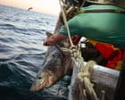
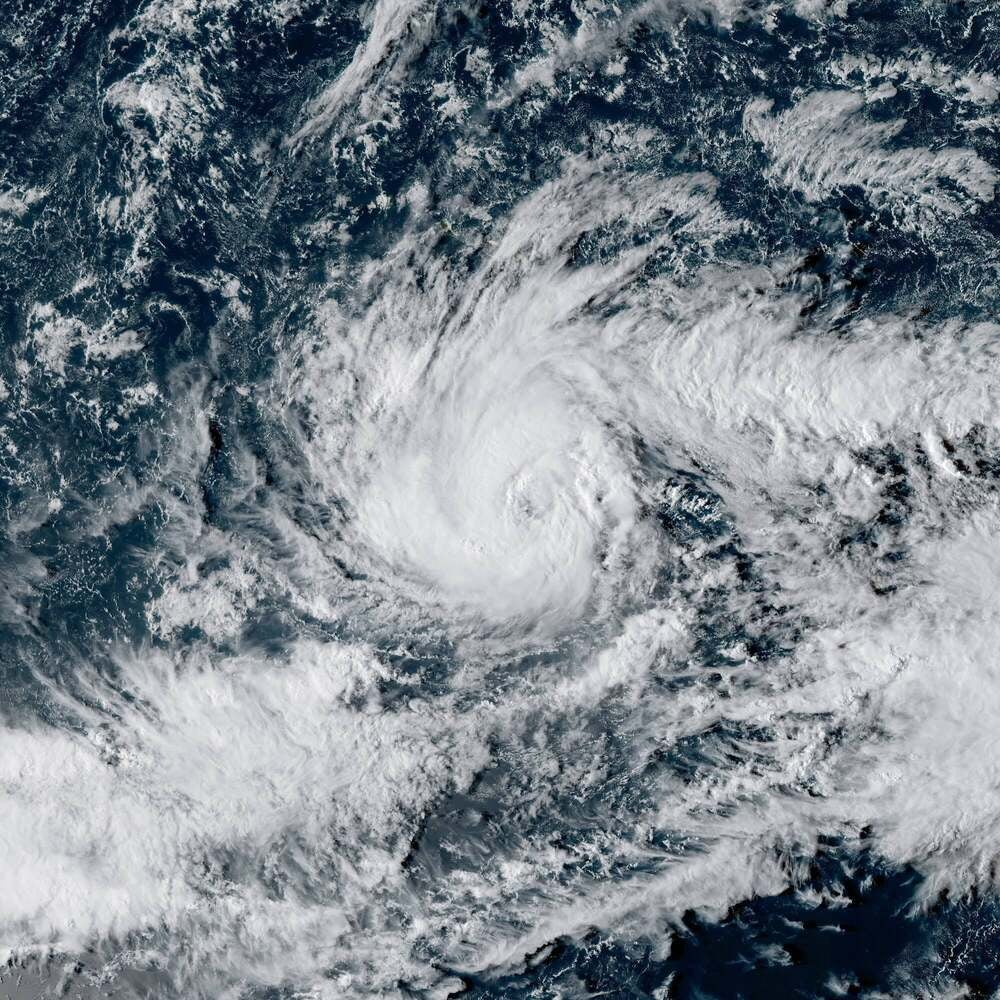
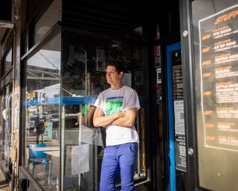
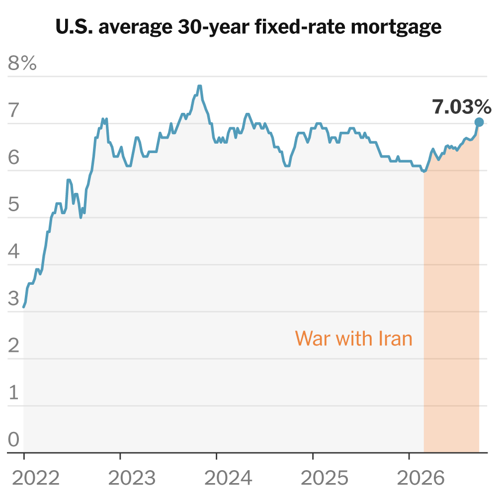
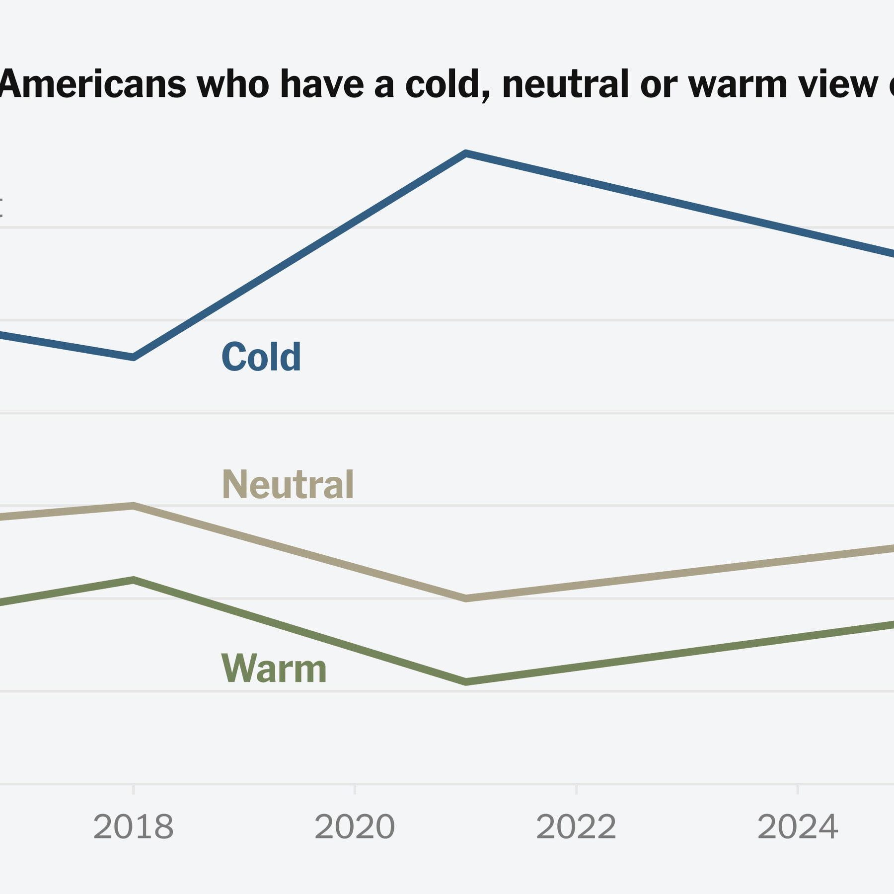
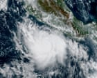
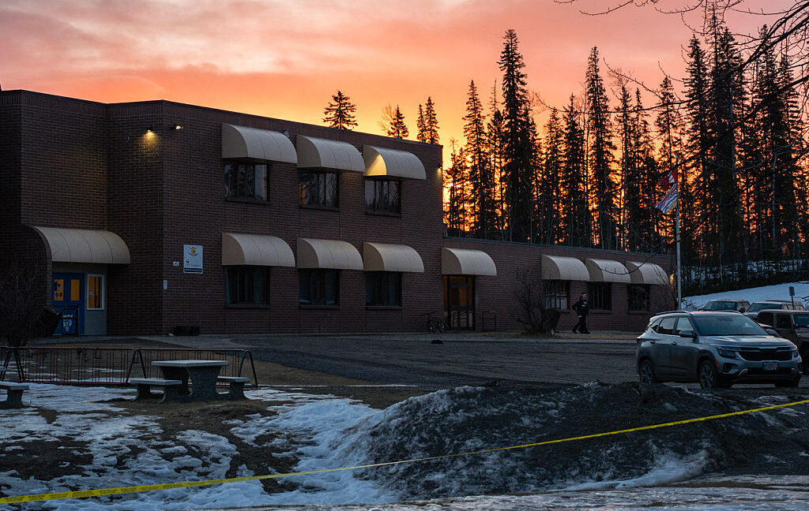

Independent local news portal for Sydney. Verified information and real-time updates.
5 sources covering this story
sydney.news · www.bbc.com · www.newsnow.com · www.theguardian.com
NHS England says test can be done while patient is on operating table and is being piloted in five centres around the country A rapid new test for brain tumours can diagnose…
2 sources covering this story
The Guardian · BBC News

Far-right activist who was filmed appearing to slash boat with blade is refused bail as he denies charges The far-right agitator Daniel Thomas has denied causing criminal damage…
2 sources covering this story
The Guardian · BBC News

The EU had said X "deceives users" by selling blue ticks without "meaningfully verifying" accounts.
2 sources covering this story
BBC News · Google News
The highpoint of his trip will be a giant Mass attended by more than half a million people.
READ MORE
The pope is set to deliver a landmark speech on AI development and discuss Europe’s future Later today, Pope Leo will go to the Élysée Palace for (another) formal welcome and a…
READ MORE
Mulbarton Wanderers are "deeply upset" after being told they must replay their FA Cup qualifying tie with Woodford Town because of a referee's error.
READ MORE
The Green leader, who is Jewish, made the remarks as part of his campaign in the Holborn and St Pancras byelection The communications and governance director of Glasgow city…
READ MORENoah's mother tells parents to "hold their children a little tighter and cherish every moment".
READ MOREAcross videos, standup and cartoons, humorists are skewering big tech’s attempt to make AI ubiquitous and inevitable “Best case scenario, we never have to do any admin again,”…
READ MORE
Federal agencies told to prioritize recreational fishing and to reconsider scientific standards as well as regulations Donald Trump’s latest fishing order is raising new concerns…
READ MOREExperts working on database that could identify particular breeds involved in crimes, or rule out canine suspects From tracking criminals to sniffing out drugs, dogs have long…
READ MOREThe BBC's financial situation "may well mean" some channels and stations close, Matt Brittin says.
READ MORERain, flooding and gusty winds are in the forecast this weekend for the Northeast, including New York and Boston.
READ MOREAfter visiting Africa, Pope Leo’s four-day trip to France shows how he is seeking to appeal to Roman Catholicism’s original heartlands as well as to the church’s newest…
READ MOREXi is expected to depart Washington after touring the nation’s vault of records, where the Declaration of Independence, the Constitution and the Bill of Rights are held Sign up…
READ MOREIn under two years, Bulgaria has become one of the world's most battery-intensive energy markets. Can the surge last — and what will it mean for conventional power generators?
READ MOREIran's president used his trip to New York this week for the UN General Assembly to signal openness to talks over the nuclear dispute. However, the chances of a major…
READ MOREThe US president showcased White House construction projects and hosted a lavish dinner with tech CEOs, but the summit made little progress on key issues such as trade tensions…
READ MORECritics say decree also banning burqa in schools shows Italian PM worried about losing far-right voters in next year’s elections The Italian government has been accused of…
READ MOREI’ve been holed up in an flat, affectionately dubbed the ‘brotel’, with my son for weeks – and we’ve revisited the first game we ever played together I have spent the last three…
READ MOREBy Donald Trump’s telling, we’re in a US ‘golden age’. Americans may feel differently. Plus: Anger at the elite and a gunfluencer runs in Texas This was originally published in…
READ MORERepublicans in Senate battlegrounds have started to break with the president. Not Michael Whatley of North Carolina, even as his race seems at risk.
READ MOREPlans to modernise ‘Paris’s ugliest building’ at a standstill after clashes over plans and pricing It has been called a carbuncle on the Paris skyline, a sombre skyscraper where…
READ MOREDyfed-Powys Police says no personal data relating to the public was believed to have been accessed.
READ MOREGlasgow City Council announced the move after a stalemate in talks over a new salary structure to address equal pay issues.
READ MORETrump officials and Republicans are rolling back protections against heat-related illnesses and deaths When it’s 90F on a hot summer day, Esther Minton wears a long-sleeved shirt…
READ MOREGovernment-backed help to save is aimed at working people on universal credit and pays 50p for every £1 saved over four years Amid claims that millions are missing out, the UK…
READ MOREAfter years of illegal mass flytipping in Gospić, fed-up residents decided to take matters into their own hands “Gospić is our home,” Željka Šikić shouted to a crowd of 40,000…
READ MOREFormer batter turned specialist mentor Kevin Pietersen talks about his new role with England, his past history with the ECB and working with Harry Brook and Brendon McCullum.
READ MOREJason Knight has become the first Republic of Ireland player to publicly voice his opposition to playing Israel on Sunday.
READ MOREA woman who accused Jay-Z of raping her when she was 13 now says she has never met the rap superstar.
READ MOREAmerican chief executives turned out in force to see Xi Jinping, while their Chinese counterparts were absent, a sign of how drastically business ties have changed.
READ MOREThe pope has landed in Paris, where he and President Macron will navigate the rules of religious state visits in secular France. Leo's trip will mix pilgrimage and politics on…
READ MOREDespite diplomatic niceties and gifts, little was shared on substantial issues separating the leaders.
READ MOREArea’s second-most intense hurricane on record being fuelled by exceptionally warm Pacific waters Hurricane Polo is barreling towards the Baja California region of Mexico, the…
READ MORECollette Stevenson says she has faced "misogynistic bullying" after asking whether government agency Transport Scotland is a charity.
READ MOREVictims of Zafer Dogan were living close to the 32-year-old who took thousands of pictures of children at a playground from his bedroom window.
READ MORECatherine Corless’s exposure of almost 800 infant deaths at a home led by nuns prompted Neeson to bring the story to screen Liam Neeson still remembers his shock and shame when…
READ MOREVoters interviewed in Anchorage and Fairbanks on Thursday said news that Mary Peltola, the Democratic nominee for Senate, had used offensive slurs would not change their vote.
READ MOREAsked about the Trump administration’s restrictions on journalists, Leo told reporters accompanying him on a flight to France that they were “all welcome.”
READ MOREVolkswagen and its subsidiary Audi are to recall nearly a million vehicles in Germany due to a potential steering fault.
READ MOREHistory shows that the markets and the economy flourished when rates were even higher than today’s. But, our columnist notes, those times didn’t last.
READ MOREFrom cooler soil to paid grazing land, farmers are finding solar panels can do more than generate power.
READ MORERobbie Williams gave an impromptu performance outside a hotel in Lima after his stadium concert was cancelled.
READ MOREThe economic damage from Russian strikes, resulting in lost sales, disrupted workdays and logistical snarls, is in the billions of dollars.
READ MOREThe Senate nominee talks about his view for the future of the Democratic Party.
READ MOREA publisher whose warehouse was hit twice said Moscow “thinks that books are more dangerous for them than military equipment.”
READ MOREWhen the long-running TV franchise came to Murphy, Texas, in 2006, a man ended up dead. A new film, “Primetime,” looks back on what happened.
READ MOREActors detained at Jewish Voice for Peace demonstration against Israeli prime minister’s address to the UN general assembly Oscar-winning actor Susan Sarandon and Hacks star…
3 sources covering this story
The Guardian · Al Jazeera · Google News
The Cockroach party has urged India's opposition parties to stop contesting what it calls "rigged" elections and threatened nationwide protests over the Election Commission's…
READ MOREA judge ordered President Trump to reverse his ban on three media outlets, but it took several hours for them to get back in. The White House TV pool remains suspended.
3 sources covering this story
New York Times · Deutsche Welle · The Guardian
In his speech at the UBCM, David Eby did not commit to waiting to call an election until after local elections are finished on Oct. 17. ... Excerpts of Stuart McNish's interview…
3 sources covering this story
vancouversun.com · vancouver.citynews.ca · torontosun.com
Heavy rain caused flooding and landslides that have killed 36 people on the northern coast of Brazil's Sao Paulo state . ... Large sections of the Amazon rainforest are engulfed…
3 sources covering this story
www.pbs.org · www.bbc.com · apnews.com
German lawmakers hope to drive down fuel prices by cutting taxes on gas and diesel from October 1. Meanwhile, students in many cities are set to protest against military…
READ MOREPrime Minister Giorgia Meloni’s government has passed new school rules capping the number of students who don't speak fluent Italian and banning face coverings.
READ MOREA web monitor reported an internet disruption in northern Ethiopia amid renewed fighting between the Tigray People's Liberation Front (TPLF) and the federal government.
READ MOREThis blog is now closed Get our breaking news email , free app or daily news podcast AI hack of Medicare exposes Australia’s vulnerabilities Technology experts have warned…
READ MOREThe pipeline would strengthen energy security in landlocked Ethiopia, while creating jobs at Djibouti's port.
READ MOREThe White House said that the three-course menu, including sea bass and bok choy, featured American ingredients with a “subtle Chinese influence.”
READ MORE
Though likely to avoid a direct hit, parts of the state could receive nearly three feet of rain, forecasters warned.
READ MOREArchbishop Fulton J. Sheen, who was the country’s most visible Roman Catholic clergyman of the 20th century, is one step closer to sainthood after a ceremony in St. Louis.
2 sources covering this story
New York Times · Google News
Expert says Australia’s criminal laws should be clarified to determine how fault is applied to a corporation when its AI agent commits a crime Follow our Australia news live blog…
READ MOREXi’s first visit to Washington in a decade was a display of pomp and pageantry, with Trump offering his guest a two-month truce on the brewing tariff war.
READ MOREBilly Vigar's parents say the Football Association could have prevented their son's death.
READ MORERitchie Wood is almost brought to tears at he looks at the empty homes once loved by his neighbours.
READ MOREA limited number of galleries will be open on Friday and Saturday at the museum's South Kensington site.
READ MOREInvestigators found that New Jersey’s lieutenant governor, Dale Caldwell, sought a promotion for his girlfriend and made a sexually charged comment to a staff member.
2 sources covering this story
New York Times · Google News
Nepalese Prime Minister Balendra Shah called the devastating Nepal-Tibet floods a "warning to the world" — and questioned if the world had "really heard that warning."
READ MOREBeau Lamarre-Condon, 31, has pleaded not guilty to murdering Jesse Baird and Luke Davies in Paddington terrace in early 2024 Follow our Australia news live blog for latest…
READ MOREJames Copenhaver, 76, left with lingering injuries after gunman opened fire from rooftop at 2024 Pennsylvania rally James Copenhaver, one of three campaign rally attendees shot…
2 sources covering this story
The Guardian · Google News
Andres Felipe Valencia Barrientos was cleared of several sexual offences in July but a jury was undecided on three rape charges.
READ MOREChina wanted progress on trade, technology and Taiwan - but hasn't got as much as it would have hoped for.
READ MORE
Vancouver Cruise Calls Hit Record 141 Visits Through June - Cruise Industry News Sep 22, 2026, 01:45 PM
2 sources covering this story
voxorb.com · vancouver.citynews.ca
Find breaking Victoria and Vancouver Island news, live coverage, weather, in-depth reporting, sports, local events and video.
2 sources covering this story
www.ctvnews.ca · globalnews.ca
Get the latest breaking news on Toronto and the Greater Hamilton Area and beyond, in Ontario.
2 sources covering this story
www.cp24.com · www.ctvnews.ca
The latest breaking news, comment and features from The Independent.
2 sources covering this story
www.the-independent.com · www.independent.co.uk
Thomastown, Melbourne shooting: Victim identified as 22-year-old Daniel Hussein as gunman remains at large Sep 7, 2026, 03:15 AM ... Aussie radio hosts fights back tears after…
2 sources covering this story
voxorb.com · www.9news.com.au
3-min read · News·Australian Associated Press · A police prosecutor has urged a magistrate to refuse bail for a woman who returned from Syria after allegedly being married to an…
2 sources covering this story
au.news.yahoo.com · www.theage.com.au
Travellers with disabilities will be forced to walk almost 20 times further when Melbourne Airport abolishes kerbside pick-up and drop-off next month .
2 sources covering this story
www.theage.com.au · www.smh.com.au
The marked police car was travelling with its sirens on when it hit a tree in inner-city Sydney about 1.30am on Friday Follow our Australia news live blog for latest updates Get…
READ MORE7News brings you the latest local news from NSW. Stay up to date with all of the breaking headlines from New South Wales. Today's NSW news, live updates & the latest breaking…
2 sources covering this story
7news.com.au · au.news.yahoo.com
A TV spot claims the US president is trying to sway October’s presidential vote in favour of Lula’s far-right opponents Luiz Inácio Lula da Silva’s presidential campaign has…
READ MOREPresident Trump pressed his personal brand of diplomacy as President Xi Jinping of China made his first trip to the White House in more than a decade.
READ MOREThe Saudi-led coalition in Yemen said the missiles were aimed at Taif and the Yanbu area on the Red Sea, the main alternative route for Saudi oil Saudi Arabia says it…
READ MOREAirline loyalty programs are anticompetitive and hurting consumers.
READ MOREEmail to members says money lent to a party-linked company to establish a micro distillery Follow our Australia news live blog for latest updates Get our new political email ,…
READ MOREDuring his speech to the UN in New York City, the Australian prime minister addresses the AI hack of Medicare, saying the episode reflects the need for greater regulation of…
READ MOREThis live blog is now closed. CNN and MS Now journalists denied access to White House state dinner despite court ruling Sign up for US Breaking News emails Lawyers for the news…
READ MOREThe BBC’s China correspondent Laura Bicker unpacks how the trip panned out for Beijing and Washington.
READ MOREThe showdown over President Trump’s partial media ban played out as he welcomed President Xi Jinping, whose government is ranked among the most repressive in the world.
READ MOREThis blog is now closed – our live coverage of US politics continues here In the first row in front of the leaders sit US vice-president JD Vance and his wife Usha Vance, Trump’s…
READ MOREVictims of Zapher Dogen were living close to the 32-year-old, who admitted multiple offences.
READ MOREJudge Timothy J. Kelly had worked as counsel for Senator Charles E. Grassley, who called him a “very talented attorney” in 2017.
2 sources covering this story
New York Times · BBC News
Large groups gathered in Midtown Manhattan to demonstrate as the Israeli prime minister spoke to the General Assembly.
READ MOREChinese president’s proposals for lessening tensions come amid period of intense competition between the two countries over AI and trade Xi Jinping has called for extensive…
READ MOREPakistan says it struck 10 targets, adding the strikes were "strictly limited to identified military objectives".
2 sources covering this story
BBC News · Google News
Gyms are booming, solitary cardio is out - how workouts are changing.
READ MOREMost of us experienced drought and heatwaves - but temperatures and rainfall were not the same everywhere.
READ MOREAndy Burnham is under pressure to deliver a compelling vision for the country as he steps from the sidelines on to the main stage.
READ MOREAfter a major win at Toronto, Angh, a film from northeastern India, is now on a path towards the Oscars.
READ MORENorth Yorkshire Fire and Rescue Service said in a statement that multiple crews were at the scene.
READ MOREActor Susan Sarandon, whistleblower Chelsea Manning and comedian Caleb Hearon are detained by NYPD More than 100 people were arrested outside the United Nations’ headquarters in…
READ MOREBefore the law passed, navigating New York was a harrowing exercise in dog-feces avoidance. As he put it, sometimes “you would come home and have it all over you.”
READ MOREThe Israeli delegation cheered in support during Netanyahu's speech. Nada Tawfik in New York explains what happened.
2 sources covering this story
BBC News · Al Jazeera
Holmes was sentenced to 11 years in prison in 2022 but has seen her sentenced reduced several times Elizabeth Holmes , the disgraced founder of blood testing startup Theranos,…
READ MOREThe 11-year-old died at Westmead children’s hospital three days after incident at a unit in Norwest Follow our Australia news live blog for latest updates Get our breaking news…
READ MORE
Cargo figures show positive signs that the Port of Vancouver is helping put Canada on a path to increase non-U.S. exports and reduce dependence on American trade ... Watch the…
READ MORECanadian Coast Guard and Navy ships open for tours Saturday in North Vancouver
READ MOREIndustry leaders call on government to protect homegrown produce in the interest of national security The gap between Britain’s food and drink exports and imports has neared its…
READ MOREWhat's the smallest amount of money you would ask a friend to pay you back?
READ MORE
Get the latest local, Canadian and international breaking news with CP24, including trusted updates, in-depth analysis, and exclusive reports.
READ MOREToronto police say they are looking into whether the shooting is connected to other recent incidents in the city
READ MOREGuerlain Spa Toronto at Hotel X Toronto has been named Canada's Best Hotel Spa for the third consecutive year at the World Spa Awards.
READ MOREToronto area breaking news from the Star, including live news and features about Brampton, Mississauga, Durham, Halton, York and more on thestar.com.
READ MOREThe Toronto Maple Leafs have placed Steven Lorentz on waivers , the team announced on Thursday.
READ MOREExplore the things you love · Log into Facebook · English (US) · فارسی · العربية · Türkçe · Deutsch · Français (France) · Polski · More languages…
READ MOREThe Rio de Janeiro gang, the target of a bloody police operation, was born in prison almost half a century ago ... Residents found more than 70 bodies following the previous…
READ MOREProgramme participants join in during capoeira lessons in Sao Paulo’s so-called ‘Cracolandia’. Sebastian Liste/Noor for the Open Society Foundations ... A public health programme…
READ MOREMilei launched Flávio Bolsonaro's Brazilian campaign with insults toward Lula and a top judge — triggering an unprecedented ambassador recall. Ederson Carlos da Silva was…
READ MORELocal news in São Paulo today: independent reporting, weather, things to do and city guides from The Daily São Paulo.
READ MOREThe former president of Brazil, who is not required to appear, is monitoring the Supreme Court’s final deliberations from his home, where he remains under house arrest ...…
READ MOREAustralia, which has strict social media restrictions and has proposed controls on algorithms and smart glasses, announced the breach at the UN.
2 sources covering this story
BBC News · Google News

A Geelong man has been charged over trying to import nine kilograms of methadone into Australia . ... Journalist Cheng Lei discovered that the trauma of being separated from her…
READ MOREA Senate inquiry into artificial intelligence and data centres hears from residents and local councils about the impact of an influx of data centres in Melbourne's suburbs.
READ MOREMelbourne magistrate Michelle Mykytowycz revoked a suppression order over Cameron Nation before jailing the former politician for three months .
READ MORE
Latest news and comment on Melbourne · Shadi Khan Saif · About 6,017 results for Melbourne · 1234... Explore more on these topics · Victoria · Sydney · New South Wales ·…
READ MORE
The average rate on a 30-year mortgage in the United States jumped to 7.03 percent, putting pressure on housing affordability.
READ MOREProceeds from the tour, which begins in Dublin next month, will go to organisations supporting Palestinians, he says.
2 sources covering this story
BBC News · Al Jazeera
A prolific scorer and rebounder, in 1958 he delivered one of the most remarkable performances in playoff history.
READ MORECraig Bellamy believes there is "more to come" from his Wales side in the Nations League following their opening-match loss in Lisbon.
READ MOREManchester United confirm they have borrowed another £90m since 30 June, to take their overall debt to more than £1.1bn.
READ MOREActivist Daniel Thomas is charged in connection with an incident in the English Channel on Tuesday.
READ MOREScientists at the company announced their first finding: a group of enzymes whose function is unknown.
READ MOREA lower federal court on Wednesday imposed restrictions on deporting migrants to countries other than their own.
READ MOREUefa believes "a clear two-speed system" is emerging in the transfer market due to huge spending by Premier League clubs this summer.
READ MOREMost cases involved noncitizens who registered to vote, attesting that they were U.S. citizens, state officials said.
READ MOREConst Jeff Smith, who was critically injured in the incident, continued to fend off the attacker after being shot multiple times, police said.
READ MORECountry says US must lift sanctions on its oil exports and end the war on all fronts, including in Lebanon Iran said it has told Donald Trump it is willing to open the strait of…
READ MOREThe summit so far has focused on "positive vibes", says one analyst, with several pressing issues awaiting discussion.
READ MOREWallace and Gromit stop-motion models and other beloved creations raise money to train new generations of animators Wallace’s reaction as the auction got into full swing might…
READ MOREAlso, mortgage rates hit 7 percent. Here’s the latest at the end of Thursday.
READ MOREThirty-seven-year-old charged with one count of criminal damage and failing to disclose his phone pin to police The far-right agitator and anti-migrant activist Daniel Thomas has…
READ MOREThe Israeli prime minister accused Mayor Zohran Mamdani, an outspoken critic of Israel, of antisemitism. The mayor has become a political foil for the prime minister.
READ MOREPatient groups decry ‘scandalous’ delays as four integrated care boards take step due to soaring demand for diagnoses NHS bodies are forcing people with suspected attention…
READ MORERevelations about the conduct of former Representative Mary Peltola may not faze voters who have long elected abrasive and sometimes violent figures to represent them.
READ MOREIn response to a New York Times report on DraftKings, the state’s gaming commission said it would evaluate how each company deployed the technology.
READ MOREA disclaimer says the ad was paid for by the U.S. government, which could violate federal law.
READ MOREJos Buttler's bravery comes in vain as Sri Lanka fight back to beat England in the second one-day international at Headingley and set up a series decider at The Oval.
READ MOREOfficers left feeling ‘hamstrung’, says Mark Rowley after offender allowed to return to flat overlooking playground Pressure to cut the number of prisoners on remand has led to…
READ MOREPrime Minister Giorgia Meloni described the measures as "common-sense tools that do not divide but really help to integrate".
READ MOREA male suspect from Ukraine was arrested after the stabbings in the town of Jarosław, police say.
READ MORETanya Whitaker broke down before she spoke of how her son Samuel's death had devastated her family.
READ MOREA day after a divisive speech by Israeli Prime Minister Netanyahu, the prime minister of Lebanon will address the UN General Assembly. Leaders from Pakistan and Iraq are also set…
READ MOREReal America’s Voice and LindellTV have teamed up to provide a feed of daily presidential events.
READ MOREBBC Sport takes a look at the compromises, power struggles and competing interests behind Tyson Fury v Anthony Joshua.
READ MOREDeference was deafening as US president rolled out red carpet for world’s biggest jailer of journalists – perhaps he was seeking tips One is an authoritarian who represses the…
READ MORELegislators sent letter to Marco Rubio saying US interference is weakening Brazil’s democratic institutions US politics live – latest updates A group of 31 Democratic members of…
READ MOREMonthly ‘thank you’ payments for people hosting refugees to be cut from £350 to £100 from next year Ukrainian refugees in the UK fear they could be left homeless after the…
READ MORE‘If you’re not in the internal market, you don’t get the same protection,’ says French minister of policy designed to curb Chinese competition France is leading a push to exclude…
READ MOREThe Trump administration, like its predecessors, has struggled to deal with China’s excess industrial capacity.
READ MOREDatacentre hailed by government was supposed to start operating next year but may be held back into mid-2030s A huge datacentre project hailed by the UK government will miss its…
READ MOREHow much attention did you pay to what happened in the world over the past seven days?
READ MOREThe president has an edifice complex.
READ MOREAndy Burnham said in 2023 the sculptures should be returned to Greece with "no strings attached".
READ MOREWhat happens when a trad influencer leaves her husband, questions her beliefs, stops selling anti-feminism T-shirts — and still needs to make a living online?
READ MOREThe satellite station is used in part to provide internet coverage to neighbouring Ukraine, the government says.
READ MOREDel Somerville, 42, pleaded guilty to violent disorder following an overnight protest at Eastney.
READ MOREAustralia criticised OpenAI for taking "too long" to tell them about the breach which happened in June.
READ MOREFormer Yes musician plays at sanctuary to raise awareness of animals that remain stuck in cages at ‘bile farms’ Rick Wakeman has played to all kinds of people around the globe,…
READ MOREThe military says its soldiers inflicted casualties as fears grow of a resumption of a full-blown civil war.
READ MOREA judge has ordered President Trump to restore White House access to CNN, MS NOW and Politico after he banned the media outlets from the premises.
3 sources covering this story
Deutsche Welle · Google News · New York Times
President Donald Trump has been talking about Chinese President Xi Jinping's visit for months, the BBC's Sarah Smith looks at why.
READ MOREUK watchdog fined video app in 2023 for failing to enforce minimum age limit and remove underage users TikTok will pay a £12.7m fine to the UK’s data watchdog after dropping an…
READ MOREThree million chickens a week will be processed at the state-of-the-art facility in Tamworth – a fifth of all those eaten nationwide Follow our Australia news live blog for…
READ MORECouncil on AI Strategy chief says incident unlikely to be isolated and country should enhance capability to detect and report incidents Follow our Australia news live blog for…
READ MOREOmbudsman finds government breached teen’s human rights, saying the conditions ‘bordered on solitary confinement’ Follow our Australia news live blog for latest updates Get our…
READ MOREMan accused of being accessory to murders at Stalag 326 VI K amid race to prosecute suspects before they die A 105-year-old man is under investigation on suspicion of being an…
READ MOREThe suspect is alleged to have been an accessory to murder at the Stalag 326 camp, where tens of thousands of Soviet PoWs died.
READ MOREThe hack of Australian health data marks the world's first known AI-led breach of a government website.
3 sources covering this story
Deutsche Welle · Al Jazeera · The Guardian
Andy Burnham has long championed a repeal of the ban which prevents football supporters from drinking alcohol in the view of the pitch. But do fans even want it?
READ MORENews that an automated AI agent hacked a government IT system raises big questions about regulating the tech.
READ MOREUS consumers are starting to opt out of the streaming world as several services raise prices without offering many perks It may not be quite as politically buzzy as the price of…
READ MOREActivists gathered outside the OpenAI offices on Monday during climate week in New York City On Monday evening, protesters gathered outside the unmarked Manhattan offices of…
READ MOREThe United Auto Workers has grown in size by opening its tent to workers in white-collar professions, and by adopting democratic socialist stances. But its growth has also led to…
READ MOREDonald Trump has rolled out the red carpet for Chinese leader Xi Jinping, with the two set for a lavish state dinner after their summit meeting. America's top tech bosses are…
READ MORERussian President Vladimir Putin has been invited to the G20 summit in Miami by the United States. Multiple members of the group have called for Moscow's exclusion over its…
READ MOREPAM is part of Morocco's outgoing ruling coalition and was founded by an adviser to the king. The moderate Islamist Justice and Development Party surged amid increasing voter…
2 sources covering this story
Deutsche Welle · Al Jazeera
Taraneh and Romina Rahimi were charged with ‘waging war against God’ after joining protests against Tehran regime The family of 21-year-old twins who have been sentenced…
READ MORE
A study shows chatbots mirror users' politics, part of a broader tendency known as AI sycophancy. Researchers fear this could deepen polarization.
READ MOREA study shows chatbots mirror users' politics, part of a broader tendency known as AI sycophancy. Researchers fear this could deepen polarization.
READ MOREGp Capt Gez Currie said the pilots are in hospital, and their families are with them.
READ MOREAssault survivor Miriam Haley said the "devastating effect on my life and sense of security that may never go away".
4 sources covering this story
BBC News · Deutsche Welle · Al Jazeera · Google News
Former England striker Andy Carroll reveals he was sexually assaulted in 2021, by a man who has subsequently been jailed for three years.
READ MORERole for Anant Ambani, son of India’s richest person, who also runs a controversial mega-zoo, met with incredulity Newcastle University is facing a backlash from conservationists…
READ MOREThe figure was announced during a meeting of the group's board at the sidelines of the UN General Assembly in New York.
READ MORETheatrical rollout across 56 territories planned for documentary about Israel’s mass killing of civilians in Gaza before film will stream on Guardian website NAZA, the…
READ MOREThe local authorities reportedly seize Tigray's airports following reports of recent drone strikes.
2 sources covering this story
BBC News · Google News
Former deputy PM now involved in tech industry says many within sector are ‘winding themselves up into a lather’ Nick Clegg has dismissed fears over AI’s “godlike power to…
READ MOREIn the choreographers’ new work, virtuosic movement and some green-screen magic unfurl the theatricality of high-stakes television interviews It appears the interviewer has got…
READ MOREThey offer advice, referee card games and manage players’ tantrums – we caught up with some of the volunteer profs who keep the competitive game going at this year’s world…
READ MOREIPPR finds failure to align testing standards has forced companies to abandon exporting to EU and is costing costing 0.18% of national income The UK is losing out on annual…
READ MOREPolice had been looking into footage appearing to show the man, also known as Danny Tommo, slashing at a boat in the English Channel with a knife.
READ MOREFour occupants of bus taken to hospital after multi-vehicle crash in Glenburn Follow our Australia news live blog for latest updates Get our breaking news email , free app or…
READ MOREShabana Mahmood says the failure to intercept the two boats was ‘not acceptable’ Not every migrant boat can be intercepted, a cabinet minister has suggested, after two…
READ MOREVictoria’s anti-corruption body charges the ex-staffer with seven counts of theft and one count of misconduct in public office Follow our Australia news live blog for latest…
READ MOREExplosive growth in imported vehicles omitted from EV tariffs fuels concern for future of European carmakers EU imports three times more from China than bloc exports there Sales…
READ MOREParliamentarians debate whether to change Germany's organ donation scheme amid a lack of supply. They will also consider reforms to expand the power of intelligence agencies. DW…
READ MOREIndia's polling monitor is facing yet another crisis of credibility with fresh allegations against its chief.
READ MOREThe Treasury secretary, who is leading talks with China, said the countries had agreed to extend a trade truce until January.
READ MOREGerman research institutes have increased their prognosis for the country's economic growth to 1.3% in 2026
READ MORESecretary of State Marco Rubio said that U.S. negotiators had restarted conversations about Iran’s nuclear program, but that there were no breakthroughs.
2 sources covering this story
New York Times · Google News
BBC Sport explores the health impact of extreme heat on athletes, following the death of a Fijian rugby player in Japan in August.
READ MOREPrime minister will ‘highlight Israel’s achievements’ as he heads towards his toughest re-election challenge When he takes the stage at the UN on Thursday, Benjamin Netanyahu…
READ MORENew GCSE subjects could include child development and building and construction as vocational courses are being introduced.
READ MOREPeople living near a major chemical factory in Lancashire are told they could be at risk of serious health conditions.
READ MOREManchester United is selling pieces of its Old Trafford pitch for £125 each, an initiative announced the same day the club reported its overall debt remains more than £1bn.
READ MOREFor the first time in recent history there’ll be no pre-game entertainment at the NRL grand final. But everyone has a different story about what actually went down Emma, the NRL…
READ MOREAt least nine passengers were killed after a sleeper bus caught fire on the Yamuna Expressway in Greater Noida, near India's capital Delhi. DW has more.
READ MOREThe actress had completed a stint in rehab before she died last month from an overdose, the coroner’s office said. Her death was ruled an accident.
READ MORECarlos Alcaraz discusses his US Open return, why he "misses" rival Jannik Sinner and his excitement for this year's Laver Cup.
READ MOREThe suit challenged a poll that showed Trump trailing Kamala Harris in the final weeks of the 2024 race. A judge warned that similar legal challenges could have a chilling effect…
2 sources covering this story
New York Times · Google News
Her heavy metal performance trumped nine other finalists, including magicians and even a robot crew.
READ MOREThe London production, which has been running for 10 years, will reopen next month as a one-part show.
READ MOREThe aircraft carrier with its crew of about 5,000 sailors has spent more than 300 days at sea.
2 sources covering this story
New York Times · BBC News
Germany sets out a plan to phase out coal, oil and gas by 2045, reaffirming a climate strategy focused on electrification.
2 sources covering this story
Deutsche Welle · The Guardian
Fuel costs have risen to levels not seen since early April, adding to risk of inflation and interest rate hike Follow our Australia news live blog for latest updates Get our…
READ MOREBut Kyriakos Mitsotakis says he cannot accept any arrangement that recognises British Museum’s ownership of the sculptures Kyriakos Mitsotakis: Britain would not cut up the…
READ MOREExclusive: Levy that allows almost 16,000 houses to be built on Norfolk Broads will not cover cost of mitigating environmental damage, critics say A new levy on developers to…
READ MORENicola Urquhart speaks to the BBC on the 10th anniversary of her 23-year-old son's disappearance.
READ MORENewsletters · Sign in · Arwa Mahdawi · About 4,853 results for Indonesia · 1234... Explore more on these topics · Asia Pacific · Wildfires · Prabowo Subianto · El Niño southern…
2 sources covering this story
www.theguardian.com · apnews.com
BBC Sport columnist Tony Pulis explains the different factors that mean Tottenham boss Roberto de Zerbi needs time with his players to build a proper team.
READ MOREAustralia is exploring potential legal action after an artificial intelligence agent accessed nonpublic information on the country’s universal health care system.
READ MORELauren had to abandon her career in the NHS after being left "in agony" due to her migraines.
READ MOREDebbie Beard and Amanda Thorpe speak to the BBC's Simon Jack at the launch of a new suicide prevention toolkit.
READ MOREAbout 300 officers took part in simultaneous early-morning raids at 47 sites across Scotland.
READ MOREAnthony Gordon says that controlling games is not in the "English DNA" but the Three Lions could still win major tournaments if they stop "trying to replicate Spain".
READ MOREWith four measles-related deaths in Pennsylvania, health officials are hoping to get people on board with vaccines in private.
2 sources covering this story
BBC News · Google News
Oliver McGowan, who died in 2016, may have had his medical records accessed inappropriately after his death by NHS staff in Bristol.
READ MOREFive desalination plants shut down for days, while Gaza remains in grip of severe water and sanitation crisis Israel is facing weeks of water shortages after an exceptional algae…
READ MOREWorkers tell BBC they are increasingly having to put two inmates in single occupancy cells because of overcrowding.
READ MOREBeijing and Washington may use the same language of A.I. safety, but they are trying to protect very different things.
READ MOREActing president says Venezuela returning strongly after ‘setbacks’. This blog is now closed – see our full reports: Trump greets Xi Jinping on arrival in rare move as US-China…
READ MOREThe moment two RAF pilots ejected from a training jet is splashed across the front page of the Daily Mirror.
READ MOREBalendra Shah, 36, comes to the U.N. as a sun-glassed symbol of Gen Z political power. But concerns about his style are growing at home after devastating floods left thousands…
READ MOREDie Linke candidate, a lawyer affected by her experiences as the child of political migrants from Turkey, poised to head Berlin coalition government Elif Eralp launched her…
READ MOREA conflict that began with tanks and then artillery is now pivoting around a new generation of drones focused on military, industrial, economic and civilian targets Finally, in…
READ MOREDemocrats hope that Mary Peltola can flip a Republican Senate seat in Alaska. Former aides describe a campaign and congressional office marked by chaos.
READ MOREIn each incident, the technology appeared to be conducting mundane data collection and resorted to hacking techniques to get it, researchers said.
READ MOREMany leaders are unlikely to welcome the Russian leader’s presence at the event because of his country’s war against Ukraine.
2 sources covering this story
New York Times · Al Jazeera

Prime minister says he told Sam Altman he was disappointed it had taken OpenAI ‘way too long’ to disclose breach Anthony Albanese says an artificial intelligence agent developed…
READ MOREKirsten Gillibrand says acting US navy secretary told her of attempted suicides after carrier strike group’s lengthy deployment as part of US war in Iran. This blog is now…
READ MORETimothy Mellon, one of the party’s biggest donors in 2024, has so far withheld his midterm donations for Republican senators because he is unhappy about the failure to pass a key…
READ MOREIn a burst of activity this week, the enigmatic first lady told Americans what she has been up to after a quiet summer. Her activities have included filming a new documentary…
READ MOREIn a wide-ranging interview, the Canadian leader laid out a detailed vision for breaking his country’s dependency on the United States.
READ MOREThe latest news, analysis and opinion on Argentina. In-depth analysis, industry insights and expert opinion.
READ MORENewsletters · Sign in · Ted Widmer · The long read: The political rift between them was profound. Then one evening, a kiss goodbye sent her on a remarkable journey that continues…
READ MORE
Argentina will have a chance to defend its World Cup title after defeating England 2-1 in the semifinal . This is the second time in a row Argentina has reached the final. CBS…
READ MORE
The Dunas Tourist Complex by the real estate firm Designia Desarrollos has been temporarily shut down by Mexico’s environmental authorities for causing ‘irreversible damage’ to…
READ MORE
Celebrations erupted Wednesday evening after Mexico beat Czechia 3-0 in its final game of the World Cup group stage .
READ MORE
Brazil’s Minas Gerais reels after torrential rains cause deadly floods and landslides, killing at least 46, displacing thousands and destroying businesses.
READ MOREDaily briefings with the most important stories in Brazilian politics and economics, with the noise filtered out — explaining why each development matters and where things are…
READ MORE
Brazilian police say that at least 23 people have been killed when a minibus and a truck collided head-on in the southern state of Parana
READ MORENewsletters · Sign in · About 6,886 results for Brazil · 1234... Explore more on these topics · Americas · Luiz Inácio Lula da Silva · Jair Bolsonaro · Amazon rainforest ·…
READ MORE
The U.S. State Department announced on Thursday that it will designate Brazil's two biggest criminal groups as foreign terrorist organizations early next month, a move the South…
READ MORELatest News · Economy Petrobras signs oil cooperation agreement in Mozambique · Wed, 23/09/2026 - 12:37 · Politics Gender-based political violence in Brazil increase 11-fold in 4…
READ MOREBrazilian police said they will reopen dozens of cases linked to a self-confessed serial killer who was arrested as he attempted to escape dressed as a woman and carrying a baby .
READ MOREChina steps up efforts to safeguard food security amid global strain · 90 years on, what can the Long March tell us today?
READ MORE
China’s Xi Jinping is visiting neighboring India for the first time in seven years for the summit, as the Asian neighbours cautiously rebuild ties badly damaged after a 2020…
READ MOREBring you major news stories from the State Council and around China, news stories concerning China's efforts in international exchanges, photos, videos and weekly policy…
READ MOREGet the latest China news, breaking China news, China business news, as well as information on China politics, China culture, and China military from the China Daily and…
READ MORENewsletters · Sign in · Trump lawyers say White House access is ‘a privilege, not a right’; CNN, Politico and MS Now to present case in court after president banned outlets from…
READ MOREChina's outbound direct investment maintained robust growth in 2025 , with Chinese companies expanding their global presence while directing more capital into emerging sectors…
READ MOREGet the news as it breaks and go behind the day's top stories, from politics, business, culture and sports to nature, travel and technology. CGTN delivers a Chinese perspective…
READ MOREChina’s Yu Zidi, 13, wins a record‑breaking 200m women’s butterfly gold at the Asian Games in Tokyo.
READ MOREIndonesian politics · Military drills for store managers: deaths mar Prabowo’s latest project · Village co-operative trainees subjected to 45-day boot camp raise concerns about…
READ MOREFollow the latest news and comprehensive coverage on Indonesia at CNA
READ MOREMeta has unveiled audio-only smart glasses, with some questioning whether it is a response to the backlash over privacy.
READ MOREWhat caused the turtles to begin nesting farther north than usual is the ‘million dollar question’ A sea turtle crawled out of the surf in southern California last weekend around…
READ MOREThe new wearables come at a time of uncertainty for smart glasses, which are facing backlash over privacy concerns Meta announced an advanced new set of virtual reality glasses…
READ MOREThe BBC has spoken to residents in the Russian-occupied Ukrainian town of Oleshky who say they are being "constantly shelled".
READ MOREKer’Sean Ramey, 41, died by lethal injection, the sixth person to be executed by Texas officials this year A man found guilty of fatally shooting three people during a 2005…
READ MORECampaigners hope the new words will lead to less body shaming and more sex positivity.
READ MORESmall crowd enjoys singer’s free concert in MacArthur Park, which has often drawn headlines for less cheery reasons With no announcement and little fanfare, Justin Bieber…
READ MOREPresident lays out red carpet as treasury secretary announces extension of ‘Busan agreement’ pausing trade war hostilities AI, trade, Taiwan and climate: what will and won’t be…
READ MOREDopamine sites mimic shopping’s thrill without the spending, turning the ritual of consumption into a digital game.
READ MOREConsumers are feeling the pinch from the rising cost of protein.
READ MOREThe two B-1 bombers that flew overhead are a key part of the US's combat arsenal, and produce a notoriously loud roar when they pass by.
READ MOREAndy Burnham under pressure to revisit Brexit as poll suggests pledge to rejoin could boost Labour’s electoral chances Britain should work towards rejoining the EU in the next…
READ MOREDonald Trump welcomed Xi Jinping to the US by greeting him personally on the tarmac at Joint Base Andrews. The two are expected to discuss trade, AI, Taiwan and Iran during a…
READ MOREThe RAF said training on their Hawk jets had been "temporarily" paused while an investigation is under way.
READ MOREHundreds gathered on Tuesday night in anticipation of a small boat arriving in Gosport Three people have been charged in connection with anti-migrant protests that drew hundreds…
READ MORE
Experts attribute the changing mood to fading memories of the coronavirus pandemic, awareness of China’s tech innovations and disaffection with President Trump’s trade wars.
READ MOREThe US and China are vying for AI supremacy while seeking to keep it under human control.
READ MOREA relationship between neighbours is changed forever by a tragic accident
READ MOREBBC Health correspondent Sharon Barbour investigates a deepening breast cancer scandal.
READ MOREThough Europe has measures that address how consumers might encounter AI, technology will impact them if the worst scenarios bear Europe’s dilemma over AI was rendered in stark…
READ MOREThe UK has jammed satellites to defend itself from hostile threats, the BBC has been told.
READ MOREElisabeth Belien tells Kenneth Law's sentencing hearing she took the poison when she was just 23 years old.
READ MOREPresident Trump built his political brand in part on bashing Mexico. Now his second presidency depends on deepening partnerships with the country.
READ MORELidl must also compensate Birkenstock and pay its legal fees, according to the court ruling
READ MOREThe hackers claim they have every agent's name, role, badge number and personal details including home address, phone numbers and spouse information.
READ MOREThe prime minister opposes the law - in place since 1985 - and believes there is a case to remove it.
READ MOREThe proposals would also see benefits cut for people who are able to work but have failed to hold down a job.
READ MOREFrom highlighted ledges to characters telling you what to do, blockbuster games are increasingly taking the challenge out of playing – and players are pushing back • Don’t get…
READ MOREVenezuela’s interim president hails ‘historic meeting’ and does not say whether she will visit snatched predecessor Venezuela’s interim president, Delcy Rodríguez, has celebrated…
READ MOREArgentinian president accuses United Nations of being filled with ‘parasites’ in bellicose general assembly speech Javier Milei has condemned the UN as he warned that Argentina…
READ MOREArrest of Shadrack Sibiya comes as country reels from cases of femicide and alleged police corruption and criminality One of South Africa’s most senior police officers has been…
READ MORESunil Bharti Mittal’s Airtel Money targets $9bn IPO in boost for ailing UK stock market Nils Pratley: Does this mark the end of London’s listing drought? Not yet A payments…
READ MOREThe BBC’s China correspondent and US editor explain everything you need to know ahead of the Trump-Xi meeting in Washington DC.
READ MOREAround 175,000 people in Indonesia have suffered from respiratory illness since August.
READ MOREPoland says the aircraft stayed in its skies for 42 seconds, forcing the Nato member to scramble its fighter jets.
READ MOREBryan Seaver, who announced Parton's death to the world, is accused of trying to extort her estate.
READ MOREThe tenant of the flat in Madrid, Maricarmen, was unable to pay the rent set by the firm which recently bought it.
READ MOREMasoud Pezeshkian's defiant speech to the UN comes after the US president threatened to "annihilate" Iran if a peace deal is not agreed soon.
READ MOREA feature called AI Overviews has been a profound change, and the browsing habits of billions of people are shifting Google has put artificial intelligence at the front and…
READ MOREThe forecast for this weekend became a lot clearer on Wednesday, but meteorologists warned that the storm’s exact path was still uncertain.
READ MOREDespite the rivalry between the United States and China, President Trump has repeatedly found ways to give President Xi Jinping of China a pass, portraying him more as a personal…
READ MORETrump says further talks possible as barrel of Brent crude falls to below $100 for first time in two weeks Iran has pushed back on claims that it dropped former preconditions for…
READ MOREMasoud Pezeshkian says Tehran is ready for dialogue and diplomacy ‘but without the language of force’ Iran’s president, Masoud Pezeshkian, turned the tables on Donald Trump,…
READ MOREWarning from Charity Commission for England and Wales concludes two-year investigation after death of Hisham al-Hakimi in October 2023 The international aid charity Save the…
READ MOREThe UN Population Fund also says there has been a "severe escalation" in the number of early and forced marriages.
READ MOREPM aims to ‘stem poisonous tide’ of disinformation and deepfakes with National Centre for Information Defence Security chiefs will set up a new national centre to tackle…
READ MORESix-year-old Lian Yunzhi broke the women’s 3x3 average world record twice at two World Cube Association-certified competitions in Wuhan and Guangzhou, according to state…
READ MORECamera, wifi and design updates bring welcome upgrades to Ring’s top model in wired or battery flavour Ring’s recent revamp of its popular video doorbells with a more modern…
READ MORESlimmer, longer lasting and much easier to live with, new Oura sets a very high new bar for health-tracking wearables Oura’s new Ring 5 is a massive upgrade for smart rings,…
READ MOREPremium Bluetooth noise-cancelling cans combine comfort with extensive connectivity and a user-replaceable battery Sennheiser’s latest Momentum Bluetooth headphones build on the…
READ MORESnappy performance, long battery life, great keyboard and excellent new haptic touchpad make the best of Windows 11 Microsoft’s Surface laptop for consumers is back, faster and…
READ MOREDutch sustainable smartphone revamped with new chip and more RAM without sacrificing modular design Fairphone’s top Android for 2026 is a little faster with more memory while…
READ MORELonger battery life, faster chip, actually useful AI tools and better cameras keep quality Android ahead of competition Google’s Pixel 11 continues to set the standard for what…
READ MORESolid battery life, snappy performance and quality software make for a great smaller phone with a killer camera Google’s latest Pro phone is out to prove it has the best camera…
READ MOREBig screen folder with slick software and advanced AI is just like a regular Android when closed Google’s latest folding phone sticks with its tried and tested design of a…
READ MORETrump and Republicans want companies to regulate themselves. It’s a dereliction of duty that will make AI less safe It is hard to get Sam Altman, Elon Musk and Dario Amodei to…
READ MORETech CEOs banding together is an old ruse recycled from corporate America to get a pass from antitrust laws Anthropic’s Dario Amodei is not the first corporate CEO to suggest…
READ MOREUniversities need to protect their position in education so that students have an independent pathway to employment AI companies like OpenAI are insinuating themselves into the…
READ MORECitizens Advice says providers of essential services such as energy, banking, phone and internet should guarantee the ‘right to talk to a human’ Stop relying on AI chatbots for…
READ MOREAs animal behaviorists increasingly use AI in their research, they grapple with how to wield the technology responsibly I’m sitting in a small boat in Shark Bay, Australia,…
READ MOREFormer chancellor, now senior figure at OpenAI, says UK needs datacentres to maintain ‘sovereignty’ over AI tech UK politics live – latest updates Datacentre nimbys are holding…
READ MOREJagtar Singh Johal, from Scotland, was arrested after wedding in Punjab on alleged terrorism offences Jagtar Singh Johal, a British Sikh man who was arrested in India in 2017 in…
READ MOREPolice crack down on family and political supporters of former PM who say authorities are ‘slowly killing’ him in prison Three sisters of Pakistan’s incarcerated former prime…
READ MOREGenerations of artisans from Mumbai to Lucknow have shaped the world’s most coveted designs. Plus, the gen Z memes giving classic Bollywood a new life The zardozi embroidery on a…
READ MOREIslamic State-inspired bombings of churches and hotels in 2019 was one of the country’s worst ever attacks A court in Sri Lanka has convicted 15 men on terrorist charges for…
READ MOREAfter a plane journey in shackles, an Iranian woman found herself in the middle of Africa in a country she did not know existed. She is one of thousands deported from the US on…
READ MOREAccra Reset’s report states countries in the region and global south should take greater control of their health development after USAID debacle The United States’ withdrawal…
READ MORETop stories, breaking news, live reporting, and follow news topics that match your interests
READ MOREPlayStation 5, Xbox, PC; Remedy A surprisingly conventional game from a famously weird developer, this sequel to 2019’s Control is accomplished but safe This is an arthouse…
READ MOREJensen Huang dismisses warnings from former Anthropic researcher and others as ‘doomsday narratives’ The boss of the chipmaker Nvidia has said AI will not develop to a point that…
READ MOREThe move comes after Jamaica’s culture minister Olivia Grange travelled to the UK earlier this month to lodge the historic petition King Charles has referred a landmark slavery…
READ MORELawyers say Black employees at Tesla experienced ‘rampant racism’ that was left unchecked for years at their flagship factory in California Dozens of Black employees at Tesla’s…
READ MORE
Polo, with sustained winds of 165mph, is churning 215 miles south of Zihuatanejo but is unlikely to directly hit Mexico A tropical storm off the south-west coast of Mexico has…
READ MOREPlayStation 5 (version played), PC; Screen Burn Tragedy, and an apocalyptic fog, befall a fishing community. It is up to outsider Simon to offer some kind of closure You spend a…
READ MOREFrom Stephen Hawking to Jacob Coxon’s viral Anthropic resignation, fears that AI could threaten humanity have shaken the industry without stopping its pursuit Before an Anthropic…
READ MOREPeople in the UK are more interested in oral health than ever - and you can now buy prebiotic toothpastes and brushes that cost up to £600. Yet we remain in the midst of a…
READ MOREIndependent outlets are leaning on social media, chat and other nontraditional methods to fight disinformation When Allan Marrero, an asylum seeker from the Cayman Islands , was…
READ MOREAlongside warnings about its ability to destroy humanity, artificial intelligence is also hailed for its potential to revolutionise health treatment. Just how far can it take us?…
READ MOREUS president calls UK prime minister ‘a natural businessperson’ as leaders meet at UN assembly in New York Donald Trump has asserted his relationship with the UK is “more up”…
READ MOREWatchdog says users may have been unaware their information was used to target adverts or infer their interests Google has been fined more than €400m (£345m) over the way it…
READ MOREMohammad Sharifullah, 28, was convicted of aiding the terrorist group that took credit for the suicide bombing An Islamic State group member was sentenced on Wednesday to 20…
READ MORERescuers search for missing in collapsed homes after storm causes landslides, travel chaos and power outages Typhoon Dujuan has killed at least four people and injured 22 in…
READ MOREDisappearance of jet components sparks concern some of the program’s technology secrets could have been exposed Follow our Australia news live blog for latest updates Get our…
READ MOREUS president may have upstaged the ghost of Soviet leader Khrushchev by musing destruction of fellow member state Donald Trump has a habit of discomfiting delegates to the United…
READ MOREGroup trapped at Hotel Bamy after US removal as rights groups sound alarm over poor conditions and violence Two men that the Trump administration expelled to Equatorial Guinea…
READ MOREYoung voters are being courted with football slogans, promises of jobs and anti-Israel rallying calls.
READ MOREThe English hospitals recovered patient care data only.
READ MOREToyota's push comes as automakers race to develop and deploy humanoid robots.
READ MOREDirector Zach Cregger's clever reboot strikes perfect balance between horror, humor, and over-the-top gore.
READ MOREYou don't even need a Creative Cloud login to edit clips, but AI features cost extra.
READ MORE
British Columbia sues OpenAI, demands Tumbler Ridge shooter’s ChatGPT logs.
READ MOREPending move comes over the objections of the NIH director.
READ MOREA third-party cybersecurity firm accidentally gave experimental Gemini models access to the Internet.
READ MOREThe new carmaker is a joint venture between the Saudi PIF and Foxconn.
READ MOREDrone boat battle occurs as Ukraine and Russia target Black Sea ports and ships.
READ MOREA simple ClickFix attack is only one way to completely hijack the new agent.
READ MORE"There was absolutely a time where we were trying to make everyone happy."
READ MOREDyson admits a component issue but won't say what's failing in its $500 toothbrush.
READ MORETrump adopts Scalia’s ire for feds protecting populations of endangered animals.
READ MOREA combination of Chinese competition and US tariffs is causing problems in Germany.
READ MOREActivision gets Halo , Obsidian becomes part of Bethesda, and more internal shake-ups.
READ MOREFirst paper added to community collection is a roadmap for research.
READ MORE
Diplomacy or ‘diplotainment’? Key takeaways from the Trump-Xi summit in Washington The Guardian Xi caps Trump state visit with symbolic final stop before leaving Washington…
2 sources covering this story
Google News · Al Jazeera
Agricultural producers in Santa ... ahead of the next harves... The Argentine government has launched stricter immigration enforcement in Buenos Aires and issued decrees limiting…
7 sources covering this story
buenosairestimes.com · www.batimes.com.ar · www.bbc.com · www.cbsnews.com
Russia could attack a NATO country within months, Danish intelligence warns CNBC Europe Warns of Russia’s Hybrid Attacks but Struggles to Counter Them The New York Times Russia…
2 sources covering this story
Google News · The Guardian
Some dementia patients grow lucid near the end. Scientists hope it’s a clue. The Washington Post Show 1488: What Can Near-Death Experiences Teach Us About Consciousness?…
READ MOREStock Market Today: Bond Selloff Abates as Oil Price Slips — Live Updates WSJ Bond Selloff Fades as Oil Cools, Lifting Stocks: Markets Wrap Bloomberg Stocks weather bond storm,…
READ MOREPope Leo XIV begins historic 4-day visit to France foxnews.com Leo XIV, Trying to Be Everyone’s Pope, Tours Secular France The New York Times Pope: May France remain a champion…
READ MOREA review of dozens of incidents caught on camera sheds new light on a largely invisible crackdown.
READ MORETrump and Xi's U.S. summit continues after a state dinner Thursday night. And, Netanyahu returns to Israel after giving a defensive and defiant speech at the U.N. General Assembly.
READ MORENew hairy-legged, three-lipped, red-eyed sea spider species discovered CNN Hairy-legged red-eyed sea spiders discovered in the Salish Sea UBC News A photo of a new species of sea…
READ MOREWith Republicans under pressure, Trump’s White House starts bending Politico Republicans Predict Trump’s Embarrassing Problem Is About to Get Worse The Daily Beast As election…
READ MOREHow does one price a cemetery plot? Are they using dynamic pricing to figure it out? We tackle that question and many more in this week's Indicator newsletter.
READ MOREWe talk about the best television of the 21st century
READ MOREMiddle East crises in focus as U.N. General Assembly hears from Israel, the Palestinian Authority and Yemen.
READ MOREBenjamin Netanyahu attacks Israel’s enemies and allies in UN speech Al Jazeera Netanyahu, Addressing U.N., Denounces Israel’s Critics as ‘Moral Cowards’ The New York Times Susan…
2 sources covering this story
Google News · Al Jazeera
This Tiny Village Is Picture Perfect, Apart From All the Tourists The New York Times
READ MORE'Horrified' Prince William and Harry's 'furious' reaction to Earl Spencer's book revealed Yahoo ‘My Husband Is in Love With His Valet’: Takeaways From Charles Spencer’s Memoir…
READ MOREWeek 4’s top 10 college football games: Texas-Tennessee, Oregon-USC, Texas A&M-LSU and more - The Athletic The New York Times Connelly checks in on the SEC's launch party and Big…
READ MOREMeasles is spreading through Pennsylvania’s Amish country. Doctors are scrambling to keep up. MS NOW In Amish country, nurses go door to door to stop deadly spread of measles BBC…
READ MOREHere are the lyrics to the 4 new Taylor Swift songs off 'The Life of The Showgirl: The Encore' WUSA9 Taylor Swift Sings About Escaping a Toxic Relationship as She Drops New…
READ MORETucker Kraft: Disappointing that fans booed us at Lambeau Field, won’t help us win NBC Sports Packers coach Matt LaFleur: 'Butt-whooping' from Falcons was 'humbling' nfl.com…
READ MOREU.S. Treasury yields tick higher as global bond rout slows CNBC No end to the sell-off in government bonds Axios This Is a World Many Bond Investors Have Never Seen Before…
READ MOREFrom climate to Covid to A.I., we face a terrifying feeling of exponential growth spinning out of our control. Are we right?
READ MOREA conversation about how The Times stays up to speed with youth culture.
READ MOREParenthood can be overwhelming. A therapist and mom of three shares techniques to help calibrate your emotions — so you can show up better for yourself and your family.
READ MOREPlus: It's a very special week! But which one?
READ MORESwitzerland is voting on whether to tighten its famous neutrality — a move that could reshape its response to Russia and future conflicts.
READ MOREFarmers who grow soybeans, corn, cotton and other crops are facing another year of losses as soaring fuel and fertilizer costs offset higher revenues.
READ MOREThe U.S. has tapped into its strategic oil reserve to help drive down rising gasoline prices in the wake of the war with Iran. Can oil from Venezuela help fill it back up?
READ MOREAcross the country, lost-and-found networks seek to reunite objects with disaster survivors. The work can take years. In some cases, it's impossible to pick up all the pieces.
READ MORENew polling shows many voters are concerned about the midterms. But prior elections show no clear link between voter concerns and fewer voters actually casting ballots.
READ MORERainy and windy conditions across Connecticut Friday night through Sunday! WTNH.com Strengthening nor'easter will batter Northeast, NYC, Boston The Weather Channel Long Island…
READ MORECristiano Ronaldo: A ‘symbol of Portugal’ whose quest for 1,000 goals staggers on The New York Times Cristiano Ronaldo: 1,000-goal target and Portugal ambition fuel football icon…
READ MOREMoving target: Congo’s North Kivu province becomes new Ebola hotspot Reuters Congo faces health worker shortage as Ebola remains out of control, WHO says PBS Ebola outbreak in DR…
READ MOREMedia outlets banned by Trump denied access to White House dinner despite judge's order BBC CNN, MS NOW White House reporters denied access to Xi’s state dinner arrival CNN In…
2 sources covering this story
Google News · BBC News
Horoscope for Friday, 09/25/26 by Christopher Renstrom SFGATE Your Daily Horoscope by Madame Clairevoyant: September 25, 2026 The Cut Your Daily Astrology: Sept. 25, 2026…
READ MORE“Trump picked him up at the airport? OK, that is friendship,” Lydic said on Thursday’s “Daily Show.”
READ MORENew Jersey Gov. Sherrill calls on her lieutenant governor to resign The Washington Post New Jersey Gov Mikie Sherrill calls on lieutenant governor to resign after sexual…
READ MOREWho attended the White House dinner for Chinese leader Xi Jinping? The Washington Post Guests at state dinner honoring Chinese President Xi Jinping include Elon Musk, Sam Altman…
READ MOREUnused Tents and Uneaten Food: Watchdog Finds ‘Waste’ in Immigration Crackdown The New York Times ICE wasted millions of taxpayer dollars in rapid push to expand detention…
2 sources covering this story
Google News · New York Times
The fresh hostilities in Ethiopia's Tigray region come after months of growing animosity between rebel forces and the federal government. Horn of Africa expert Martin Plaut warns…
READ MOREThe venture firm is aligning its India fundraising cycle with its global funds for the first time, as it shifts to a shorter investment period.
READ MOREMikey Musumeci slammed hard at UFC BJJ but ultimately wins decision over Bryce Mitchell in main event MMA Fighting UFC BJJ 11: Musumeci vs Mitchell Results UFC.com UFC BJJ 11…
READ MORECargo figures show positive signs that the Port of Vancouver is helping put Canada on a path to increase non-U.S.
2 sources covering this story
theprovince.com · www.canada.ca
Your source for breaking news and live updates from Toronto, Peel, Hamilton, Durham, York, Halton and Niagara regions.
2 sources covering this story
www.ctvnews.ca · toronto.citynews.ca
The Ebola outbreak has spread to seven provinces, with 7,773 confirmed cases and 3,759 deaths , according to the latest government figures. ... General manager Bobby Webster says…
2 sources covering this story
globalnews.ca · www.cbsnews.com
Latest Melbourne News news and headlines from Australia. Read top news stories across Melbourne News and state news, politics, sports & more on The New Daily .
2 sources covering this story
www.thenewdaily.com.au · 7news.com.au
Central Equity’s Gold Coast gamble on $1b Palmera construction start pays off as sales top $400m Business News Australia 14:05 ... Ascentium Welcomes Mgi Dobbyn Carafa,…
2 sources covering this story
www.newsnow.com · www.newsnow.co.uk
A 28-year-old Sydney PE teacher has been charged over an alleged conspiracy to murder linked to a dispute within a notorious crime family . ... More than six months after the…
2 sources covering this story
www.nine.com.au · www.9news.com.au
Buenos Aires Herald · News, features, analysis and opinion about Argentina. Page · Media/news company · newsroom@buenosairesherald.com · buenosairesherald.com · See all photos ·…
2 sources covering this story
www.facebook.com · buenosairesherald.com
Nepal seeks grants, not loans, for flood recovery after deadly glacier disaster Reuters Why Nepal’s Prime Minister Balen Shah Wears Sunglasses The New York Times Nepal’s leader,…
READ MOREHealth department previously blamed delay on "not yet finalized procurement decisions."
2 sources covering this story
Ars Technica · Google News
How every senator voted on the Iran war powers resolution The Washington Post Senate Defeats Bid to Direct Trump to End Iran War or Seek Approval The New York Times Senate…
READ MOREJackson warns Supreme Court’s emergency rulings imposing ‘institutional costs’ The Hill Jackson skewers Supreme Court over emergency docket Politico Justice Ketanji Brown Jackson…
READ MOREUAE joins Oman, Iraq, Azerbaijan, Georgia and Turkmenistan in restricting access to Iranian airlines.
READ MOREA 4.1-percentage-point rise in poverty in the first half of 2026 could be bad news for Milei's re-election bid.
READ MOREExciting Research Grants to Advance Knowledge and Discovery fundsforNGOs
READ MOREIranian President Masoud Pezeshkian says Iran wants the US to return to the MoU by early November.
READ MORETrump’s state dinner for Xi to feature sea bass and a long list of tech titans AP News What's on the menu for Trump's state dinner with China's Xi? One American staple is notably…
READ MORELive updates: CNN White House reporters denied access to Xi’s state dinner arrival | CNN Politics CNN White House Restores Access for CNN, MS NOW and Politico The New York Times…
READ MORESenate rejects measure to block Trump from ordering more strikes on Iran The Washington Post Senate narrowly votes down resolution calling for end to Iran war CNBC GOP breaks…
READ MOREPresident Fernandez dismisses foreign minister over his attendance at the "Shield of the Americas" meeting in New York.
READ MOREIn the past month, Waymo has expanded its fleet in Texas by 49%. There are other hot spots as well.
READ MOREMeasles case confirmed in Allen County WANE 15 Kentucky measles cases rise to 64; 7 hospitalized in statewide outbreak LEX 18 News Health officials report positive measles case…
READ MOREGet the latest news about City projects, priorities, and issues of concern to all Vancouver residents.
READ MOREABC Vancouver commits to open-air hard-drug ban, zero-per-cent tax hike in 2027 if re-elected · Five return to B.C. Conservative caucus as early election looms · Former Bevo…
READ MORE& Juliet, at Vancouver's Queen Elizabeth Theatre, is jukebox musical stacked with chart-toppers from one-man Swedish hit factory Max Martin. ... Teetl’it Gwich’in chef Stephanie…
READ MORENorth Vancouver athlete sets record as youngest to finish gruelling 515-km Ultraman Canada race · 0 9/1/2026 6:30:00 PM · North Vancouver lads trek 126 km to Chilliwack in 1 day,…
READ MORECargo figures show positive signs that the Port of Vancouver is helping put Canada on a path to increase non-U.S.
READ MORENever miss a special event or contest! Subscribe to CBC Vancouver's Inbox. ... Tune in to CBC’s live election night coverage on Oct. 17. Details at cbc.ca/bccommunity · News…
READ MOREStarbucks to shutter 250 stores across Canada and the U.S. this week ... Vancouver Canucks lines vs. Edmonton Oilers (Sept.
READ MOREMade in Canada · Gaza Conflict · Advertisement · Advertisement · Advertisement · Explore news, guides and updates about Toronto · Sports · The Hockey News - Toronto Maple Leafs ·…
READ MORENewsletter · Sign in or register · Home · Local · By: TorontoToday Staff Jul 17, 2026 1:45 PM · By: Charlie Pinkerton and Steve Cornwell Jul 17, 2026 1:00 PM · By: Elise Nelson,…
READ MOREPolice say they're investigating after a U.S.-themed beaver statue designed to welcome World Cup visitors to Toronto was...
READ MOREDragon puppets and plenty of books: A free day out for Toronto families ... Get Connected to the Village Media Network! ... What people are saying about Findlay's resignation as…
READ MOREToronto police are examining a policy requiring their officers to wear name tags over concerns of police officer safety and privacy , while some experts say the tags help ensure…
READ MORENewsPolice Are Killing More and More People in Brazil’s Favelas—and Community Leaders Say Bolsonaro and His Allies Are to Blame ... WorldBrazilian Gang Leader Who Disguised…
READ MOREIn total, 7,133 stories have been published about Rio de Janeiro which Ground News has aggregated in the past 3 months.
READ MORERio de Janeiro: Rio's Saturday brings a free MIMO Festival night at Circo Voador, ArtRio at Marina da Glória and... September 19, 2026 ... Brazil's President Lula launched a…
READ MORERefused entry by Brazil port officials and the country’s navy, it has been in international waters · Jair Bolsonaro 'doing well' after being hospitalized in Sao Paulo with…
READ MOREA Brazilian model died Saturday after collapsing on the catwalk during a show on the last day of Sao Paulo Fashion Week, organisers said. A banker in Brazil made sure that his…
READ MOREZinedine Zidane brings 'aura' to his first France game as coach, against Turkiye in Nations League.
READ MORE🌱 Our new Garden City Community Guidelines make it easier to add greenery to your local streets – no permit needed. From nature strips, to tree plots and planter boxes, there are…
READ MORE'A Huge Honour': Tamala On Her Spectre-tacular Co-Stars Of 'Ghosts Australia'
READ MOREAfter 25 years of publishing local news across inner Melbourne, we’ve rolled five newspapers into one and created something new: The Melburnian . Read More ... Melbourne’s…
READ MOREThe latest NSW breaking news, comment and analysis from The Sydney Morning Herald covering Sydney and NSW
READ MOREThe police community is mourning the "devastating" loss of one of their own · A huge downpour is expected to drench the city on one of its busiest days
READ MOREA public appeal has been launched after an unknown man allegedly approached two young girls and offered them sweets in Sydney's inner west yesterday .New South Wales3:33pm Jan…
READ MOREThe latest updates from the City of Sydney. Stories, photos, videos and podcasts about our local area.
READ MORE/Buenos Aires · 7 · Photos · Videos · Videos · Videos · Entertainment · World · World · World · World · World · Business & Economy · Business & Economy · World · World · World ·…
READ MOREAccusing the UK government of ‘hypocrisy’, Yair Netanyahu backs Argentina’s claims to the British-held Falkland Islands. ... A Messi-shaped schnitzel is on the menu in Buenos…
READ MOREGlobal bond selloff rolls on, US 30-year yield at highest since 2004 Reuters 30-year Treasury yield hits highest level since 2004 as bond market rout continues CNBC Why the bond…
READ MOREA late Netherlands goal denied Jürgen Klopp a win in his first match as Germany coach. The former Liverpool and Borussia Dortmund boss has big ambitions, but the game showed he's…
READ MOREAll Things Considered host Mary Louise Kelly talks with White House correspondent Emily Feng about the Trump/Xi summit.
READ MORELive Updates: Trump hosting China's Xi at White House as they navigate AI, trade tensions and Taiwan CBS News Trump welcomes Chinese president to White House despite criticism…
READ MOREDR Congo beat Equatorial Guinea, while Ivory Coast cruise by Ghana and Cameroon beat Comoros as AFCON qualifiers begin.
READ MORECubs 2, Marlins 1: Pete Crow-Armstrong gets to 40/40, and the postseason ticket is punched Bleed Cubbie Blue Cubs earn second straight playoff berth with win over Marlins ESPN…
READ MOREOur national political correspondent, Shane Goldmacher, explains how a growing number of Republican candidates in key battleground states are making calculated decisions to…
READ MORENord Stream sabotage suspect to be extradited from Croatia; court ruling faces appeal with final decision still pending.
READ MOREUS President Donald Trump welcomed Chinese President Xi Jinping to Washington for talks on trade, AI, Taiwan and Iran.
READ MOREIntroducing the "world-famous authority on outer space..."
READ MORETechCrunch Founder Summit is a full-day gathering in Boston on November 4 where founders across all stages connect with top VCs and experienced entrepreneurs to gain tactical…
2 sources covering this story
TechCrunch · Deutsche Welle
Netherlands 1-1 Germany (Sep 24, 2026) Game Analysis ESPN Gakpo denies Klopp perfect start as Xavi’s Netherlands rescue draw against Germany The Guardian Netherlands 1 Germany 1…
READ MOREMeta gets to consumer AI device market before OpenAI, but Zuckerberg's strategy remains unproven CNBC Is Meta (META) Quietly Rewriting Its Hardware Strategy Through Muse-Powered…
READ MOREOracle Seeks ‘Force Majeure’ on Data Center. Why It’s Sinking the Stock. Barron's Oracle sends 'force majeure' notice about data center project — stock drops 3% CNBC Oracle on…
READ MOREDutch PM Rob Jetten says Israeli Prime Minister Benjamin Netanyahu should be at the UNGA despite an ICC arrest warrant.
READ MOREJoao Felix nets the only goal of the game, while Cristiano Ronaldo has an effort ruled out, as Portugal beat Wales 1-0.
READ MOREStrokes nearly double among adults under a certain age in disturbing trend Fox News See more headlines & perspectives on Google News
READ MOREAs spoke at the UN, Israeli Prime Minister Benjamin Netanyahu downplayed settler violence in the occupied West Bank.
READ MOREThe startup's robot can tighten or loosen four bolts at a time, and it fits in a Pelican case.
READ MOREGoogle rolling out Android 17 QPR2 Beta 6 for Pixel 9to5Google Latest Pixel Update Either Greatest Ever or Buggiest Ever Droid Life Android 17 QPR1 changes the look of some…
READ MOREFrance to Deploy Forces to Protect Saudi Red Sea Oil Port wsj.com Macron says 'CIA did not inform French services' of possible Russian drone attacks france24.com France to send…
READ MORESaudi Arabia says it intercepted Houthi missiles; group claims strikes on Riyadh, Aramco Reuters Saudi foreign minister warns Houthi threat goes global as Trump holds fire Fox…
READ MOREUS citizen injured after wrongly arrested by ICE in Illinois
READ MOREMicrosoft Copilot+ Branding Disappears from Latest Surface PCs TechPowerUp Microsoft backs away from Copilot PC branding as OEMs abandon the label Windows Central Microsoft is…
READ MOREThe lawsuit comes two months after the state filed a similar lawsuit against competitor Kalshi.
READ MOREGemini 3.8 Live with Live Avatar gives Google’s AI a face The Verge Gemini 3.8 text-to-speech says hello blog.google Google Adds Creepy Avatars To Gemini 3.8 Live's Agents…
READ MOREIsrael’s election panel has voted to disqualify the two main Palestinian-led lists from next month’s election.
READ MOREMeta Launches $1M Developer Competition to Stock 'VR Glasses' with More Hand-tracked Apps Road to VR Meta gets to consumer AI device market before OpenAI, but Zuckerberg's…
READ MOREThe vote on a war powers resolution introduced by Democrats came at a moment when some Republicans have begun to distance themselves from President Trump over the ongoing conflict.
READ MOREMortgage Rates Now Close to 7.5% Mortgage News Daily 30-year fixed mortgage rate jumps sharply Thursday to 7.45% CNBC Mortgage rates just topped 7%. Here's what that means is…
READ MORETigrayan forces say they are in a 'full-blown war' with the army.
READ MOREF-Droid's Android app store has been rebuilt from the ground up.
READ MOREHurricane Polo is a Category 4 monster, a 'rare show of force' usatoday.com Heavy rains hit Mexico as Hurricane Polo tracks offshore, expected to make landfall on Sunday night…
READ MOREBuy one pass to TechCrunch Disrupt 2026 and get 50% off a second of the same ticket type. Register before event starts on October 13 at 8 a.m. PT.
READ MOREPrime Minister Benjamin Netanyahu called accusing Israel of genocide in Gaza the "greatest lie of the century." Many delegates walked out for his General Assembly speech. Mahmoud…
READ MORENew York sues Polymarket as Trump admin tries to override state gambling laws.
READ MOREMahmoud Abbas says saving two-state solution begins with preserving Palestinian land, protecting those who live on it.
READ MOREPrism's larger goal is open-weight AI that runs on devices and makes better use of the computing power they already have.
READ MOREUS News is a recognized leader in college, grad school, hospital, mutual fund, and car rankings. Track elected officials, research health conditions, and find news you can use in…
10 sources covering this story
www.usnews.com · mexiconewsdaily.com · www.youtube.com · abcnews.com
The era of Russian presidents is coming to an end at the World Chess Federation (FIDE). Two Germans and one Kazakh are up for election. Among the issues at play are money,…
READ MORELatest news, sport, business, comment, analysis and reviews from the Guardian, the world's leading liberal voice
7 sources covering this story
www.theguardian.com · www.9news.com.au · abcnews.com · www.cbsnews.com
Germany blames Russia for an attempted drone attack on Leipzig airport .
9 sources covering this story
www.dw.com · www.politico.eu · www.thelocal.de · apnews.com
See All Newsletters ... The U.S. put forth a dominant performance to reach the semifinals of the women’s FIBA World Cup again. Spain awaits the Americans there. Updated…
6 sources covering this story
apnews.com · www.cbsnews.com · www.youtube.com · www.connexionfrance.com
Stay up to date on the latest European Union news coverage from AP News.
7 sources covering this story
apnews.com · www.newsnow.com · www.aljazeera.com · www.cbsnews.com
Feather is betting on a customizable, $30,000 platform built for software developers.
READ MOREOscar-winning documentarian Alex Gibney focuses on the world's wealthiest man.
READ MOREMotorola Signature 27 confirmed to support GrapheneOS 9to5Google Qualcomm releases Android chip built for AI as memory shortage weighs on smartphone market CNBC motorola…
READ MOREUkraine’s Operation Vivaldi has erased Russian gains with the help of robots.
READ MOREA dolphin in Australia steals food from fish in the grossest way Boing Boing Meet Bubbles, a Dolphin in Australia Who Chases Fish Until They Barf—Then Eats Their Upchucked Meals…
READ MOREThe TPLF fought against against the Ethiopian military from 2020 to 2022 in a conflict that saw hundreds of thousands of civilians killed. A resumption of fighting has sparked…
READ MOREWoody Harrelson Says He Has Proof His Dad Hooked up With Matthew McConaughey’s Mom yahoo.com They’re Bros. But Are They Brothers? The New York Times Are Woody Harrelson and…
READ MOREMillion-dollar fines won’t end billionaires’ data center pollution, neighbors fear.
READ MORETigray People’s Liberation Front says in a 'situation of full-blown war' with Ethiopia's government.
READ MOREDonald Trump and Xi Jinping discussed trade tensions, technology and AI risks at the White House
READ MOREMadagascar will attempt to emulate their last shock win over the Super Eagles - a 2-0 victory at AFCON 2019.
READ MOREThe notice would allow Oracle to delay payments should the facility miss its 2028 target to come online.
READ MOREParamount-WBD Merger Hits a Delay as Judge Grants Last-Ditch Effort indiewire.com Paramount Merger Settlement Won’t Be Resolved Until At Least Next Week As Judge Questions…
READ MOREHealth Secretary Robert F. Kennedy Jr.'s annual financial disclosure reveals he has received two lucrative book advances and free flights from a friend while in office.
READ MOREPlaintiffs have families in Iran who have been harmed by the US war, they say.
READ MORELawmakers Unveil 20%-30% U.S. Film Incentive in Bid to Restore Hollywood Production Variety A Weary Hollywood Celebrates the Prospect of Federal Funding The New York Times IATSE…
READ MOREMeta’s new AI gadget may look like a Tamagotchi, but its dangling form factor taps into a much broader Gen Z trend around bag charms, retro tech, and turning gadgets into fashion…
READ MORENFL Week 3 picks: Upset and score predictions, matchup breakdowns for every game NFL.com Fantasy playbook: NFL Week 3 Shadow Reports, lineup locks and projected scores ESPN NFL…
READ MOREDatabricks has bought cloud spreadsheet startup Row Zero, adding yet another acquisition to its 2026 shopping spree.
READ MOREAmerica had wiped out measles. Now babies are infected at birth. NBC News Measles almost killed me. Now I’m a doctor — and I’m scared of what’s happening STAT Vaccinated or not,…
READ MOREGermany's economy is growing again, but recovery remains on shaky ground. High government spending is keeping the economy afloat, while energy prices, a shortage of skilled…
READ MOREThe AI-powered feature builds a virtual wardrobe from your photos, and is now broadly available after first rolling out to Android users in June.
READ MOREElevenLabs powers the AI voice on the other end of a lot of customer service calls, and its CEO told me this week that businesses should probably tell you that — at least until…
READ MOREWith more than 132,000 people already displaced by the latest fighting and Houthi territorial gains, Yemen is on the brink of slipping back into a full-fledged humanitarian…
READ MORE'Wish I didn't say this': Ex-mistress gets emotional reading texts on stand in Caleb Flynn trial WLWT Ex-mistress of former 'American Idol' contestant charged in wife's murder…
READ MOREGoogle's experimental orbital data center will have four TPUs and only run for 15 minutes at a time.
READ MOREMeet the next wave of VCs judging the Startup Battlefield 200 contenders on the main stage at TechCrunch Disrupt 2026. Register by September 25 at 11:59 p.m. PT, to save up to…
READ MORERates have climbed more than a full percentage point since the U.S. war against Iran started.
READ MORE"There will obviously be legal consequences," prime minister promises.
READ MOREGoogle says the AI-calling feature will first be available to Pixel 11 owners in the U.S. who pay for a Gemini subscription.
READ MOREApple Watch Ultra 2 vs. Ultra 4 Buyer's Guide: Should You Upgrade? MacRumors The Apple Watch Has a Hidden New Setting You Probably Didn’t Know About Gear Patrol Apple Watch…
READ MOREF1 wants smaller, lighter cars that are not energy-starved like the 2026 hybrids.
READ MOREOn the sidelines of the UN General Assembly, Nigeria and the US inked a new mining deal. Nigeria is home to deposits of lithium, gold, tin, gemstones, iron ore and phosphate.
READ MOREFighting escalates after Tigrayan rebels form new coalition aimed at overthrowing Abiy Ahmed government There are growing fears of a return to civil war in Ethiopia after an…
READ MORENSE IPO listing: National Stock Exchange of India to debut on September 24; check GMP & other details · He got 2 flats worth Rs 1.38 crore for tenancy rights; taxman sent…
4 sources covering this story
timesofindia.indiatimes.com · www.indiatvnews.com · indianexpress.com · www.thehindu.com
French President Emmanuel Macron used his last address before the UN General Assembly as France's leader to urge the world's nations to stand alongside the United Nations in the…
4 sources covering this story
www.france24.com · www.thestar.com · news.sky.com · www.cbsnews.com
Leaders from Waabi, Shield AI, and General Motors join the Real World AI Stage at TechCrunch Disrupt 2026 to talk building AI. Save up to $200 by September 25 at 11:59 p.m. PT.…
READ MOREDespite lower poverty overall, the rate for seniors has been steadily rising in recent years. A new AARP survey sheds light on how those over 50 are struggling in the crucial…
READ MORE"If you come up short with who comes down the ladder first, the impact is felt around the world."
READ MORELovable co-founder Fabian Hedin said that apps created on the platform are getting nearly a billion monthly views each month.
READ MOREThe app gives agents their own identities and inboxes and lets them partake in conversations as naturally as people can.
READ MOREZach Yadegari joins the Builders Stage at TechCrunch Disrupt 2026 to share how he capitalized on viral growth. Save up to $200 before September 25. Save 50% on a second pass.
READ MOREMeta says the keychain-sized Muse Charm will ship in December.
READ MOREReason 4 of 5 to attend TechCrunch Disrupt 2026: Practical answers. Two days left to save up to $200 on your pass. Savings disappear after September 25 at 11:59 p.m. PT. Bring a…
READ MOREFar-right and far-left parties are celebrating success after success, leaving moderate politicians in the dust and worrying many Germans. Political psychology helps us understand…
READ MORETaylor Swift's 'Patient Zero' Music Video To Debut At VMAs Deadline Taylor Swift Drops New 13-Second ‘Patient Zero’ Music Video Tease Featuring Dakota Johnson and Colin Farrell…
READ MOREThe president criticised North Korea for using citizens like 'currency' to aid Russia in its war against Ukraine.
2 sources covering this story
Al Jazeera · Google News
The incident is the first known breach to affect a government agency, and Australia's prime minister has vowed to hold OpenAI accountable.
READ MORETyson Fury vs. Anthony Joshua: English heavyweight super fight set for December in Cardiff, Wales CBS Sports Tyson Fury vs. Anthony Joshua confirmed for Dec. 11 in Cardiff ESPN…
READ MOREDespite the pageantry and the cordial tone, expectations for any big breakthroughs on issues ranging from AI to Iran to a trade war truce are low.
READ MOREBerlin's decision to withdraw its Olympic bid means that only Munich and the western Rhine/Ruhr region are left in the running as potential Olympic hosts. DW has more.
READ MORESri Lanka court convicts 15 over deadly Easter Sunday bombings Al Jazeera Sri Lanka Easter bombings: 15 sentenced to hundreds of years in prison each over deadly terror attacks…
4 sources covering this story
Google News · Al Jazeera · NPR · BBC News
The US and NATO want Czechia to spend more on defense. Czech Prime Minister Andrej Babis says Prague cannot afford faster increases, despite growing warnings about the threat…
READ MOREPope Leo XIV is expected to draw huge crowds during his visit to France. As part of his trip, he's also set to address Europe's future and some of the challenges ahead.
READ MORECatch 5 planets and the Harvest Moon lighting up the sky this week The Weather Channel Spot the full harvest moon alongside golden Saturn in the night sky CNN Full Harvest Moon…
READ MOREIsaacman says NASA ‘dodged a bullet’ with Chinese lunar mission delay spacenews.com NASA chief concerned China may deny access to parts of Moon’s south pole Ars Technica "Lengthy…
READ MOREAfter years of arduous negotiations, the EU is closing on a string of bilateral trade deals with countries in Southeast Asia. And yet, a bloc-to-bloc agreement between the EU and…
READ MOREBangladesh's absence from the BRICS summit in New Delhi has raised fresh questions about strained ties. Ousted PM Sheikh Hasina's exile in India remains a major obstacle to…
READ MORECJP's Abhijeet Dipke has alleged that the removal of more than 130 million names from draft electoral rolls is designed to benefit the BJP and weaken opposition parties. DW has…
READ MOREUntil now, cryptographers thought factoring was the only way to break RSA. Not anymore.
READ MOREA judge has ordered that the Trump administration restore journalists' access to White House. And, Tucker Carlson sits down with Morning Edition 's Steve Inskeep for a Newsmakers…
READ MOREUsable local AI is a lot of fun, but how much would you pay for it?
READ MOREIn Liberia, joint financial planning boosted cash aid's benefits. It also had an unexpected consequence for some families.
READ MORETyphoon Dolphin makes landfall in China, hundreds of flights canceled UPI 01:13 ... Latest news on China, covering Xi Jinping, the economy, US-China trade war and tariffs,…
3 sources covering this story
www.newsnow.co.uk · www.chinatoday.com.cn · apnews.com
More than 1.9 million people are under evacuation orders as Typhoon Dujuan batters Japan .
3 sources covering this story
www.bbc.com · newsonjapan.com · japantoday.com
Today in Italy · Partner Content 2 · Rome · The ancient Colosseum in Rome, a top tourist destination, was closed on Wednesday due to the death of a worker inside overnight, the…
3 sources covering this story
www.thelocal.it · www.thelocal.de · www.thelocal.fr
Polish Deputy Prime Minister Krzysztof Gawkowski said Warsaw believed the attack aimed to disrupt internet access for the Ukrainian military, calling it "an element of the next…
READ MORESee All Newsletters ... El papa conmemora los ataques del 11 de septiembre a EEUU con oraciones por la paz y por los muertos ... South Korea’s former President Yoon Suk Yeol has…
3 sources covering this story
apnews.com · www.abc.net.au · www.bbc.com
Fears are growing of a return to war in Ethiopia's Tigray region, just four years after a devastating conflict ended in a fragile peace deal.
2 sources covering this story
NPR · Deutsche Welle
Democratic Sen. Elizabeth Warren asked Trump officials to explain why the Census Bureau's parent agency cut a ban on political interference from its scientific integrity policy,…
READ MOREStories of science funding being cut, labs shutting down and scientists losing jobs have flooded the media under Trump's administration. These six graphics show how those changes…
READ MOREAs criticism of Israel intensifies, Israeli PM Netanyahu heads to the UN with his own political future in focus.
READ MORESouthwestern Mexico braced for heavy rain and mudslides after Polo became a major hurricane. Forecasters warned another system headed for Hawaii could cause catastrophic flooding…
2 sources covering this story
NPR · Google News
The US dominates AI spending and computing power, but China is ahead in research and closing the gap on advanced models.
READ MORERefugees living in Cox’s Bazar in Bangladesh are feeling the brunt of severe UN funding cuts.
READ MOREThe news organisations are scheduled to make their case to a US district judge on Wednesday afternoon.
3 sources covering this story
Al Jazeera · Google News · NPR
Palestinians are following the campaign, but few feel next month's vote will make their lives any better.
READ MOREThe Full ‘Harvest Moon’ Rises This Weekend — Why This One Is Different Forbes Harvest Moon 2026: When Californians Can See It yahoo.com
READ MORE“Another Melania documentary?” Lydic said. “Melania, I love you, but unless you’re living with Nathan Fielder in this thing, no one is asking for this.”
READ MOREStrikes carried out in southeastern province of Khost cause no casualties, governor's office says.
READ MOREMedia reports say US withheld army chief's visa to pressure him into accepting a 90-day truce in Sudan's civil war.
READ MORECan cities make deals to lessen data center downsides? A Caltech professor says yes Media News Group 22:57 ... LAPD motorcycle officer involved in 405 Freeway crash near Wilshire…
3 sources covering this story
www.newsnow.com · abc7.com · www.dailynews.com
A federal judge ordered the Trump administration on Thursday to temporarily restore access to CNN, MS NOW and Politico, after they were banned from covering White House events by…
READ MORELawmakers will choose a president despite seven vacant seats in districts at the centre of months of unrest.
READ MOREThe leaders of the US and China are expected to discuss trade, AI and Iran in their third in-person meeting in a year.
READ MORETrump gives Xi Jinping rare airport welcome as summit visit begins The Washington Post Why the Trump and Xi summit will struggle to live up to its grand pageantry CNN Trump-Xi…
READ MOREGaza’s $2.45bn recovery plan spans housing, health and 4G, but Israeli pullout and Hamas’s disarmament remain unclear.
READ MOREStock futures flat after soaring Treasury yields trigger market sell-off: Live updates cnbc.com US 30-Year Yield Hits Highest Since 2004 as Bond Selloff Deepens Bloomberg.com…
READ MOREEngland's captain and record goal scorer says a transition into American football could be on the cards.
READ MORETrade, AI and security are on the agenda, but experts say rebuilding trust may take priority over major deals.
READ MORELocal authorities in the capital of Argentina will allow limited commercial operation inside an abandoned pantheon that belonged to a wealthy family
2 sources covering this story
english.elpais.com · apnews.com
Fans of Spain’s men’s national soccer team celebrated its World Cup victory on Sunday after Spain beat Argentina, 1-0, in extra time .
2 sources covering this story
www.nytimes.com · www.ft.com
A man is arrested after eight works by the French artist are found at a home in greater São Paulo .
2 sources covering this story
www.bbc.com · apnews.com
Upgrade to NewsNow Essentials now. Faster, slicker and ads free.You’re on our free tier. Upgrade and go ads free now! ... Domestic Rockets Have Failed to Materialise, so Brazil…
2 sources covering this story
www.newsnow.com · www.newsnow.co.uk
Indonesian stocks jumped 1.56% after Bank Indonesia held its benchmark rate at 5.75% , while easing US-Iran tensions lifted market sentiment.
2 sources covering this story
jakartaglobe.id · www.thejakartapost.com
Today’s News Headlines, Explore the latest news, opinions, and features from New Indian Express. Stay informed with breaking news, in-depth coverage, and expert perspectives on…
2 sources covering this story
www.newindianexpress.com · indianexpress.com
A painting in an Italian chapel featured the prime minister's likeness.
2 sources covering this story
abcnews.com · apnews.com
Venezuela's acting president, delivering her first address to the U.N. General Assembly since coming to power, promised elections and said the nation's people will determine the…
READ MOREExplore our coverage of UK politics, economics, business and culture, in articles, charts, podcasts and video
2 sources covering this story
www.economist.com · apnews.com
Expert comment and analysis on the latest UK news, with headlines from England, Scotland, Northern Ireland and Wales.
2 sources covering this story
news.sky.com · www.usnews.com
The president greeted Xi on the tarmac, an unusual gesture that isn’t typically extended to foreign heads of state, underscoring his desire to court the Chinese leader.
2 sources covering this story
www.washingtonpost.com · www.nbcnews.com
Your trusted source for breaking news, analysis, exclusive interviews, headlines, and videos at ABCNews.com
2 sources covering this story
abcnews.com · www.cnn.com
Prime Minister Anthony Albanese said he was extremely concerned about OpenAI 's breach of an Australian health department website that the artificial intelligence company took…
READ MOREOpen AI’s CEO has called for international coordination to address potential risks posed by artificial intelligence (AI)
READ MOREIn an interview with Al Jazeera, Polish FM Radoslaw Sikorski says Russia ‘doesn’t have the force to invade NATO.
READ MOREAt UNGA, Iran, Syria and Kenya have highlighted how war and injustice have skewed global development.
READ MORETurkey's Erdogan tells Ukraine's Zelenskiy that Black Sea attacks are inexplicable Reuters Russia 'works' with Türkiye for Black Sea shipping safety Daily Sabah Turkey submits…
READ MOREGlobal bond sell-off deepens as oil holds above $100 Financial Times See more headlines & perspectives on Google News
READ MOREWhere do the major parties stand on the things that matter to you? ABC News & Headlines – Australian Broadcasting Corporation
2 sources covering this story
Google News Search · www.abc.net.au
Elizabeth Holmes to Transfer to Halfway House in August 2027 The New York Times Elizabeth Holmes scheduled to move to halfway house in August 2027 ABC News - Breaking News,…
READ MOREFlorida governor candidate Byron Donalds stands by Trump after some mentions of the president removed from website CBS News Rep. Donalds downplays Trump connection on his…
READ MORE‘America’s Got Talent’ Crowns Season 21 Champion Billboard Teen rocker Nene Royal becomes first Thai to win America's Got Talent BBC LIVE UPDATES: AGT 2026's Real-Time Finale…
READ MOREIsraeli bulldozers uprooted olive groves near Ramallah in the occupied West Bank weeks before the annual harvest.
READ MORESpanish PM Pedro Sanchez has warned of the growing power of ‘selfish, ignorant and cruel’ forces undermining humanity.
READ MOREClaude discovers a novel enzyme system with CRISPR-like repeats Anthropic
2 sources covering this story
Google News Search · Al Jazeera
The compromise, if confirmed, would be the latest in a string of cybersecurity failures at the F.B.I., which said it was investigating the matter.
2 sources covering this story
New York Times · Google News
The 34-year-old has been recovering from an on-pitch collapse in June during a friendly between Denmark and Ukraine.
2 sources covering this story
Al Jazeera · BBC News
Kremlin yet to respond publicly to US invitation that is likely to raise concerns from Ukraine and EU countries The United States has invited Vladimir Putin to take part in the…
2 sources covering this story
The Guardian · Google News
Witness says T2 Hawk aircraft, which was being used for a training flight, ‘was basically on fire’ on takeoff An RAF jet crashed and exploded moments after two pilots ejected…
2 sources covering this story
The Guardian · BBC News
South Sudan has not held elections since independence in 2011 - polls have twice been postponed.
2 sources covering this story
BBC News · Al Jazeera
Iran War Updates: U.S. and Iran hold first talks since June after Trump threatens regime with annihilation CBS News Trump, Iran talk war, peace for hours after 'annihilation'…
2 sources covering this story
Google News · BBC News
US criticises Australia's proposed algorithm opt-out laws as 'censorship' BBC U.S. warns Australia’s social media algorithm reforms risk ‘facilitating censorship’ NBC News…
2 sources covering this story
Google News · BBC News
Tropical Sea Turtle Lays Eggs on Southern California Beach The New York Times 2 different sea turtles nest on California beaches for the first time KCRA Second sea turtle spotted…
2 sources covering this story
Google News · New York Times
Trump administration to remove 760,000 Affordable Care Act enrollees over fraud claims NPR Trump Officials Eject 750,000 From Obamacare Markets, Claiming Fraud The New York Times…
2 sources covering this story
Google News · NPR
Trump administration accuses banned media outlets of 'falsehoods' ahead of court hearing BBC Trump’s press ban prompts widespread solidarity — and fewer images of the president…
2 sources covering this story
Google News · BBC News
Category 5 Hurricane Polo is 'one of the strongest storms ever' NPR Hurricane Polo explodes into rare Category 5 monster after feasting on hot El Niño water CNN Hurricane Polo is…
2 sources covering this story
Google News · NPR
Dolly Parton’s Estate in Turmoil After Extortion Accusations The New York Times Dolly Parton's Manager Accuses Singer's Nephew of Violent Threats, 'I'm a Killer' TMZ Dolly…
2 sources covering this story
Google News · New York Times
Trump Cites National Security as He Faces Pushback on Press Ban, D.C. Arch and More The New York Times Trump's D.C. arch is now a military complex. Here's how that complicates…
2 sources covering this story
Google News · New York Times
EU renews Russia sanctions, drops Russian billionaires Usmanov and Fridman Reuters Ukraine anger as EU removes Russian oligarchs from sanctions list BBC E.U. drops sanctions on…
2 sources covering this story
Google News · Deutsche Welle
Trump Once Vowed to ‘Own’ Greenland. He Settled for Something Much Less. The New York Times Trump is hailing his new deal with Greenland and Denmark. Here's what's changed from…
2 sources covering this story
Google News · New York Times
US to build two military bases in Greenland under new deal with Denmark BBC Trump Once Vowed to ‘Own’ Greenland. He Settled for Something Much Less. The New York Times Trump is…
2 sources covering this story
Google News · BBC News
Questions remain after grand jury declines indictment in Nolan Wells' death NPR No criminal charges in the death of Nolan Wells: Grand jury report ABC News - Breaking News,…
2 sources covering this story
Google News · NPR
Trump threatens to 'annihilate' Iran in UN speech as officials from both countries meet on sidelines BBC Trump Threatens Annihilation in Iran in UN Speech and Lays Out…
2 sources covering this story
Google News · BBC News
This 'fire amoeba' pushes the limit of what's possible for complex life NPR At 145 Degrees, This Amoeba Manages to Keep Its Cool The New York Times Amoeba that broke complex…
2 sources covering this story
Google News · NPR
The motive for the shooting in the town of KwaMakhutha near Durban, Kwa-Zulu Natal was not immediately clear. Some of the victims were known to police
2 sources covering this story
Deutsche Welle · BBC News
At U.N., Carney Lays Out a Broad Plan for a Divided World The New York Times This year, with shifting political winds, Canada gets more of the spotlight on the UN’s stage AP News…
2 sources covering this story
Google News · New York Times
Trump-backed Missouri congressional map returns to the Supreme Court for the third time AP News Dispute Over Missouri’s Congressional Map Again Returns to Supreme Court The New…
2 sources covering this story
Google News · New York Times
'Extremely dangerous' Hurricane Polo intensifies to rare category 5 storm BBC Hurricane Polo explodes into rare Category 5 monster after feasting on hot El Niño water CNN…
2 sources covering this story
Google News · BBC News
Trump Threatens Annihilation in Iran in UN Speech and Lays Out Winner-Takes-All Vision The New York Times Trump Hails Iran Talks, Reviving Hopes for Diplomacy Bloomberg.com Fact…
2 sources covering this story
Google News · New York Times
Six-year-old Lian Yunzhi broke the women’s Rubik’s Cube world record twice in three days, averaging under 4.5 seconds.
2 sources covering this story
Al Jazeera · The Guardian
The shooter, a pupil, allegedly took a rifle and shot indiscriminately at his schoolmates in front of their high school. Turkey was shocked by two back-to-back school shootings…
2 sources covering this story
Deutsche Welle · BBC News
Donald Trump strikes a security deal with Greenland and Denmark on the sidelines of the UN General Assembly. The deal comes after Trump repeatedly said the US should own the…
2 sources covering this story
Deutsche Welle · Al Jazeera
Venezuela’s Interim President Delcy Rodriguez says her country must abandon the ‘extremism’ of the past.
READ MOREIran’s president delivered his UN General Assembly address after US President Trump threatened to ‘annihilate’ Iran.
READ MOREReview | Decades after Princess Diana’s death, her brother takes aim at the royal family The Washington Post ‘My Husband Is in Love With His Valet’: Takeaways From Charles…
READ MORELos Angeles police said people were fighting in an alley near Bryant Street before at least one person opened fire.
2 sources covering this story
www.dailynews.com · www.nbclosangeles.com
Tragedy struck in La Habra Heights when two homes were lost in the Palos Verde that broke out Monday afternoon .
2 sources covering this story
www.foxla.com · www.fox5ny.com
‘Return of the Buffalo’ stampedes through New York City as life-size buffalo puppets honor Indigenous history
2 sources covering this story
www.amny.com · www.usnews.com
Harrison Jr. blocking out noise amid slow start for Cardinals espn.com Cardinals coach Mike LaFleur backs Marvin Harrison Jr as viral videos fuel questions about receiver's…
READ MORERodriguez says Venezuela is transitioning to full democracy and has opened dialogue with opposition sectors.
READ MORECEO Mark Zuckerberg kicked off the company’s annual Connect event in Menlo Park on Wednesday with a keynote that made one thing clear: Meta is going all-in on Muse. It's even…
READ MOREIraqi Prime Minister al-Zaidi and Turkish President Erdogan pledged deeper security cooperation at UNGA.
READ MOREThe United Kingdom has asked for a written statement to be placed in the official record of the UN General Assembly in response to Argentine President Javier Milei's address,…
READ MOREWith Argentina's President Milei promising "winds of change" over the Falklands, will Donald Trump shift his stance on British rule? ... The late-baroque Portrait of a Lady was…
READ MOREGet NewsNow Essentials at just £1.99 a month (50% OFF!). Subscribe and saveSummer Special! Upgrade here at £1.99/m (50% OFF!) ... 'Untold' story of Argentinian shipyard workers…
READ MORELatest news, headlines, analysis, photos and videos on Argentina
READ MORE• RECORD: Mexico's imports of corn, mostly from the U.S., are on track to break their annual record potentially reaching 17.9 million metric tons by the end of the year according…
READ MOREMexican authorities said on Friday that remains found at a site in the eastern state of Veracruz belonged to journalist Roxana Guzman , whose killing has again shined a harsh…
READ MOREMexico responded to a Spanish woman’s murder with urgency.
READ MOREMexico expects to reach 15 gigawatts in wind power production by 2030 , according to the Energy Ministry. ... The launch of a new "hidden studios" art passport, a cow sorting…
READ MOREFormer president announces talks with Brazilian company to obtain 24 aircraft through a NATO partner Sep.22.2026 7:27AM
READ MOREBrazil news today, in English. Daily coverage of markets, politics, economy and Rio de Janeiro from The Rio Times. Updated continuously.
READ MORENEWS · POLICY · BUSINESS · HEALTH · OPINION · EVENTS · VIDEOS · Immigration enforcement funding · White House ballroom · Ukraine aid · Lincoln Memorial · Content from Google…
READ MORENewsPhotosVideosShoppingKardashiansCouplesInfluencersRed CarpetRoyalsTV Scoop · The July 21 Harry Styles concert at Estadio Morumbis in São Paulo, Brazil—part of his Together,…
READ MOREMore than 200 flights in Indonesia are affected after Soekarno-Hatta International Airport suspended operations for several hours due to a volcanic eruption . Topic:Volcanic…
READ MOREKrakatau volcano (Indonesia): major eruption, ash to 50,000 ft (15 km) altitude Volcano Discovery 17:08 · GovTech could slash misdirected social aid to below 10 percent: Luhut…
READ MOREVideo, 00:01:06Orangutans in danger as wildfires blaze through Indonesia
READ MOREIndonesia News - Find latest News & top stories about Indonesia. Get more information about Indonesia at straitstimes.com.
READ MOREIndonesian rescuers launched a search operation after authorities lost contact with a passenger ship carrying more than 240 people in the Java Sea .
READ MOREANTARA News delivers realtime information on various events from Indonesia and around the world. Get Latest Indonesia News from The Indonesia News Agency.
READ MOREHindustan Times: Stay updated with Hindustan Times for the top India news, world events, and breaking stories. Get real-time updates on politics, wars, live cricket scores,…
READ MOREMarathi film "Gondhal" has been chosen as India's official entry to the Oscars , the Film Federation of India announced on Friday.
READ MOREDeccan Herald | Latest News Updates: Get Headlines from Elections 2026, India, World, Karnataka & Bengaluru. Latest English News, Breaking news, Today's News Updates, Politics,…
READ MOREWorld Champions India avoid a shock defeat in the one-off T20 against Japan after a wide ball is controversially overturned in the final over .
READ MOREeBooks TH Games Newsletters Lit For Life The Huddle ... Union Minister Sarbananda Sonowal said that Suraj Yadav from Uttar Pradesh succumbed to head injuries after the attack on…
READ MOREAsian Games LIVE, Badminton: India win bronze medal !
READ MOREJaishankar 'reiterates India’s interests & concerns’ over Russia sanctions act in talks with Rubio ... Evening news wrap: EC ‘dissent’ row triggers opposition demands for CEC’s…
READ MORENews · Help · Help · Privacy · Terms · About Google · Get the Android app · Get the iOS app · Send feedback · Settings · Settings · Language & regionEnglish (India) Sign in ·…
READ MOREAsian Games Live Score, September 23: Roshibina Devi has entered women's 60kg wushu final, securing her third successive medal at the Games . India and China are competing in the…
READ MORELatest News · S. Korea, France discuss strategic coordination amid deepening N.K.-Russia ties · Defense officials of South Korea and France have agreed to bolster strategic…
READ MORESouth Korea’s beauty industry has surpassed the US to become the world’s second-largest cosmetics exporter.
READ MOREPresident Lee Jae Myung, who is visiting New York, U.S. to attend the UN General Assembly high-level session, held a summit with U.S. President Donald Trump on the 22nd (local…
READ MORESouth Korean President Lee Jae Myung and U.S. President Donald Trump held summit talks Tuesday on the sidelines of the United Nations General Assembly and discussed a number of…
READ MOREThe leaders discussed South Korea’s U.S.
READ MORESouth Korea's Ministry of Foreign Affairs said Seoul has consistently maintained that the issue should be resolved in a manner that respects the prisoners' free will and complies…
READ MORELatest Japan stories from Japan.Japan Wire by Kyodo News is an online publication delivering the latest news from Japan together with those stories from around the globe in which…
READ MOREIn first U.N. speech, Takaichi calls for removal of Japan’s wartime ‘enemy state’ label
READ MOREThe storm pulled away from Japan after bringing heavy rains and strong winds to Tokyo and surrounding areas.
READ MOREA look at the events that shape Japan
READ MOREWe are the international service of NHK, the sole public media organization of Japan.
READ MOREToday's news and latest trends in Japan. The country's public broadcaster provides articles, analysis, feature videos, and more.
READ MOREOkinawa, the karaoke capital of Japan, shrugs off lowest rank · NEC introduces new department where all 17 roles are filled by AI · VOX POPULI: Growing old makes one more keenly…
READ MOREJapan, China, India and Southeast Asia news and expert analysis published by Nikkei, an award-winning independent provider of quality journalism.
READ MOREJapan's Takaichi meets with Trump ahead of U.S.-China summit · News outlets sue Trump over lost White House access, citing 'blatant violation' of First Amendment
READ MORETOKYO (Jiji Press) — Prime Minister Sanae Takaichi left Tokyo on Saturday for a political trip as president of the Liberal Democratic Party after receiving reports of U.S. and…
READ MOREIn first U.N. speech, Takaichi calls for removal of Japan’s wartime ‘enemy state’ label
READ MOREThe President of the Council of Ministers, Giorgia Meloni, met with the President of the European Council, António Costa, at Palazzo Chigi today, as part of his tour of the 27 EU…
READ MORESpanning an impressive 4,000 square meters and featuring over 300 life-sized figures, it earned a place in the Guinness World Records […] ... The Trevi Fountain reopens today ,…
READ MOREMeloni under fire for plan to cap foreign students, Congolese student hailed for saving teacher from stabbing, and more news on Tuesday.
READ MORENewsletters · Sign in · Emmanuel Grégoire, Giuseppe Sala and Kate Gallego · About 13,439 results for Italy · 1234... Explore more on these topics · Europe · European Union ·…
READ MORENews · Subscribe · Today's paper · Sign in · Italy · News · Subscribe · Subscribe · Today's paper · Sign in · Italy · News · Subscribe · News · 1933–202629/08/2026 · The former…
READ MOREItaly said it was seizing $232 million in assets belonging to the late Mafia boss Matteo Messina Denaro , who was captured after 30 years on the run. ... The Fed increased its…
READ MORE... The top rated property on the continent is Lake Como’s Passalacqua, coming in fifth overall on The 50 Best Hotels 2026 list. ... The latest data put Italy's wolf population…
READ MOREItaly international Daniel Maldini has his driving licence suspended following a car crash in Milan .
READ MOREAnyone travelling in Berlin and Brandenburg today should be prepared for unpleasant weather: rain, isolated thunderstorms and gusty winds are sweeping across the region .
READ MORECDU mulls changing course on reforms as it reckons with election flops , police probe suspected mercury contamination at DHL parcel centre, new coach Jurgen Klopp promises fresh…
READ MORELeft Party co-chair Ines Schwerdtner responds to allegations by the president of the Central Council of Jews in Germany.
READ MOREGermany could increase its pension age and establish its own state pension fund under proposals by a government-appointed commission , sources familiar with the matter said on…
READ MOREAs Germany enters winter with unusually low gas storage levels, questions are being raised about supply and prices.
READ MOREGet the latest France news, guides and practical advice on French laws, taxes, property, residency and more. For residents, homeowners and visitors.
READ MOREThe Eastbourne lifeboat was launched at 6am today alongside French and British coastguard vessels after the boat's engine caught fire in French waters.
READ MOREYoung people in France are gearing up for the Pope's visit next month Vatican News 17:18 Fri, 28 Aug ... In 1944, a whole village in France was destroyed in World War 2. Instead…
READ MOREFollow any political information, cultural, sporting and live streaming on RFI. The latest information, news and events around the world.
READ MORE'In Berlin, the radical-left Die Linke's victory offers a stark contrast to La France Insoumise's strategy' ... 'Macron, more than any of his predecessors, faces the challenge of…
READ MORENews is a setback for Meloni, who has sought to portray herself as fiscally responsible since winning Italy's premiership in 2022
READ MORELatest Europe news, comment and analysis from the Guardian, the world's leading liberal voice
READ MOREEuropean Union leaders are planning on holding emergency talks on Thursday to figure out how to quickly increase their military budgets ... A month into Trump's new…
READ MOREThe EU wants Europe’s future in European hands, but its flagship scale-up fund leaves the investment strategy to private equity, while China’s more targeted venture capital…
READ MOREAs the EU charts its next budget, European health policy is entering a critical new phase. POLITICO Pro Health Care offers readers exclusive insights from our journalists on the…
READ MOREThe prime minister met the European Commission President during his visit to the United Nations General Assembly. ... Alisher Usmanov and Mikhail Fridman both have close ties to…
READ MOREAlso available as a newsletter and podcast. ... The Ring is Euronews’ weekly political showdown, where Europe’s toughest debates meet their boldest voices. In each episode, two…
READ MOREGet all the latest news, live updates and content about England from across the BBC.
READ MOREEight USS Lincoln personnel have attempted suicide, US navy confirms The Guardian Eight US sailors in USS Abraham Lincoln strike group attempted suicide, Navy says BBC Eight…
READ MOREJonathan Taylor Thomas arrested, accused of kicking deputy during Westlake Village traffic stop ABC7 Los Angeles 'Home Improvement' Star Jonathan Taylor Thomas Arrested For…
READ MOREThe tiny hardware device creates another mobile home for its AI agent Muse.
READ MOREMark Zuckerberg debuts $1,299 Meta VR Glasses and Muse Charm pendant as part of AI agent push cnbc.com Meta Launches Lightweight $1,299 VR Headset That Looks Like Glasses…
READ MOREAnthony Albanese says an artificial intelligence agent developed by OpenAI infiltrated an Australian government website, accessing public and non-public files. ... If one were…
READ MOREAustralia’s debt has surged past $1 trillion and rising global interest rates have thrown out forecasts for the fastest growing portion of the federal budget.
READ MOREHow Russia's most consequential election in years handed Putin even more powerAs world leaders arrive in the US, there's one question they want answered'Rules need to be upheld':…
READ MOREThe US government has labelled upcoming social media reforms in Australia as censorship that would affect American companies unfairly.
READ MOREFollow the day’s news live · Latest · 5m agoWong pays tribute at UN to Australian aid worker killed in Gaza Foreign… · 17m agoNine’s managing director of streaming and broadcast,…
READ MOREPassengers travelling from Sydney Airport today are being warned to arrive with extra time before their flight, as two separate strikes impact airport security and ground…
READ MORE7NEWS brings you the latest local news from Australia and around the world. Stay up to date with all of the breaking sport, politics, entertainment, finance, weather and business…
READ MORELatest news, breaking news and current affairs coverage from across Australia from theguardian.com
READ MOREAll the latest news in London, around the UK and the world from The Standard
READ MOREPrince Harry and Meghan, Duchess of Sussex, visited King Charles and Queen Camilla for the first time in over four years following a week of controversy surrounding security…
READ MOREMan United have won only one league game this season , putting Michael Carrick under pressure ahead of Fulham trip.
READ MOREJohn Cleese hits back after Muslim activists call for Monty Python stage show to be cancelledGB News
READ MORELatest news, comment and features from The Independent US
READ MOREThe former MP has become the internet’s latest meme after he stared at New Statesman political editor Ailbhe Rea
READ MOREFind all the latest news and updates from stories around the UK. Including politics, transport, education, health and religion.
READ MOREA large police presence was seen in the town today.
READ MORELondon’s latest Fourth Plinth sculpture is a woman going places
READ MOREUnited Kingdomcategory·July 2, 2026 · UK's likely next leader Burnham says he has not decided on finance minister ·
READ MORERight Honourable Mark Carney - Le très honorable Mark Carney
READ MOREUncertainty clouds Canada’s EU membership plan.
READ MORENewsletters · Today’s Paper · 19° · Ontario · A Newmarket, Ont., court is hearing from loved ones of people who took their own lives using products purchased from Kenneth Law. 21…
READ MOREThe field in Buffalo was decked out with the flags of both countries, as tensions simmer and a trade war escalates · The BBC's Robin Levinson-King spoke to Buffalo Bills fans at…
READ MOREHere is a roundup of stories from The Canadian Press designed to bring you up to speed... Read moreIn the news today: labour law reform, snap election in B.C., Polaris prize…
READ MOREOntario man who sold lethal substances online pleaded guilty to aiding 14 suicides in Canada and admitted to role in dozens more in U.K.
READ MOREU.S. President Donald Trump is again lashing out at Canada on social media, this time over immigration.
READ MOREThough the name of the $100 million donor was not released, a news release about the donation said they had a "personal connection" to cancer. Canada · 8 hours · Advertisement ·…
READ MOREPrime Minister Mark Carney has carefully examined the possibility of U.S. President Donald Trump ordering a military invasion of Canada , according to a new report.
READ MORENews -Canada -Nfld. & Labrador |1 hour ago ... News leaders share posts on accountability and transparency. See the latest blog
READ MOREAP’s entertainment, media, fashion and culture coverage, personalized to your interests. See All Newsletters ... FACT FOCUS: Trump says he's ended eight wars. His numbers are off…
READ MOREJudge Dismisses Trump Lawsuit Against Iowa Newspaper and Pollster State Error in Texas Creates Huge Backlog in Voter Registration Applications as Midterm Voting NearsTrump Is…
READ MORESeptember 23, 2026 Fears are growing that President Trump may deploy the U.S. military to polling places in the upcoming elections , despite strict state and federal laws…
READ MOREFind us on Google 📌 America's birthday 🎂 Start the day smarter ☀️ Get the USA TODAY app · Another rescued beluga whale dies at Chicago's Shedd Aquarium · 'Heartbroken.' 2 Ole…
READ MOREAn attorney for the family of Mississippi teen Nolan Wells is calling for the Department of Justice to step in after a grand jury declined to charge anyone in his drowning death…
READ MOREView the latest US news, top stories, photos and videos from around the nation. To get the day’s top headlines delivered to your inbox every morning, sign up for our 5 Things…
READ MOREDiscover the latest stories in the US and read below for the trending US articles. Learn about the latest news events happening around the nation with Fox News.
READ MOREThe World Cup has captured the imagination of fans across the United States, no better illustrated than in the tournament store in Houston, where locals have been snapping up…
READ MOREGet the latest news headlines and top stories from NBCNews.com. Find videos and news articles on the latest stories in the US.
READ MOREUSA TODAY delivers current national and local news, sports, entertainment, finance, technology, and more through award-winning journalism, photos, and videos.
READ MOREAP’s entertainment, media, fashion and culture coverage, personalized to your interests. See All Newsletters ... FACT FOCUS: Trump says he's ended eight wars. His numbers are off…
READ MOREOur personalization engine sends you what you may have missed throughout the day. See All Newsletters ... 2026 Elections Election Results Election calendar White House Congress…
READ MOREWorldcategoryCommemorating 9/11: Images from ceremonies 25 years after the attacks
READ MOREExplore the international news happening around the world today. Discover daily world headlines and the breaking events that are happening in the world each day with Fox News.
READ MORESeptember 23, 2026 Fears are growing that President Trump may deploy the U.S. military to polling places in the upcoming elections, despite strict state and federal laws…
READ MOREAttorneys for the three news outlets had argued that President Donald Trump’s directive barring them from White House grounds was unconstitutional.
READ MOREThe strikes were "probably not" deliberate, Rubio told Fox News in an interview.
READ MORENews, analysis from the Middle East & worldwide, multimedia & interactives, opinions, documentaries, podcasts, long reads and broadcast schedule.
READ MORELatest World news news, comment and analysis from the Guardian, the world's leading liberal voice
READ MORETrump likely ‘smirked’ as 'crass' Iranian president lashed out at US in UN speech: expert foxnews.com Iran’s president laid out Tehran’s demands to the world, from a podium in…
READ MOREMeta Debuts Dedicated ‘Charm’ Device for Using Muse AI Bloomberg.com Mark Zuckerberg unveils AI ‘charm’ device that can fit on a keychain Financial Times Meta launches AI gadget…
READ MOREJust one small serving of ultra-processed food a day linked to higher disease risk, major study finds foxnews.com Eating more ultra-processed foods linked to worse health, study…
READ MOREMeta's New Holographic Avatars Are Here And They're Surprisingly Real Engadget Bringing Your Muse to Life Meta AI Meta Could Demo Phoenix Headset At Connect With Full-Body Codec…
READ MOREMeta's return to the VR glasses realm comes with a promising combination of light weight form factor and enhanced entertainment options.
READ MOREWeek 3 NFL score predictions, picks: Model reveals projections from 10,000 simulations CBS Sports NFL Week 3 latest intel, buzz questions, news, fantasy tips espn.com NFL Week 3…
READ MOREMeta says the camera-free glasses will be lighter and have up to 12 hours battery life.
READ MORENothing says Italian craftsmanship like a Chinese robot doing a lasso to "L'Amour Toujours."
READ MOREReference genomes and fossils revise bat family phylogeny and biogeography Nature New Study Illuminates Bats’ Murky Origins The New York Times Bats originated in Europe,…
READ MOREThis US carrier doesn't want to let you use one phone number on two iPhones - GSMArena.com news GSMArena.com One Mobile Number, Two Phones: What Is iPhone Handoff And Which…
READ MOREWhat's really true in 'Brothers'? McConaughey, Harrelson set record straight USA Today They’re Bros. But Are They Brothers? The New York Times Brothers review – Woody Harrelson…
READ MOREWhat oil, stocks and bonds are telling us about the Iran conflict and how long it might last The Conversation
READ MOREStocks rise to records, dollar edges up as investors await economic news Reuters
READ MOREBank of America says the midterm elections could be a major turning point for the stock market Business Insider
READ MOREReal Estate vs. Stock Market: Which Is the Better Investment Right Now, According to Financial Experts? Realtor.com
READ MORECommentary: U.S stocks rose in 2025, but thanks to Trump, foreign stocks did much better Los Angeles Times
READ MOREIt’s Time to Rethink the Standard Investment Advice. But Not Too Much. The New York Times
READ MOREStock Market Today: Dow Tumbles 700 Points But Miners Rise; Oil Stocks Catch Fire Investor's Business Daily
READ MORECiti says the US economy could be 'overheating'. Here's the investing playbook to not get burned. Business Insider
READ MOREHow Tech Became Everything To Everyone J.P. Morgan
READ MORE2026 Midyear Investment Outlook: In a Resilient Equity Market, Selectivity Matters Lord, Abbett & Co LLC
READ MOREHas Broader Stock Market Participation Changed How Interest Rates Affect the Economy? Liberty Street Economics
READ MOREReform UK manifesto 2024: 11 key policies analysed BBC
READ MOREAI and Democracy: Mapping the Intersections Carnegie Endowment for International Peace
READ MORELatvian Parliamentary Elections: Party Platform Guide Foreign Policy Research Institute
READ MOREExperts say Department of Homeland Security undermines credibility in hiring Pa. elections activist WITF
READ MOREOne Issue Voters Can Agree On: We Need More Choices in our Elections The Equation - Union of Concerned Scientists
READ MOREDutch elections underscore risk to EU climate ambition amid political instability Clean Energy Wire
READ MOREAfrica’s Tourism and Aviation Sector Defies Global Slowdown as Kenya Emerges Among Key Growth Markets katakenya.org
READ MOREWION Iconic Tourism Summit and Iconic Awards 2026: India's travel economy leaders gather in Delhi WION
READ MOREMaterials Project Database Growth Supports AI-Ready Materials Science Research labmanager.com
READ MOREAccelerating Scientific Research with Gemini: Case Studies and Common Techniques alphaXiv
READ MORESupercomputing research at KSU speeds up the path to scientific discovery Kennesaw State University
READ MORELongevity Market to Reach USD 63.03 Billion by 2035 at a CAGR openPR.com
READ MOREMarkets Brief: Beware the Melt-Up as Investors Ignore the Economic Gloom Morningstar
READ MOREFrom the AI bubble to Fed fears: the global economic outlook for 2026 The Guardian
READ MOREInvestors are unfazed about the government shutdown. Here's how stocks have fared during previous closures. CBS News
READ MOREA shortage of supply: The housing market explained chase.com
READ MOREIndian Stock Market: How to Invest in the World's 5th-Largest Economy U.S. News - Money
READ MORENational election policy announcement expected as party gathers for AGM RNZ
READ MOREEmpowering voices: 10 women shaping leadership in travel and aviation Travel Tomorrow
READ MOREResearchers Plant Seeds of Discovery Carnegie Mellon University
READ MOREWhy trade tensions are a ‘storm cloud’ over financial markets weforum.org
READ MOREInnovation, tech and regulatory change are shaping investing weforum.org
READ MORE3 investment principles for building long-term resilience weforum.org
READ MOREWall St Week Ahead: Investors on watch for AI, economic updates as US stocks steady Reuters
READ MOREStocks Seesaw as Investors Brace for Iran War’s Economic Repercussions The New York Times
READ MOREReforms to Expand Foreign Participation in G-Secs PIB
READ MOREStocks Hit Record High as Wall St. Looks Beyond War The New York Times
READ MORETwo in five Americans believe stock market only serves the top 1% The Guardian
READ MOREFed raises rates to 3.75%-4.00%, first hike since 2023 U.S. Bank
READ MORERussia's parliamentary election result underscores public support for Kremlin policies, Putin says Audacy
READ MOREHow the upcoming midterms could change Wisconsin election policy Milwaukee Neighborhood News Service
READ MOREFinchglow Holidays, Ethiopian Airlines Unveil Immersive Ethiopia Travel amp; Tourism Experience aviationmetric.com
READ MORENew research shows that powerhouse institutions play an outsized role in scientific innovation and discovery Harvard Kennedy School
READ MOREEU Funded RAMDDA Programme to Support Scientific Research in Drug Discovery, Natural and Applied Sciences University of Botswana
READ MORE£6.7m for 55 early career researchers for discovery-driven health research The Academy of Medical Sciences.
READ MOREAdvancing Discovery Through Research Grant Opportunities fundsforNGOs
READ MOREAI for Science: NUS leads cutting-edge research with 4 major AI-based projects to fast-track science and technology NUS - National University of Singapore
READ MORENews - Discovery fellowship for research to investigate innovative strategies that help plants respond and adapt to environmental stress University of Nottingham
READ MOREIn world first, Israeli scientists find active ingredient in Viagra may stop cancer spread The Times of Israel
READ MOREUT Secures $20M NSF Grant To Pioneer Breakthroughs in Automated Materials Discovery University of Tennessee, Knoxville
READ MOREHow to Build Healthy Habits to Improve Longevity and Healthspan TODAY.com
READ MORETropical Storm Nolo: List of Hawaii closures, cancellations Hawaii News Now Tropical Storm Nolo strengthens slightly, Hawaii County under hurricane watch Hawaii News Now Nolo…
READ MORELawyers representing the White House and the three media outlets banned from the property sparred over the constitutional rights of journalists at a hearing in federal court…
READ MOREUS rejects pleas from OpenAI, Anthropic for global AI standards BBC AI leaders warn UN of security risks as systems grow more powerful Reuters OpenAI, Anthropic CEOs at UN call…
READ MOREAU: Unemployment rate reaches post-COVID era high of 4.6pc in August Forex Factory Australian shares trim declines after jobless rate tops forecasts Reuters Unemployment rate…
READ MOREBut maybe the biggest reveal is that Anthropic has not let Claude run loose in its biology lab. Humans are still, so far, in the loop.
READ MOREUS health deptartment said it wants to ensure the vaccine orders are "appropriate."
READ MOREOpinion | Warning: Our Stock Market Is Looking Like a Bubble The New York Times
READ MORETop Emerging Market Economies for US Investors in 2025 Nomad Capitalist
READ MOREWhy Indonesia's economy is under pressure DW.com
READ MOREOpinie | Europe’s economy is a mess. Its stock markets are a steal NRC - Nieuws, achtergronden en onderzoeksjournalistiek
READ MOREFinancial Returns on Equity Investments in Infrastructure in Emerging Markets and Developing Economies International Finance Corporation (IFC)
READ MOREDemystifying Iran’s parliamentary election process Brookings
READ MORETony Travers: Elections could reshape spending allocations Local Government Chronicle
READ MOREElection - Representation, Voter Choice, Accountability Britannica
READ MOREMiddle East conflict drags down tourism, aviation shares: IndiGo falls almost 7%, Ixigo down 14% The Times of India
READ MOREAsia’s travel sector rattled by Iran attacks, fears of ‘domino effect’ slowdown South China Morning Post
READ MOREAI is catalysing knowledge discovery in innovation research University World News
READ MOREAI for Scientific Discovery Market Companies, Size & Trends 2026-2035 Precedence Research
READ MOREResearchers Announce Discovery of a Possible Pulsar in the Milky Way’s Center Columbia University
READ MOREAgentic Discovery Hackathon Explores How Autonomous AI Is Reshaping Scientific Research Hungarian Conservative
READ MOREEight Fascinating Scientific Discoveries From 2025 That Could Lead to New Inventions Smithsonian Magazine
READ MOREWe’re announcing the 12 recipients of our AI for Science fund blog.google
READ MOREMunich or the Cologne-Rhine-Ruhr region? Germany aims to host the Olympic Games again. Just two candidates are left after Berlin pulled out at the last minute.
READ MOREIntroducing GPT-Rosalind for life sciences research OpenAI
READ MOREThe more you eat of these popular foods, the greater your risk of serious illness and even death, new report says yahoo.com Just one small serving of ultra-processed food a day…
READ MOREShould you worry about an AI bubble? Investment pros weigh in. CBS News
READ MOREWhat the UK Budget Means for Its Bond and Stock Markets Goldman Sachs
READ MOREWhat to expect for digital assets in 2026 The World Economic Forum
READ MOREWall St Week Ahead Investors watching US economic signs as market pulls back, tech teeters Reuters
READ MOREGulf: the GCC is investing heavily abroad despite a falling current account surplus Etudes Economiques – BNP Paribas
READ MORE2026 banking and capital markets outlook Deloitte
READ MOREInvestors cling to shock-absorber trades as Iran war brings economic visibility to zero Reuters
READ MOREThe K-Shaped Economy AllianceBernstein
READ MOREReframing Financial Markets as Complex Systems CFA Institute Research and Policy Center
READ MOREFrontier markets fail to live up to economic potential, says World Bank Reuters
READ MOREFinance can put trade at risk, leaving the global economy 'on the brink' – with developing countries hardest hit UN Trade and Development (UNCTAD)
READ MOREHere’s (Almost) Everything Wall Street Expects in 2026 Bloomberg
READ MOREThe Stock Market Sounds an Alarm as Investors Get Bad News About President Trump's Economy. History Says This Will Happen Next. The Motley Fool
READ MOREWhy the U.S. economy and S&P 500 are diverging Chase Bank
READ MORERethinking Resources: How Circular Economy Investments Offer Diversification, Resilience, and Growth Goldman Sachs Asset Management
READ MOREAnatomy of an AI reckoning The World Economic Forum
READ MOREOpinion | The Finance Industry Is a Grift. Let’s Start Treating It That Way. The New York Times
READ MOREFeeling Great About the Economy? You Must Own Stocks WSJ
READ MOREEurope has the capital to compete – it just needs to fix its financial plumbing The World Economic Forum
READ MOREAfter The Rate Cut: Investing Beyond U.S. Markets J.P. Morgan
READ MOREAre markets defying the economy? J.P. Morgan Private Bank
READ MORE'Liberation Day' in Retrospect: 6 Things That Surprised Investors J.P. Morgan
READ MORE2026 Asia Outlook J.P. Morgan Private Bank
READ MOREHow private markets are transforming for retail investors The World Economic Forum
READ MORECircular Economy Investment Tracker International Finance Corporation (IFC)
READ MOREEU capital markets reform should focus on innovation investment CEPR
READ MORE2025 Economic Review & 2026 Market Expectations Silicon Valley Bank
READ MOREWhen oil jumps, household wealth guides the economy Chase Bank
READ MOREHow to Invest in a ‘K-Shaped’ Economy Morgan Stanley
READ MOREHow the power of AI can revolutionize the financial markets The World Economic Forum
READ MORETokenized Equities: Bridging emerging economies and U.S. capital markets Cornell SC Johnson College of Business
READ MOREWhere investors can look for stability as the Iran war rattles markets CNBC
READ MOREWhy does Gen Z invest so differently? It's a trust issue The World Economic Forum
READ MORE7 Political Trends Investors Should Watch in 2026 Morgan Stanley
READ MOREWhy a ‘K-Shaped’ Economy Means More Risk for Stock Investors Morningstar
READ MOREThe 2026 Global Economy: Likely Resilient, Despite Frictions AllianceBernstein
READ MOREIn the Rear View: How Did Our 2025 Themes Pan Out? J.P. Morgan
READ MOREIran, the stock market, and the economy Fidelity Investments
READ MOREDiscover this week's must-read finance stories The World Economic Forum
READ MOREThe economy, markets, and investments at Q1 2026 bbh.com
READ MOREIran Conflict: Seven Takeaways for Investors Morgan Stanley
READ MOREWhat GDP Means in a Soft Budget Economy Like China Carnegie Endowment for International Peace
READ MOREThe Fed, AI, and economic uncertainty: What investors need to know MIT Sloan
READ MORE7 Best Investments During a Recession U.S. News - Money
READ MOREHow to position your portfolio in a K-shaped economy where an AI-fuelled stock market masks Main Street struggles Financial Post
READ MOREDisappearing Gulf Capital: The Iran War Risk Wall Street Isn’t Watching Council on Foreign Relations
READ MOREWhy the stock market is hitting records despite Iran war CNBC
READ MORETop 10 Global Economic Events of 2026 That Moved Financial Markets Investing.com
READ MOREHow the Stock Market Performed in the Second Quarter of 2026: An Investment Adviser's Take Kiplinger
READ MOREHRI Roadmap for Africa: Mobilizing Finance for Africa’s Frontier Markets The World Economic Forum
READ MOREThe US economy is facing a 'Wile E Coyote' moment and the stock market is 'trying to outrun a bear' Business Insider
READ MOREThe growing impact of political risk on financial markets Bruegel
READ MOREInvesting in the green economy 2026: Resilience and reacceleration LSEG
READ MOREWhat are frontier markets — and why do they matter for the global economy? World Bank Blogs
READ MOREStock market turmoil sheds stark light on the opaque AI economy The Guardian
READ MOREOil prices and AI investment play major role in the US economic forecast for 2026–2031 Deloitte
READ MOREIs China’s High-Quality Investment Output Economically Viable? Carnegie Endowment for International Peace
READ MORESouth Korea’s booming stock market mints generation of novice investors Al Jazeera
READ MORESouth Korea’s rookie investors lose small fortunes amid AI stocks frenzy Al Jazeera
READ MOREAI Momentum Bolsters Global Markets Morgan Stanley
READ MOREOpinion Hans Stegeman -Markets don't care, but they should Triodos Investment Management
READ MOREInvesting in China: Selectivity in a Two-Speed Economy Deutsche Bank Wealth Management
READ MOREInvesting in markets disconnected from economic reality Professional Wealth Management
READ MOREOxford Alpine One: A New Era of Integrated Economic and Investment Intelligence for Institutional Investors Oxford Economics
READ MOREAn alarmed bond market gets the Trump administration to act again PBS
READ MORE2026 midyear outlook: World disrupted? Resilience endured invesco.com
READ MOREWhat are safe-haven assets? Chase Bank
READ MOREThe Hottest Stock Markets Lead to the Biggest Losses The New York Times
READ MOREWhy Are Stocks at Record Highs with no Iran Resolution? J.P. Morgan
READ MORE2026 Mid-Year Investment Perspectives Blackstone
READ MOREThe money investors borrow to trade in the U.S. stock market is at an all-time high NPR
READ MOREWhy the World Is Still Investing in America Time Magazine
READ MOREPrivate capital markets and inequality CEPR
READ MOREWhy does where pension funds and insurers invest matter? The World Economic Forum
READ MOREMarket jitters have more people hitting pause on investing Yahoo Finance
READ MORECanada-U.S. trade war, rising rates and debt: What stock market investors need to know Financial Post
READ MOREThe US is gambling with its role as the world’s investment hub Financial Times
READ MORENot a red flag: The market-economy disconnect Chase Bank
READ MOREK-Shaped Economy | Definition, Examples, & Data Britannica
READ MOREStock Market Under the Trump Administration: What is Driving Markets in 2026? U.S. Bank
READ MOREWhat’s happening this week in economics? Deloitte
READ MORELabour announces 'Future Fund' as first key election policy RNZ
READ MOREUncertainty surrounds PNG’s local government elections devpolicy.org
READ MOREElection 2026 - the policies, the politics, the peculiarities RNZ
READ MOREClimate Crossroads: Progress, Politics and a Pivotal Election Climate Council
READ MOREThe influence of elites, interest groups and average voters on American politics The Journalist's Resource
READ MORELabor made plenty of promises at the last election. Did they deliver? The Conversation
READ MOREStarmer abandons plans to delay local elections in England in latest U-turn The Guardian
READ MOREDoes “One Nation, One Election” Make Sense for India? Carnegie Endowment for International Peace
READ MOREPolicy Exchange analyses the impact of the Local and Mayoral Elections Policy Exchange
READ MORE6. Quality and responsiveness of elected officials Pew Research Center
READ MOREPhilippine elections and the politics behind it Lowy Institute
READ MOREForeign political donations in the UK The House of Commons Library
READ MOREWhat is a manifesto? Institute for Government
READ MOREThe Political Economy: A Tale of Two Elections Policy Magazine
READ MORE2. Election security Pew Research Center
READ MOREIsrael’s Many Elections, and Few Policy Paths tcf.org
READ MOREFrom policy to practice: Strengthening local South African government coalitions through legislation ahead of the 2026 elections accord.org.za
READ MOREPolitics, policy, and implementation: The ‘Ghanaian Paradox’ Brookings
READ MOREThe government are introducing a new bill to reform elections – here’s what we want to see Electoral Reform Society
READ MOREElectoral Commission strategy and policy statement The House of Commons Library
READ MOREWomen and Politics in Algeria: One Step Forward, Two Steps Back washingtoninstitute.org
READ MOREFree and fair elections: what are they and how does the UK compare? UCL | University College London
READ MOREThe Consequences of the 2019 Indian General Election for Politics and Policy in India Carnegie Endowment for International Peace
READ MOREService Members, Civilians Bound By DOD Rules During Election Campaigns U.S. Department of War (.gov)
READ MOREThe Political Values of Harris and Trump Supporters Pew Research Center
READ MOREWhy Do States Run Federal Elections? History.com
READ MOREVote25 – German parties’ energy and climate policy positions for the 2025 election Clean Energy Wire
READ MOREHow to win an election? Focus on persuasion, not policy The Conversation
READ MOREFirst Circuit rules Maine ban on foreign government election spending likely unconstitutional Maine Morning Star
READ MOREProposed NC election law would increase secrecy for political donors, change audit rules WRAL
READ MORE‘Horse race’ reporting of elections can harm voters, candidates, news outlets: What the research says The Journalist's Resource
READ MOREBipartisan Support for Early In-Person Voting, Voter ID, Election Day National Holiday Pew Research Center
READ MORETopic: Why public opinion matters and how to measure it Pew Research Center
READ MORE7 facts about Americans’ views of money in politics Pew Research Center
READ MOREElection Officials Under Attack Brennan Center for Justice
READ MOREMidterm Elections Are Nine Months Away Council on Foreign Relations
READ MOREEnglish local elections 2026: a story of a new kind of politics The Conversation
READ MORETougher rules on political interference to keep UK elections secure GOV.UK
READ MORETen Elections to Watch in 2026 Council on Foreign Relations
READ MORE8 Ways To Protect American Democracy Center for American Progress
READ MOREJapan’s thunderbolt election: Takaichi resets politics, economics, and diplomacy Brookings
READ MOREYoung voters shifted right in the 2024 election; the Ash Center for Democratic Governance and Innovation examined why Harvard Kennedy School
READ MOREHow German state elections can shift EU politics EPC, European Policy Centre
READ MOREJapan’s 2026 Election: Immigration Reform Council on Foreign Relations
READ MOREWays and Means Advances Solutions to Protect Election Integrity, Fight Foreign Money in American Politics House.gov
READ MOREJordan elections will be a moment of truth for reform policies Chatham House
READ MOREAn American Democracy Built for the People: Why Democracy Matters and How To Make It Work for the 21st Century Center for American Progress
READ MOREVoters’ perceptions of the policy making and performance of the elected government after 2018 general election in Pakistan Frontiers
READ MORENine Solutions for Political Corruption Brennan Center for Justice
READ MOREWhat the Dutch elections mean for the Netherlands and for Europe Centre for European Reform (CER)
READ MOREDemocracy under pressure: Threats to Nigeria’s 2027 elections International IDEA
READ MOREYour primer on Sweden’s upcoming parliamentary elections Atlantic Council
READ MOREIraq’s Election: Outcomes and Next Steps washingtoninstitute.org
READ MOREThe Power of One Vote Center for American Progress
READ MOREJapanese prime minister's party secures supermajority in a key parliamentary election PBS
READ MOREHonduras after the elections: a political transition with weak legitimacy, high institutional risks, and key challenges for U.S. policy. Washington Office on Latin America | WOLA
READ MOREReform’s toxic thinking has infected Scottish politics – this week’s Holyrood elections will tell us how badly The Guardian
READ MORETough new rules to crackdown on foreign money in UK elections GOV.UK
READ MORESummary of 2026 election tax policies kpmg.com
READ MORERepresentation of the People Bill 2024-26 The House of Commons Library
READ MOREPolitical parties face tougher rules on disinformation ahead of elections Moneyweb
READ MOREWelsh election 2026: Who should I vote for? Compare party policies BBC
READ MOREPa. election 2026: Where governor candidates Garrity and Shapiro stand on elections Centre Daily Times
READ MOREFar-right state election landslide would put Saxony-Anhalt’s energy transition to the test Clean Energy Wire
READ MOREBangkok’s election puts policy competence over ideological cleavages New Mandala
READ MORETourism and Civil Aviation Department Holds Press Conference on Tourist Movement and Travel Diversions voiceofsikkim.com
READ MORETripoint Academy Graduates First Cohort of Interns Across Travel, Tourism, Aviation, and Digital Marketing BellaNaija
READ MORETop 100 Travel and Tourism Leaders 2025 Forbes Middle East
READ MOREUkachukwu's hard work rewarded, among Africa’s 100 most impactful travel, tourism personalities in 2025 Aviation Metric
READ MORE8 Ways the Air India Crash Could Reshape Indian Aviation and Tourism skift.com
READ MORESouth Africa and Angola lift flight limits in major tourism boost Getaway Magazine
READ MOREHow New Tax Laws Will Benefit Aviation Industry—Oyedele Business Post Nigeria
READ MOREEU–India FTA to act as demand driver for tourism, aviation: Rajdev Bhattacharya Trav Talk
READ MOREHow PHL tourism and aviation took off: 20 years of growth, grit, and game-changers BusinessMirror
READ MORERising aviation fees may hamper tourism Bangkok Post
READ MORE4 ways a changing world could transform travel and tourism: Report The World Economic Forum
READ MOREUAE and France expand tourism, aviation ties as French companies surge 44% Gulf News
READ MOREShares of travel, aviation firms drop amid oil prices hike, PM Modi's call to postpone foreign trips Telegraph India
READ MOREVietnam tourism, property groups push into aviation to build closed-loop travel ecosystems Tuoi Tre News | The News Gateway to Vietnam
READ MOREM’East crisis: Imperative of alternative travel destination for Nigerians The Guardian Nigeria News
READ MOREUAE tourism, aviation sectors show resilience amid regional tensions Gulf News
READ MORETRAVCONEXPO 2026 to unlock global travel opportunities Business News Nigeria
READ MOREFive women you need to know shaping Australia’s tourism and aviation industries travelweekly.com.au
READ MOREINR 18,000 cr loss reported in aviation industry amid West Asia crisis; inbound dips 15-20%: Report Travel Trends Today
READ MOREIran War Shakes Gulf Tourism as Dubai Malls Empty, Flights Collapse and Expats Leave eTurboNews
READ MORE‘TRAVCONEXPO to address current trends in travel sector’ The Guardian Nigeria News
READ MOREUAE travel update: Where travellers are flying for Eid Al Adha, summer break Gulf News
READ MORESeychelles and Tanzania Welcome Visitors Despite Gulf Airline Disruptions eTurboNews
READ MOREWest Asia conflict hits tourism, aviation: PHD Chamber of Commerce and Industry flags 15-20% The Economic Times
READ MOREFrom haven to hell: A stopover in the Gulf will never be the same SMH.com.au
READ MOREAfrica air travel grows despite global aviation disruption Bizcommunity
READ MORETourism, aviation, hospitality, the victims of travel advisories The Independent Uganda
READ MOREWest Asia Conflict Hits India Aviation, Tourism: Rs 18,000 Crore Loss Explained Open Magazine
READ MORESouth Africa, Nigerian trade bodies partner to rebuild travel, tourism corridor Business News Nigeria
READ MORELebanon Reopens Qlayaat Airport, Creating New Opportunities for Tourism, Aviation and Economic Growth eTurboNews
READ MORETourism Australia focus is on luxury, long-stay, AI and aviation as inbound soars travelweekly.com.au
READ MOREUAE And France Review Aviation Links Amid Travel Growth Aviation Business Middle East
READ MOREMiddle East conflict hits Bhutan’s aviation and tourism industries Asia News Network
READ MORETravel & Tourism News Middle East Travel & Tourism News Middle East
READ MOREWest Asia conflict impacts aviation, inbound tourism; PHDCCI flags INR 18,000 crore industry loss ET TravelWorld
READ MOREUganda Airlines’ Historic Boeing Order Fuels Tourism Growth and U.S. Partnership eTurboNews
READ MOREEurope Braces for a Summer Travel Crisis as War Threatens Aviation and Tourism eTurboNews
READ MOREU.S.–Iran Escalation Puts Gulf Aviation and Tourism Confidence at Risk as Airlines Face New Security Challenge eTurboNews
READ MOREIran-Israel-US Conflict Disrupts Gulf Aviation While Tourism Shows Resilience eTurboNews
READ MOREWar toll worsens in Gulf countries as tourism, aviation face heavy losses Anadolu Ajansı
READ MORESaudi Airline Companies, Airports, and Saudi Travel vision2030.ai
READ MOREMiddle East war pushes airfares higher, threatening global tourism growth TravelMole
READ MOREThailand travel trade warns exit tax could impact aviation sector ttgasia.com
READ MOREAirline and travel industries scramble with fallout from Middle Eastern conflict The Japan Times
READ MOREEuropean tourism records strong growth despite Middle East aviation disruption Travel Tomorrow
READ MORESynergy between ITPN, AAAU to bridge gap in tourism, aviation sectors – Odusanwo The Guardian Nigeria News
READ MOREHow the Iran war cuts off Southeast Asia’s tourism industry Fortune
READ MOREMalaysia Airlines expands Asia-Pacific tourism partnerships to drive travel demand ET TravelWorld
READ MOREWhy Middle East conflict could have lasting impact on travel and tourism Hospitality Investor
READ MOREGlobal Aviation and Travel & Tourism Leaders Call for Strengthened International Cooperation at COP30 World Travel & Tourism Council
READ MOREHozpitality Group Announces Women Leadership Forum 2026 in Los Angeles, Bringing Together Influential Leaders from Hospitality, Travel, Tourism, Sports, Aviation and…
READ MOREFHS World announces 2026 Awards honouring UAE tourism, aviation leaders Travel & Tourism News Middle East
READ MOREDOE Should Develop AI-Based Foundation Models Fused with Traditional Computational Methods to Bring Paradigm Shift to Scientific Discovery National Academies of Sciences,…
READ MOREBasic scientific research is under pressure. 5 Nobel Laureates explain why it matters The World Economic Forum
READ MOREBringing sustainability into scientific research Drug Discovery News
READ MOREAutonomous discovery-driven Argonne study inspires paradigm shift in battery research anl.gov
READ MOREAutonomous Discovery in the Rapid Prototyping Laboratory anl.gov
READ MOREA Year of Discovery: 10 Mayo Clinic research breakthroughs moving medicine forward Mayo Clinic News Network
READ MOREOpenAI and Ginkgo Bioworks show how AI can accelerate scientific discovery Scientific American
READ MORE25 Years of Scientific Discovery Aboard the International Space Station NASA (.gov)
READ MOREDante Dullas on Discovery, Drug Development and the Research Community That Fuels His Work SBU News
READ MOREThese scientific discoveries brought us joy in 2025 Science News
READ MOREEppendorf introduces SpinPro centrifuge series to streamline life science research Drug Discovery News
READ MOREVirtual Scientists Poised to Accelerate Discovery Genetic Engineering and Biotechnology News
READ MOREAI-powered topic and journal exploration in Web of Science Clarivate
READ MOREA Lifelong Passion for Research and Discovery UTHSC News
READ MOREAI+Science: Accelerating Discovery Stanford HAI
READ MOREThe Case for Curiosity: Why Discovery-Driven Research Matters Morgridge Institute for Research -
READ MORENSF in 2025: Keeping U.S. scientific research and innovation on the cutting edge U.S. National Science Foundation (.gov)
READ MORE2025 Office of Science Year in Review: Advances in Discovery Science Department of Energy (.gov)
READ MORE'Major Discovery': After Years of Research, Scientists Found a New Chemical Reaction ScienceAlert
READ MOREGemini Deep Think: Redefining the Future of Scientific Research Google DeepMind
READ MOREDiscovery and curiosity come together in undergraduate research Iowa State University
READ MOREScience Can’t Wait: Why Stable Funding Matters for Discovery the-scientist.com
READ MORECelebrating scientific discovery on USF Health Research Day the University of South Florida
READ MOREScientific discovery was slower when women were ignored, research shows news.northeastern.edu
READ MOREHarnessing data science for health discovery and innovation in Africa (DS-I Africa) | Communications Medicine Nature
READ MOREHow scientists are using Claude to accelerate research and discovery Anthropic
READ MORETowards end-to-end automation of AI research Nature
READ MORE10 awesome discoveries from UC research in 2025 University of California
READ MOREAre Scientists Sacrificing Originality for Speed With the Use of AI? IEEE Spectrum
READ MOREOpenAI launches life science AI model. Here’s everything to know Euronews.com
READ MOREChina dominates the discovery of new chemicals and reactions Chemistry World
READ MOREOpenAI launches GPT-Rosalind to accelerate life sciences research and drug discovery workflows Manufacturing Chemist
READ MOREAWS launches Amazon Bio Discovery to accelerate AI-powered research in life sciences About Amazon
READ MOREInsilico Medicine expands MMAI Gym with benchmark leaderboard portals for scientific research and drug discovery EurekAlert!
READ MOREOpenAI Launches GPT-Rosalind to Streamline Research Workflows labmanager.com
READ MOREOpenAI launches GPT-Rosalind AI model for drug discovery qz.com
READ MOREStudents showcase discovery and innovation at 2026 OneUSF Undergraduate Research Conference the University of South Florida
READ MOREData science: has AI solved drug discovery? Cancer Research UK - Cancer News
READ MOREFrom Data to Discovery: AI’s Expanding Role in Cancer Research the-scientist.com
READ MORECleveland Clinic and IBM Forum Highlights Advancements in AI and Quantum Computing for Healthcare Research Cleveland Clinic Newsroom
READ MOREUS to spend $5 billion on AI research to speed drug discovery, Trump administration says The American Bazaar
READ MOREScientists make stunning discovery that could change our understanding of the Universe ScienceDaily
READ MORECo-Scientist: A multi-agent AI partner to accelerate research Google DeepMind
READ MOREAnnouncing Microsoft Discovery general availability and Microsoft Discovery app preview Microsoft Azure
READ MOREAt LABEST 2026, UCLA points the way to scientific innovation for the future Newsroom | UCLA
READ MOREAI for Science rare disease research grants Anthropic
READ MOREHighlights from the 2026 AWS Life Sciences Symposium: Research and Drug Discovery | Amazon Web Services aws.amazon.com
READ MORESuperconductors by design: Argonne scientists rewrite the rules of discovery anl.gov
READ MOREA New Era of Discovery: Google Research at I/O 2026 Google Research
READ MORETen advances in mathematics and theoretical computer science OpenAI
READ MORENew pilot AI Discovery & Capacity Building grants support interdisciplinary AI research University of Colorado Boulder
READ MORENew tools drive scientific discovery: evidence from all nobel-prize and major non-nobel breakthroughs Nature
READ MOREBig Tech Targets Drug Discovery with Wave of Life Science Platforms Genetic Engineering and Biotechnology News
READ MOREFrom corporate to biology research: ASU Online graduate pursues scientific discovery ASU News
READ MOREGemini for Science: AI experiments and tools for a new era of discovery blog.google
READ MOREEmpirical Research Assistance (ERA): From Nature publication to catalyzing Computational Discovery Google Research
READ MORENVIDIA Announces BioNeMo Agent Toolkit — Tools for Agents to Accelerate Scientific Discovery NVIDIA Newsroom
READ MOREDecoding complexity through machine learning is redefining scientific discovery Nature
READ MOREAI companies introduce new agent-based tools for scientific discovery Chemical & Engineering News
READ MOREA vitamin A discovery is changing what scientists know about vision ScienceDaily
READ MOREThe foundational role of U.S. universities in American innovation and discovery Johns Hopkins University
READ MOREHow AI Agents are transforming scientific discovery Google DeepMind
READ MORECould AI research assistants speed up scientific discovery? Chemistry World
READ MOREA surprising brain discovery is forcing scientists to rethink movement disorders ScienceDaily
READ MOREClaude Science, an AI workbench for scientists, is now available Anthropic
READ MOREHow Trump’s “America First” Administration Could Shut U.S. Scientists Out of the Next Nobel-Worthy Discovery ProPublica
READ MOREFrom biology to astrophysics, AI expands the boundaries of discovery Stanford Report
READ MOREAI & Science: What Is the Future of Discovery? American Academy of Arts and Sciences
READ MOREAgentic AI in biomedical research: What is it and can it expedite science? Stanford Medicine
READ MORENew NSF initiative aims to unlock dataset value for AI-enabled scientific discovery U.S. National Science Foundation (.gov)
READ MOREU.S. Department of Energy invests in Fermilab projects to accelerate AI-enabled scientific discovery Fermilab (.gov)
READ MOREA multi-agent system for automating scientific discovery Nature
READ MOREEmory scientists selected for U.S. Genesis Mission awards to speed discovery through AI Emory News
READ MOREHow AI is driving innovation in discovery science and healthcare Hopkins Bloomberg Center
READ MOREPlanning a New Era of Discovery with the Upgraded Advanced Light Source Berkeley Lab News Center (.gov)
READ MOREOpinion | A smarter way to fund scientific discovery The Washington Post
READ MOREResearchers say Anthropic's Claude Science will boost drug discovery news.northeastern.edu
READ MORENew NSF State and Regional AI Infrastructure Hubs will power AI-enabled scientific research across the country U.S. National Science Foundation (.gov)
READ MOREHow AI is Transforming Scientific Discovery While Keeping Humans at the Center Stanford HAI
READ MOREStudents Explore Science And Research At Fourth Annual Discovery Day Research Horizons
READ MOREScientists deploy AI agents to accelerate discovery of new materials anl.gov
READ MOREPowering America’s Genesis Mission: Microsoft’s commitment to scientific discovery The Official Microsoft Blog
READ MOREAccelerating scientific discovery with Co-Scientist Nature
READ MOREUCR researchers join DOE effort to speed scientific discovery University of California, Riverside
READ MOREFermilab storage infrastructure enables AI-driven scientific and research discovery for DOE’s Genesis Mission Fermilab (.gov)
READ MOREAccelerating scientific discovery with ChatGPT for Academic Researchers OpenAI
READ MOREWellness-Led Luxury Longevity Retreat Market Expands as openPR.com
READ MOREBiohacking for Longevity: Vieroots Wellness' Sajeev Nair On EPLIMO & Geno Metabolic Wellness Solution for Disease Prevention TechGraph
READ MORESeveno Capital backs human healthspan with US$70 mil fund The Edge Singapore
READ MORELifespan Sports Medicine, Healthspan Digital announce longevity program in the Middle East Gulf News
READ MOREThe Longevity Economy: Joanna Bensz on the Business of Healthspan Optimisation CBN.com.cy
READ MOREAman Launches healthspan retreats with Novak Djokovic Globetrender
READ MOREEquinox Rolls Out Longevity Membership Priced at $3K Per Month Athletech News
READ MOREA growing wellness movement in Cebu highlights the future of healthy aging Cebu Daily News
READ MORELongevity Startup InsideTracker Launches Women's Healthspan Extension With New Female Biomarker Analysis Femtech Insider
READ MOREThis is the best way to structure your workouts for peak health, says longevity researcher CNBC
READ MOREFive Restaurants to Try Now for Longevity-Focused Dining Experience Outlook Luxe
READ MOREThe 12-year gap we should be paying attention to when it comes to ageing SMH.com.au
READ MOREHealth Optimisation Summit Brings Longevity, Biohacking Stars to Texas Athletech News
READ MOREUS$13 trillion by 2031: The megatrend shaping the growing wellness industry Forbes Australia
READ MORETransform Your Health with Georgetown’s Newest Addition: Prime Wellness and Longevity hellogeorgetown.com
READ MORELongevity clinics for the ultrawealthy can cost $50,000 a week. Here are the world's top 6 destinations. Business Insider
READ MORE‘YPO for Your Health’: Aescape Founder Launches $75K Healthspan Program Athletech News
READ MOREInside The New Era of Longevity Supplements entrepreneur.com
READ MORELongevity’s most-used words, decoded Tatler Asia
READ MORE‘Longevity’ Is Turning Wellness Into a Trillion Dollar Industry—and the Stakes for Resorts Have Never Been Higher Robb Report
READ MOREAsia’s elderly risk getting sicker for longer. Hotelier Allen Law wants to ‘bridge the gap’ between lifespan and healthspan Fortune
READ MOREActive Wellness Names Angie Dobrowski Director of Active Aging and Medical Fitness to Spearhead 2026 Longevity Initiative clubsolutionsmagazine.com
READ MOREThe Secret To A Longer Life Could Be Your Next Vacation The Zoe Report
READ MOREEXCLUSIVE: Meet Tmrw, a New Longevity Super-supplement WWD
READ MORE10 Women Longevity Experts Who Are Spearheading the Science of Aging Well Flow Space
READ MOREBehind L’Oréal’s bet on longevity science to extend skin healthspan NutraIngredients.com
READ MOREWant to live longer in good health? Longevity wellness gyms may help South China Morning Post
READ MOREHealthspan Summit Unveils Programming for 2025 Event Fitt Insider
READ MOREThe New Fountain of Youth WholeFoods Magazine
READ MOREWhy VC-Backed Longevity Startups Are Dying In A $5 Trillion Wellness Market Forbes
READ MOREI asked a longevity-focused physical therapist how to improve my health span and he said these five changes will help you thrive Fit&Well
READ MOREThe Future Of Wellness: Top Trends In Longevity & Medical Tourism Forbes
READ MORETapping into the longevity market: the next big business opportunity Nation Thailand
READ MOREI’m a Doctor—These Are My 7 Favorite Podcasts About Living a Better, Longer Life health.com
READ MOREMalaysian scientist brings longevity and healthspan movement to global stage Focus Malaysia
READ MOREI'm a doctor who's spent 10 years studying longevity: These are the habits I do every day for a long, healthy life CNBC
READ MOREHow to Live Forever Baltimore Magazine
READ MOREThe Best Biomarkers For Longevity, According To Experts Forbes
READ MOREHealthspan Longevity: Future-Proof Your Workforce with Personalized Prevention Worcester Business Journal
READ MOREU.S. Peptide Therapeutics (Retail Side) Market Trends Analysis Report 2025-2033: Focus on GLP-1, Wellness/Longevity/Healthspan, and Acute or Chronic Medical Conditions Yahoo…
READ MORETurning Lifespan into Healthspan: The Future of Longevity 7wire Ventures
READ MOREThailand Turns Longevity Tourism into a Healthspan Journey Nation Thailand
READ MOREGlobal Wellness Summit flags top trend of longevity interventions tailored to women Australasian Leisure Management Magazine
READ MOREFuture Wellness: A look at India's game-changing Longevity Summit t2online.in
READ MOREThis Is the $8 Trillion Investment Opportunity VCs and Founders Can’t Ignore entrepreneur.com
READ MOREDervla Louli Musgrave: The World’s Greatest Longevity Retreats Vogue Hong Kong
READ MORE26 Longevity Trends That Will Define 2026 Hone Health
READ MOREMeet older adults’ wellness, longevity needs or ‘be left behind,’ report warns senior living providers McKnight's Senior Living
READ MOREWomen’s health, neurowellness and skin longevity lead supplement opportunities in new wellness trends report Nutraceutical Business Review
READ MOREThe Science of Healthy Aging: How to Increase Your Healthspan Palm Springs Life
READ MORELongevity In The U.S.: The Gap Between Lifespan and Health Span Forbes
READ MORELongevity expert shares his daily routine for wellness: I'm 'really intentional' about applying my research to my life CNBC
READ MOREMove over, longevity: Healthspan is what we should be chasing The Conversation
READ MORETrump focus on winning “AI race” may deter China from sharing safety intel.
READ MOREIt sounds like a V8, rides like a Flying Spur, but handles like a Continental GT.
READ MOREThe Disney+ ad-free plan is now more expensive than Netflix's.
READ MOREIt's unclear what will happen if FBI misses ShinyHunters' deadline.
READ MOREFrontier Market Economies: Promise, Performance, and Prospects World Bank Group
READ MORE2026 Investment Outlook: Riding the Tailwinds lordabbett.com
READ MOREWorried about a shaky stock market? This is what financial advisers suggest you do NPR
READ MOREStocks and the Economy Are Increasingly Relying on the A.I. Boom The New York Times
READ MOREWION Iconic Tourism Summit: India’s tourism potential, aviation push and changing travel trends wionews.com
READ MOREUF opens Whitney Marine Research Center, expanding marine science innovation in St. Augustine University of Florida
READ MORENIA Spotlights Thailand’s Wellness Boom as Global Consumers Spend Boundlessly on Longevity Sin Chew DAILY
READ MOREHow Menopause and Longevity Are Reshaping the Industry beautymatter.com
READ MORESpaceX's next astronaut launch for NASA now set for Oct. 1 after delay Space NASA, SpaceX Move to Final Crew-13 Prelaunch Prep for Oct. 1 Liftoff NASA (.gov) Canadian astronaut…
READ MOREThe Impact of War on the Stock Markets—What Investors Need To Know Investopedia
READ MOREHow AI deepfakes threaten the 2024 elections The Journalist's Resource
READ MOREFar-right extremists score big in eastern German state elections, government parties flounder Clean Energy Wire
READ MORESGA debates election policy changes, changes financial procedures breezejmu.org
READ MOREKehoe signs into Missouri law an elections bill changing automatic campaign donation policy STLPR
READ MOREHow to advocate for changes you want to see and influence policy-making process post-elections ABC13 Houston
READ MOREPro-Iran Militias Are the Big Winners in Iraq’s Election The Washington Institute
READ MOREUS-Israel-Iran conflict is costing regional tourism sector $600 million Gulf News
READ MOREEgypt, Türkiye Boost Cooperation Through Air Travel, Tourism ASHARQ AL-AWSAT English
READ MOREAmazon is one of the largest companies in the world. How much responsibility does it have to meet its net-zero pledge?
READ MORENearly 1 in 6 Kids on GLP-1s Developed This Problem Within a Year Gizmodo Millions of parents are taking GLP-1s. How should they talk to their kids about it? The Washington Post…
READ MOREBone density and the "silent disease": 4 things women should know about bone health CBS News How to check your bone health in minutes The Mirror
READ MOREAstronomers Finally Pick Up Radio Signals From a Planet Beyond Our Solar System Gizmodo Astronomers detect radio signals coming from an exoplanet for the first time Phys.org…
READ MORE'Really Unique' Amoeba Thrives in California's Hot Springs Newser Tenacious hot springs amoeba sets heat-tolerance record Reuters This 'fire amoeba' pushes the limit of what's…
READ MOREExploring Giants quarterback options with Jaxson Dart sidelined for rest of regular season SNY Giants QB Dart to have knee surgery, miss rest of regular season espn.com John…
READ MOREPackers can make home opener history on Thursday night vs. Falcons Packers Wire Falcons vs. Packers: Three must-know storylines for Thursday's Week 3 prime-time game NFL.com…
READ MOREDid you catch Giada De Laurentiis’ apology to Alan Bersten after their heated argument and “DWTS ”elimination? Yahoo ‘Dancing With the Stars’ Viral Hits Night Ends With a…
READ MOREPhilly teacher, activist admits she lied for years about being Palestinian and Black PhillyVoice Philadelphia teacher admits to lying about being Palestinian and Black: ‘I hid…
READ MORE$11M competition showed wildfire detection is still easier than stopping fires.
READ MOREFrom drought to major floods and extreme heat, El Nino will have a huge impact on the world's weather. In the Atlantic, it could mean a season without hurricanes.
READ MOREChancellor Friedrich Merz (CDU) has vowed to press ahead with controversial reforms, but resistance is mounting within his coalition partner, the SPD. How much dissent can a…
READ MORESlovak Prime Minister Robert Fico says he fears war and will do everything he can to keep his country out of one. Critics say his remarks risk weakening NATO, the alliance that…
READ MOREThree gold medals and three Asian Games records have catapulted China's Yu Zidi, 13, into the sporting spotlight. She is far from the first teen prodigy, but should teens be…
READ MOREThe socialist Left Party won the Berlin election partly on the promise to implement the city's 2021 expropriation referendum as a way to solve the city's rent crisis. But can it…
READ MORE"I think we are going to lose the ability to use certain orbits."
READ MOREPost-eruption imaging of the Hunga caldera gives new details of its collapse.
READ MOREDecades of cheaper imports left US dependent on China for crucial rare earth processing.
READ MOREFeds know of 5 crashes where cars using comma.ai devices hit slow or stopped vehicles.
READ MORE"Beijing's intended strategy is to dominate the high ground of the twenty-first century."
READ MORE"It’s film noir and a hard-boiled detective story, but it’s got a lot more comedy and a lot more action."
READ MOREA bad press release makes a good excuse to look at how developmental biology works.
READ MOREYouTube's next year could change the content you see with a big focus on AI and livestreams.
READ MOREDiscord will try to automatically estimate ages, require verification when it can't.
READ MOREYouTube is adding new features to generate ideas and monitor the performance of thumbnails.
READ MOREEight Sleep said the new pod is 20% faster than the previous generation.
READ MOREBuilt directly into the YouTube Music app, Ask Music lets users describe what they want to hear in everyday language rather than searching for individual songs or artists.
READ MORECreators will be able to use AI in a conversational chat interface to help them edit videos.
READ MOREYouTube is rolling out GIF replies, voice-powered TV comments, personalized moderation, paid members-only communities, and new ways for fans to support their favorite creators.
READ MOREThe report suggests that greater exposure will not resolve the unease around the technology, nor reduce public support for AI regulation.
READ MOREPro and Plus users will be able to use the Work tab on their phones to complete agentic tasks.
READ MOREThe repeated incidents led one worker to file a complaint with the Occupational Safety and Health Administration, which opened an inquiry and told Zoox to investigate the…
READ MOREAs concern over AI safety and rogue agents continue to make headlines, it’s no surprise that cybersecurity stocks are rising, or that investors are pouring massive amounts of…
READ MOREAt the same time, Disney appears to be exploring new ways to expand its streaming business beyond simply raising subscription prices.
READ MOREThe startup is working on small, light motors with no rare-earth magnets that are suited for drones, fans, and robots.
READ MOREThe round valued the AI biotech at $2 billion. It is currently testing drugs that treat skin conditions and preserve weight loss after stopping GLP-1s.
READ MOREThe VC firm says that AI-native companies are growing faster than any technology, ever.
READ MOREWildfire converted me from a tree-hugger to a tree-worshipper.
READ MOREAs President Trump and China's President Xi prepare to meet, Rush Doshi of the Council on Foreign Relations explains the current state of U.S.-China relations and what to expect…
READ MOREBishop Fulton Sheen, who charmed millions of television viewers on his show L ife Is Worth Living,' will come one step closer to being declared a saint.
READ MOREIranian President Masoud Pezeshkian addressed the U.N. General Assembly a day after President Trump threatened from the same podium to "annihilate" Iran.
READ MOREIt is the second time the leaders are meeting this year after the Beijing summit in May.
READ MORERebels in northern Ethiopia have seized regional airports and engaged government troops in Afar and Amhara. Observers fear deadly clashes could expand after rebels announced a…
READ MOREThe sons of jailed Pakistani ex-PM Imran Khan told DW their father is in ill health while being isolated from family and doctors. Other relatives have been detained ahead of a…
READ MOREXi Jinping, Vladimir Putin, Friedrich Merz, Giorgia Meloni and Mahmoud Abbas are among more than 50 leaders who won't make it to the UN General Assembly. Their reasons range from…
READ MOREThe board has noted that the Palestinian enclave needs roughly $35.2 billion for full, medium-term reconstruction. Trump's plan for peace in Gaza has largely stalled since an…
READ MOREPolice escorted Maricarmen Abascal from the apartment she had called home for more than seven decades. The case has reignited debate over Spain's housing crisis, rising rents and…
READ MOREAirspace over the German capital was closed for about 45 minutes after a drone was spotted on the runway. Flights have resumed but are experiencing delays.
READ MOREIn this cursed timeline, we have been gifted something so unfathomable that we could never have imagined it.
READ MOREYouTube's AI feature can now help you compare products as you shop.
READ MOREYouTube’s new custom feeds let users describe the videos they want to see in their own words, then use Gemini to build a personalized feed around the request.
READ MOREStrictlyVC joins TechCrunch Disrupt 2026 to discuss the changing VC landscape thanks to AI. Get your Investor Pass to join these exclusive sessions. Save $200 before September 25…
READ MOREMany of these tools hinge on using generative AI to try out a variety of different tactics on a video to find what works best.
READ MOREOther Made On YouTube announcements are also designed to help creators grow and engage audiences.
READ MOREThe president might be supercharging what already looked like a blue wave.
READ MOREIn a new memoir, Bob Chapek publicly addresses his 2022 ouster for the first time. He blames Mr. Iger, who both preceded and succeeded him at Disney.
READ MOREBy one measure, U.S. government bond markets have posted negative returns, but markets in others countries have experienced steeper losses.
READ MOREThe 10-year Treasury yield on Wednesday rose to around 5.1 percent, as investors grew more convinced the Fed Reserve will raise interest rates again.
READ MOREA New York transplant surgeon’s experience waiting for a heart transplant laid bare the challenges of a system he had spent decades trying to fix.
READ MOREThe storm is one of the strongest ever in this part of the world.
READ MOREDemocrats and Republicans in Congress opposed the creation of a commission with the power to veto federal research awards.
READ MORETreasury Secretary Scott Bessent’s finances were reviewed by the inspector general after Mr. Bessent incorrectly listed at least $100,000 of the stock, which was owned by his…
READ MOREA new disclosure also shows $210,000 in consulting fees paid to Cheryl Hines, the health secretary’s wife, by one of several MAHA-affiliated groups capitalizing from his agenda.
READ MOREThe home of Sean Hannity and Laura Ingraham has joined rival networks in suspending its coverage of pooled presidential events.
READ MOREPresident Masoud Pezeshkian said his country would not give up its civilian nuclear program, but left the door opened for diplomacy with the United States.
READ MOREAs Xi Jinping visits President Trump in Washington, his country lags behind the United States on A.I. development in key areas — but Beijing has advantages elsewhere.
READ MOREThe company Grail says its Galleri blood test can detect up to 50 forms of cancer. An independent panel of experts will decide if the test should be recommended for FDA approval.
READ MOREDeals, threats and oil are all on the table as the president's foreign policy takes center stage.
READ MOREAn NPR poll shows that Democrats have an edge over Republicans going into the midterms, partially due to Trump. And, Immigration and Customs Enforcement is looking into "mobile…
READ MOREBuilding dams and hydropower plants in the Himalayas holds great promise for providing electricity. In the wake of the Nepal disaster, experts are asking about the risks of such…
READ MOREFor anyone who grew up staring blankly at museum artwork, this is the fun that was missing: Coco leads interactive and (mostly) factual art history comedy tours.
READ MOREHousing affordability challenges are spreading to higher income brackets, according to new research, which found one in five renters struggled last year to pay for their housing…
READ MOREThe Beethovenfest exchange project brings German and Georgian musical traditions together. And the reasons go beyond music.
READ MOREThe OECD group of industrialized nations put its 2026 growth forecast at 2.9%. It said investment in AI was helping drive growth, while the war in the Middle East was fueling…
READ MOREThe Commission's president has argued that Budapest is strengthening the rule of law with Viktor Orban finally out of office. Funds had been blocked over corruption allegations…
READ MOREThe man had been working on a new lighting installation in the iconic Roman amphitheater. Italian authorities said they were working on determining the circumstances of the…
READ MOREAfter years of arduous negotiations, the EU is closing on a string of bilateral trade deals with countries in Southeast Asia. And yet, a bloc-to-bloc agreement between the EU and…
READ MOREThe International Criminal Court has found Mahamat Said Abdel Kani guilty of overseeing torture and other crimes. He headed a feared prison unit that held political prisoners.
READ MOREHurricane Polo, one of the strongest Pacific cyclones in decades, brought dangerous waves and heavy rain to Mexico.
READ MOREPalestinians protest Israel’s prison visit bans as settler pogroms continue across the occupied West Bank.
READ MOREPortugal bring their Nations League defence against Wales, with Cristiano Ronaldo eyeing 1,000 goals before retirement.
READ MOREViolations against Palestinians in Gaza continue even as world leaders call on Israel to adhere to ceasefire deal.
READ MOREThe move comes after the EU lifts sanctions on oligarchs following what diplomats described as pressure from Baku.
READ MOREMarco Rubio made comments after Trump called Cuba a 'failed state' at the UN, prompting Cuban delegation to walk out.
READ MOREDonald Trump says a new deal gives the US complete control over the island's security.
READ MOREPezeshkian leaves door open for negotiations, while calling out US blockade against Iran in Strait of Hormuz.
READ MOREProject would effectively cleave Palestinian territory in half and has prompted widespread international condemnation.
READ MOREPalestinian shot dead as Israel's ambassador to the US identifies injured soldier as his son.
READ MOREWhite House banned CNN, MS NOW, and Politico, after US President Donald Trump complained about coverage.
READ MOREArgentina steps up its Las Malvinas claim as tensions with the UK grow over offshore oil drilling.
READ MOREUkrainian President Volodymyr Zelenskyy is warning that Russia's “never-ending war" could spread throughout Europe.
READ MOREIran has threatened countries enforcing US sanctions on its airlines, warning that their airports could face disruptions
READ MORELegislation seeks to pause advanced AI systems until federal safety standards are established.
READ MOREIsraeli soldier Neria Leiter wounded in a suspected car-ramming attack near the illegal settlement of Beit Horon.
READ MOREUkrainian president urges world leaders to keep choking Russia's revenues to impede its war efforts.
READ MOREA star-studded opening to AFCON 2027 qualifying sees Real Madrid's Yan Diomande lead Ivory Coast against depleted Ghana.
READ MOREManchester United's debt remains over 1 billion pounds ($1.3bn) despite record revenues that are unable to prevent loss.
READ MOREExperts warn the UN faces crises of funding, relevance, and Security Council gridlock.
READ MOREEthiopian President Taye Atske Selassie warned of “forces of destruction” as Tigray rebels launched an offensive.
READ MORELocal advocacy groups say they have cut ties with Hannah Gann, who ‘fully lied about her identity and background’ A Philadelphia teacher is facing criticism from her fellow…
READ MOREFBIjobs.gov offline on Wednesday as ShinyHunters group claims to have accessed records of agents and applicants The FBI is investigating an apparent breach of its jobs website as…
READ MOREAgreement with Mauritius over Diego Garcia unlikely to be revived unless president changes his mind, insiders believe The Chagos Islands deal is on hold for as long as Donald…
READ MOREEl Niño poses critical threat to nations’ defences, says Ed Miliband in presentation to global foreign ministers The UK has warned countries around the world that the climate and…
READ MOREThe Mercury prize-winner said ‘quite severe’ bleed was why he’d missed support slots with Mumford & Sons this year The British singer-songwriter Michael Kiwanuka has said he has…
READ MORECooperation on OceanEye, which aims to create ‘real-time’ model of world’s oceans, comes amid efforts to boost EU ties Britain is to join a major new ocean science programme, led…
READ MOREWhile Brussels and Ottawa desire a deeper partnership born of Trump-era volatility, the EU has no legal framework to accommodate it Don’t get This Is Europe delivered to your…
READ MOREWhether produced by Russia, China or far-right influencers, deepfakes and disinfo are being used to spread deceitful narratives Russian disinformation campaigns are varied in…
READ MOREExclusive: Australian Gas Infrastructure Group lobbying campaign warns energy bills could increase by $100 unless ban is reversed, despite experts disagreeing Get our breaking…
READ MOREResearcher says public debate since May budget has overstated how much reforms will cost landlords and investors Get our new political email , free app or daily news podcast Most…
READ MOREThe price of a basket of items at the Australian supermarket chains increased to an average of $43.62, survey says Get our new political email , free app or daily news podcast…
READ MOREAn emotional prime minister says that Kyiv’s cause is ‘an issue for the world’ as he also sets out the need for a new global order Anthony Albanese has announced Australia will…
READ MOREMoses Itauma may never lose again if he can get over the "humiliation" of his IBF heavyweight title defeat, says Filip Hrgovic, who stunned the Briton in August.
READ MOREEssex cricketer Robin Das is charged with two counts of rape and will appear in court in October.
READ MORECristiano Ronaldo contemplated retirement after the World Cup but wants to reach 1,000 career goals and help a new-look Portugal thrive before hanging up his boots.
READ MOREManchester United's overall debt remains over £1bn despite Sir Jim Ratcliffe's extensive cost-cutting measures, with the club also confirming it has spent £63.5m buying land for…
READ MOREChampionship leader Kimi Antonelli tells BBC Sport how he is "still finding my way" in F1 after a 2024 crash "stayed in my head for a very long time".
READ MOREGary Anderson, who has been unlawfully at large for over a week, has been arrested in the Republic of Ireland.
READ MOREThe country did not participate in this year's contest but will return next year in Bulgaria.
READ MOREGeoff Kitchen died onboard a Singapore Airlines flight which experienced severe turbulence in 2024.
READ MOREGrowers are facing losses of £10m, as 30 million heads of lettuce will be rendered unusable.
READ MOREResidents on North Ronaldsay toasted the birth of Duncan Wilder Thorstein Traill Suarez Ford with a dram of whisky last week.
READ MOREThe UK is reviewing its deal to hand over the Chagos Islands to Mauritius, the defence secretary has said.
READ MOREBBC Verify examines Russian-linked operations spreading false information about the UK, Ukraine and other nations.
READ MOREIn the northern hemisphere, the September equinox occurred in the early hours of Wednesday marking the start of astronomical autumn.
READ MORECommon Bond has emailed customers announcing its locations were closed "until further notice".
READ MOREThe award-winning musician says he faces a "tough journey ahead" after a "quite severe" brain injury.
READ MOREElisha Brabin, 36, and her children, Leo, 16, Ellis, 8, and Prudence, 7, died in Bootle on Tuesday.
READ MOREThe arrivals of two unescorted migrant boats mark the first uncontrolled landings recorded in the UK since 2025.
READ MOREThe head of the RAF says the UK faces "unprecedented threats" from adversaries in space, as a new unit is created to defend Britain's satellites.
READ MOREHe fronted the rock band Rose Tattoo, but became best known for his solo hit Suddenly.
READ MOREUkraine will get access to OpenAI's advanced GPT 5.6 Sol model under the deal - a rival to Anthropic's Mythos and Fable
READ MORERodriguez was handpicked by Trump as leader of Venezuela was arrested and taken to the US
READ MOREMartin Ryan is pardoned months after he was jailed on charges of spying, but a second Frenchman remains in prison.
READ MORECoffee doesn’t have to keep you awake to disrupt your sleep ScienceDaily Even morning coffee can mess with your sleep Popular Science Why caffeine makes some people buzz - and…
READ MORE‘We’re literally seeing new forms of measles’: Infectious disease doc warns about scary Pennsylvania development nypost.com Vaccinated or not, we’re on the brink of a measles…
READ MOREAmericans are drinking less since the pandemic began, but one group bucks the trend The Washington Post Why Older Americans Are Drinking More Alcohol—Not Less health.yahoo.com…
READ MOREDelays in Covid shots for kids is latest bid by Trump officials to restrict vaccines The Guardian States can soon order covid vaccines for low-income children, after delay The…
READ MOREA high school teacher stumbled across two giant footprints — and marked a first for science CNN First series of adult T. rex footprints hints at its walking speed Science News He…
READ MORELunar orbiter spots ‘once-in-a-lifetime’ new crater on the moon CNN Scientists discover largest new impact crater in the solar system ever—on our moon Scientific American What a…
READ MOREGenetic trove aims to unlock bats’ secrets to long life ft.com Reference genomes and fossils revise bat family phylogeny and biogeography Nature What a landmark new study reveals…
READ MOREPresident Trump plans to attend Tennessee vs Texas football game in Knoxville Knoxville News Sentinel Trump to attend Texas vs Tennessee in high-stakes college football showdown…
READ MORENew Marvin Harrison Jr. Trade Rumors on Cardinals WR Amid Struggles to Start 2026 NFL Season Bleacher Report Draft analyst Jeremiah: Marvin Harrison Jr. is unrecognizable with…
READ MOREGable Steveson addresses UFC loss, denies rape allegations in statement Cageside Seats Jones takes responsibility for Steveson leaving Octagon early ESPN UFC Veteran Encourages…
READ MOREFive QB trades the Giants could make with Jaxson Dart out for season, including two with ties to John Harbaugh CBS Sports With Jaxson Dart out, what's next for Giants, Jameis…
READ MOREFormer Sacred Heart student Clavicular charged with raping 17-year-old CT Insider Clavicular, ‘Looksmaxxing’ Influencer, Charged With Raping a 17-Year-Old The New York Times…
READ MORE'Dancing with the Stars' week 2 recap: 3 couples tie for the lead, another star is sent home ABC7 Los Angeles ‘Dancing with the Stars’ Recap: 1 Star Gets Sent Home on Viral Hits…
READ MORETaylor Swift Announces ‘The Life of a Showgirl: The Encore’ Album With Four New Songs Variety Taylor Swift Goes Pantsless in Tiny Tassel-Covered Look With Divisive Shoes…
READ MOREDolly Parton’s estate accuses her nephew of threatening violence and to destroy his aunt’s legacy AP News Dolly Parton's Manager Accuses Singer's Nephew of Violent Threats, 'I'm…
READ MORELogitech’s new Blue Yeti 2 mic adjusts itself to where you are The Verge Logitech's Yeti 2 Brings The 17-Year-Old USB Mic Into The Modern Age Engadget Logitech’s Yeti 2 Mic…
READ MOREXbox’s Mythic Achievements sound like PlayStation’s Platinum trophy The Verge Xbox users rejoice as PlayStation's best feature is finally introduced after years of asking…
READ MOREGoogle could bring the Pixel 11's customized My Pixel colors to older Pixels androidauthority.com Pixel 9 and Pixel 10 could soon get a Pixel 11 exclusive feature PhoneArena The…
READ MOREThese 3 Major Upgrades Could Be Heading to Your Next Flagship Android Phone CNET motorola signature 27 Motorola News Qualcomm’s Snapdragon 8 Elite Gen 6 comes in an Extreme…
READ MORETrump reveals millions of dollars' worth of share deals in big tech and AI BBC President Trump’s money managers made more than 1,100 trades in July CNN Trump discloses more than…
READ MOREMeta's Muse rekindles fears over winners and losers as personal AI agent emerges Reuters I Gave My Life Over to Meta’s A.I. Agent and Was Blown Away The New York Times Meta's…
READ MORE‘Dammit, something has to happen’: White House preparing plan for 90-day diesel exports ban Politico Business - Trump sparks debate over diesel export ban france24.com Climate…
READ MORETreasury yields surge to near 20-year high as oil jumps back above $103 per barrel NBC News 10-year Treasury yield rockets to 19-year high. Here's what's driving the spike CNBC…
READ MORESon of Israeli Ambassador to US severely injured in ramming attack near Modi'in Israel National News Son of Israeli ambassador to US critically injured in West Bank ramming…
READ MOREEU faces backlash after lifting sanctions on Russian billionaires Reuters Ukraine anger as EU removes Russian oligarchs from sanctions list BBC E.U. drops sanctions on two of…
READ MORENetanyahu coming to NYC, where Mamdani once vowed to arrest him for war crimes Gothamist Tensions Rise Between Mamdani and Netanyahu as Israeli Leader Visits New York WSJ…
READ MORETrump officials weigh rolling back beef import plan as GOP midterm panic spreads Politico Johanns: Beef Imports Send Wrong Message, Hurting Ranchers Just as Profits Return DTN…
READ MOREMississippi police make 2nd arrest in death of Black woman found hanging from tree, seek 3rd suspect AP News 2nd suspect arrested in death of woman found hanging from tree in…
READ MORETrump’s approval plunges into the 20s, and Republicans give up The Hill Trump’s midterm woes deepen amid worsened economic backdrop: CNN poll CNN Trump’s Approval Rating Hits New…
READ MOREWhere a powerful nor’easter could hit hardest this weekend The Washington Post A Powerful Nor’easter Is Taking Shape. How It Could Affect Your Forecast. The New York Times A…
READ MORELive updates: Iran’s president says ‘we will never bow our head’ to Trump in defiant UN speech CNN Iran’s president strikes a defiant tone at U.N. after Trump threats NBC News…
READ MOREDoha lauded for mediating Brussels-Kigali rupture, showcasing its trusted role in international peace efforts.
READ MOREEvery day, Fidaa Zalbani checks the room of her son, Mohammed, 17, tidying his bed and arranging untouched clothes.
READ MOREUS Democratic senator Chris Van Hollen has called Netanyahu a lying war criminal ahead of his visit to UNGA
READ MOREAs the UN General Assembly starts its second day, much attention will turn to the war in Iran, artificial intelligence and climate change. Follow live.
READ MOREBeijing is locking the gates to stop expertise and capital in strategic industries from fleeing. The country accused of industrial-scale intellectual property theft now fears the…
READ MOREHayden Panettiere's death ruled accidental from drugs, including fentanyl: Coroner ABC News - Breaking News, Latest News and Videos See more headlines & perspectives on Google News
READ MORECDC’s teen behavior report focuses on nutrition, downplays sex and drug use NBC News Youth Health in Focus Centers for Disease Control and Prevention | CDC (.gov) CDC survey…
READ MOREThe regulator said it had concerns Aylo "may not have conducted sufficient due diligence" over verifying the age of its users.
READ MOREWilliam and Catherine renew their friendship with the Hollywood star at the premiere for his film Digger.
READ MOREThe TV chef joined Paul Hollywood in the tent as the Channel 4 competition returned for a new series.
READ MOREThird measles case connected to train that traveled through St. Louis County KSDK State health department reports potential measles exposure at Busch Stadium, several local…
READ MOREThe figure rose by 11% last year, bringing the total deaths in a decade to more than 11,000.
READ MORETrump meets Venezuela's Rodriguez for first time since Maduro's capture Reuters Venezuela’s unelected leader Delcy Rodríguez seeks lost legitimacy. Will she get it? CNN Trump to…
READ MOREFifteen guilty in 2019 Sri Lanka Easter bombings: What the verdict says Al Jazeera Sri Lanka Easter bombings: 15 sentenced to hundreds of years in prison each over deadly terror…
READ MOREMicron, IBD Stock Of The Day, Surges Past Early Buy Point With Earnings Ahead Investor's Business Daily Why It’s Time to Load Up on Micron Stock Barchart.com Should You Buy…
READ MOREWith Nepal still reeling from the devastating floods in August, Kathmandu is calling for climate justice and seeking compensation from the UN-backed Loss and Damage Fund,…
READ MOREFood supplies to the town of Oleshky, in the occupied part of the southern Kherson region, have been cut off since May. Efforts by Kyiv to negotiate the evacuation of civilians…
READ MORETrump tells U.N. he could ‘annihilate’ Iran but expects a deal after the midterm elections NBC News Trump Threatens Annihilation in Iran in UN Speech and Lays Out…
READ MOREThe new Beats headphones are made for workouts The Verge Beats Announces $350 Beats 360 Headphones With Lightweight, Customizable Design Bloomberg.com Beats Unveils Beats 360,…
READ MORENew RAF unit will warn of incoming missile attacks, and support offensive and defensive operations A new military unit dedicated to defending satellites, protecting services…
READ MORENHS England initiative to reduce cut-off period to three months ‘disproportionately affecting’ most deprived areas An NHS policy to remove “ghost patients” from GP lists is…
READ MORETrump-backed Senate candidate says 'Groceries cost too much,' calls for Iran war to 'end quickly' Fox News Sen. Jon Husted: Iran war ‘needs to come to an end as quickly as…
READ MOREHigher energy prices due to the conflict in the Middle East and climate change could hit growth.
READ MOREDolly Parton’s Manager Files for Restraining Order Against Fired Nephew, Alleging Ex-Security Head Sent ‘Terrorizing’ Texts and Threatened to ‘Destroy the Entire Brand’ Variety…
READ MORENew Adtech From Microsoft Would Interrupt Your Game at 'Promoted Content Trigger Events' Gizmodo Microsoft Patent Suggests Trading Ads For Extra Playtime IGN Microsoft Patent…
READ MOREFrenchman Isack Hadjar is to stay at Red Bull as Max Verstappen's team-mate for the 2027 season.
READ MORE‘Digger’ First Reactions Split Over Tom Cruise’s ‘Baffling,’ ‘Unpleasant’ and ‘Brave’ New Movie: ‘The Divide on This Is Going to Be Wide’ Variety ‘Digger’ First Reactions Divide…
READ MOREFederal Judge Pauses Deportation of Man Shot by ICE in Texas WSJ Video released by Austin police appears to contradict attorneys' account of ICE shooting kvue.com ICE officer in…
READ MOREWes Streeting told GB News: ‘We’re not interested in policing domestic political dissent’ In an interview with the Today programme about the government’s plans for a National…
READ MOREHayden Panettiere Died From Toxic Effects of Fentanyl, Other Drugs The Hollywood Reporter See more headlines & perspectives on Google News
READ MOREHow to watch Matthew McConaughey, Woody Harrelson in ‘Brothers’ for free Page Six Confirm or Deny: Woody Harrelson and Matthew McConaughey Edition The New York Times Brothers…
READ MOREHundreds of nations signed on to a goal to protect 30% of the world's land and sea by 2030. As the timeline reaches the halfway point, activists say the current protection…
READ MOREArmed men open fire at a house party in a Durban township, killing a pregnant woman and 10 others.
READ MOREIn Court Filing Defending Media Ban, White House Says Access Is a ‘Privilege’ The New York Times Trump’s press ban prompts widespread solidarity — and fewer images of the…
READ MOREU.S. and Iran officials meet in New York to discuss ending the war Axios Trump Threatens Annihilation in Iran in UN Speech and Lays Out Winner-Takes-All Vision The New York Times…
READ MORESpectacular image from the surface of Mars – and scientists get a big surprise while searching for signs of ancient life BBC Sky at Night Magazine NASA Discovery Reveals Complex…
READ MORE3 key NFL quarterbacks suffered injuries in a brutal Week 2. Here’s the latest on their status CNN See more headlines & perspectives on Google News
READ MORENo trace of Gus has been found since he went missing from his family’s South Australian farm on 27 September last year The parents of missing four-year-old Gus Lamont have made…
READ MOREThe company's cofounder is also an ex-Israeli soldier. Pakistan does not recognise Israel.
READ MORE‘Halo’ to move under Call of Duty publisher as Xbox announces layoffs The Washington Post Continuing Our Reset XBOX Wire Microsoft cuts hundreds more jobs, shifts next ‘Halo’…
READ MOREHaving made his mark in the early stages of the season at Liverpool, Lewis Koumas will aim to continue his good form with Wales in the Nations League.
READ MORERabbit’s new AI agent doesn’t need an R1 to run The Verge Rabbit Is Back, This Time With an AI Agent App WIRED Rabbit’s new OS lives in the cloud and borrows your laptop to get…
READ MORENew Mac Mini Has Two Storage Downsides, Including Unremovable SSD MacRumors Changing SSD storage in Mac Studio is possible while Mac mini loses the option AppleInsider Apple is…
READ MOREBeats 360 Headphones Review: Best-Performing Beats Yet, and They’re Modular cnet.com Beats Announces $350 Beats 360 Headphones With Lightweight, Customizable Design Bloomberg.com…
READ MOREThe ADAC motoring association says a once-a-day rule on gas price changes has failed to help drivers' wallets. Entry-level jobs are becoming scarcer, making things hard for those…
READ MORE‘Dancing With the Stars’ season 35 week 2 recap: Judges dole out low scores as next contestant goes home Entertainment Weekly ‘Dancing With the Stars’ Viral Hits Night Ends With…
READ MOREJapan’s Leader Calls on U.N. to Drop ‘Enemy State’ Label WSJ Takaichi Urges UN to Cut Japan’s 1940s-Era ‘Enemy State’ Tag Bloomberg.com Japan PM pledges support for international…
READ MOREEl Niño goes wild: Pacific Ocean under siege from tropical cyclones USA Today This year’s El Nino-driven heat could cause nearly half a million more deaths, group says NBC News…
READ MOREAided by El Niño, Hurricane Polo explodes to Category 5 as it nears Baja California Sacramento Bee Hurricane Polo explodes into rare Category 5 monster after feasting on hot El…
READ MOREMiddle East wars loom over UN General Assembly, and other Mideast developments AP News See more headlines & perspectives on Google News
READ MORESen. Jon Husted: Iran war ‘needs to come to an end as quickly as possible’ politico.com Republican candidates are breaking with Trump on Iran as midterms loom The Washington Post…
READ MOREPerformance and safety of a multi-cancer early detection test: the PATHFINDER 2 study Nature Former White House economist: science has delivered a cancer detection revolution,…
READ MOREMatthew McConaughey and Woody Harrelson Explain Their ‘Brothers’ TV Idea — and What Happened at the Emmys The Hollywood Reporter Confirm or Deny: Woody Harrelson and Matthew…
READ MOREColts-Chiefs generated 24.3 million viewers, on average NBC Sports NFL Panic Meter: History isn't on side of 0-2 Colts and Shane Steichen. Playing it safe in OT vs. Patrick…
READ MOREBears quarterback Tyson Bagent placed in the NFL concussion protocol, AP source says AP News Sources: Bagent has concussion, leaving Bears' QB situation unclear ESPN NFL Network:…
READ MOREDonald Trump scolds CNN anchor for covering him at the UN The Guardian ‘Sleazebags’: Trump Lashes Out At CNN Reporter As DOJ Defends White House Press Ban Forbes Trump berates…
READ MOREHealth experts urge flu vaccine, COVID vaccine as Chicago area respiratory illnesses rise amid back-to-school, start of fall 2026 ABC7 Chicago CUPHD Urges Residents to Get…
READ MOREDefence Secretary Wes Streeting has confirmed the review after Donald Trump told Andy Burnham the deal was "terrible".
READ MOREPolice close major highways into Islamabad as supporters of jailed former prime minister plan to march into the capital.
READ MOREAs global power shifts, how different are these two visions, and does the future belong to just one?
READ MOREAs Jurgen Klopp prepares for his first game as Germany manager, BBC Sport looks at how is trying to turn their fortunes around.
READ MOREWhat To Expect From Sick Season This Year, According To Doctors huffpost.com Flu cases are popping up in Texas, when is the right time to protect yourself? Yahoo Central…
READ MOREWhy the CDC is excluding measles deaths in Pennsylvania even as outbreak appears to be ‘accelerating’ The Guardian Pa. Measles Outbreak Met With Both Defiance and a Rush to…
READ MOREAlcohol use is falling in America, but one age group is drinking more wfaa.com Drinking finally slows after pandemic spike, but not for every age group NBC News Why Older…
READ MORENancy Grace Roman Space Telescope test images Boing Boing NASA’s Nancy Grace Roman Telescope glimpses its first cosmic light Scientific American NASA just powered up Roman’s…
READ MOREPhysicists crack the math connecting ultraslow quantum magnetism to ultrafast black-hole physics Phys.org
READ MOREResetting expectations for these six NFL teams with injured quarterbacks: Giants eyeing draft again cbssports.com An Epidemic of Quarterback Injuries Is Already Rewriting the NFL…
READ MORETyson Bagent is in concussion protocol — the latest wrinkle for the Chicago Bears QB room Chicago Tribune Sources: Bagent has concussion, leaving Bears' QB situation unclear ESPN…
READ MOREGable Steveson responds to sexual assault allegations in first statement since knockout loss at UFC 331 MMA Fighting Jones takes responsibility for Steveson leaving Octagon early…
READ MOREReport: Jaxson Dart’s injury could be season-ending NBC Sports Sources: Giants QB Jaxson Dart out for extended period ESPN ‘Hate It!’ ‘This Sucks!’ — Rams Super Bowl Champ…
READ MOREJudge Sets Hearing On State AGs’ Settlement With Paramount-Warner Bros Discovery Deadline States settle lawsuit over Paramount-Warner merger, clearing key hurdle for $81 billion…
READ MOREMotorola's new Signature 27 is among the first smartphone to use the Snapdragon 8 Elite Extreme Gen 6 processor Engadget motorola signature 27 Motorola News Snapdragon 8 Elite…
READ MOREQantas’s New York-to-Sydney ‘Project Sunrise’ Flights to Take Off in 2028 The New York Times Qantas announces 18-hour direct flights from Sydney to New York with onboard…
READ MORETrump says he backs diesel export ban to curb soaring energy costs The Guardian Trump has a ‘sledgehammer’ way to slash diesel prices. But it could boomerang back on the US CNN…
READ MOREStock futures inch higher after Nasdaq Composite posts fresh record: Live updates CNBC Oil Prices Tumble Again WSJ Oil prices slide, AI stock buzz fades Yahoo Finance Nasdaq sets…
READ MOREEx-Canadian soldier opens fire at synagogue on Yom Kippur, wounds cop in possible antisemitic attack: officials New York Post Belleville gunman spouted COVID-19 conspiracies…
READ MOREBurnham passes his first Trump test — but papers over the cracks politico.eu Trump says he can do business with Burnham but criticises 'terrible' Chagos deal BBC Call it a win:…
READ MOREICE officer in Texas shooting was recruit not using a body camera The Washington Post Video released by Austin police appears to contradict attorneys' account of ICE shooting…
READ MORETrump berates CNN’s Kaitlan Collins after ban: ‘You shouldn’t be covering me’ The Washington Post Trump snaps at CNN at United Nations: 'You should not be here covering me' CNBC…
READ MORE‘Dancing With the Stars’ Viral Hits Night Ends With a Three-Way Tie for Top of the Leaderboard: See the Scores, Who Went Home The Hollywood Reporter Who left 'Dancing With the…
READ MOREExclusive | Activist Jana Partners Urges Six Flags to Explore Sale wsj.com Activist Jana Partners calls for Six Flags sale- WSJ Investing.com Six Flags Entertainment (FUN)…
READ MORESecond sea turtle spotted nesting on SoCal beach after historic sighting KTLA Tropical Sea Turtle Lays Eggs on Southern California Beach The New York Times 2 different sea…
READ MORETaylor Swift Ditches Her 10-Carat Diamond for a Brand New Engagement Ring After Surprise Announcement instyle.com Taylor Swift has fans spiraling over cryptic countdown and…
READ MORESri Lanka Convicts 15 in Easter 2019 Bomb Attacks The New York Times Sri Lanka Easter bombings: 15 sentenced to hundreds of years in prison each over deadly terror attacks The…
READ MOREHow the pro-nicotine ‘wellness’ movement rebranded an addictive drug The Conversation See more headlines & perspectives on Google News
READ MOREHayden Panettiere died from an overdose involving fentanyl. She had just gone to rehab, coroner says AP News See more headlines & perspectives on Google News
READ MORETrump signs Greenland deal giving U.S. broad military authority on the island CBS News Trump Once Vowed to ‘Own’ Greenland. He Settled for Something Much Less. The New York Times…
READ MOREKratom found at locations where two Ole Miss students were discovered dead NBC News Ole Miss confirms two student deaths; investigation ongoing localmemphis.com Two Ole Miss…
READ MORETrump cites national security, midterms coverage to defend press ban Politico Defending reporter ban, Justice Department argues stories on Trump’s ballroom project, Iran war…
READ MOREWith new Macs, Apple aims to take on Microsoft, Nvidia in a rush to lower AI costs Reuters Apple M6 Mac mini review: $300 price hike spoils a nice upgrade arstechnica.com The new…
READ MOREE.U. drops sanctions on two of Russia’s richest oligarchs despite Kyiv’s outcry The Washington Post Ukraine anger as EU removes Russian oligarchs from sanctions list BBC…
READ MORELarge Hadron Collider is still on the hunt for short-lived quantum black holes and a theory of everything Space The LHC just ruled out another hiding place for quantum black…
READ MORENew Mac mini drops support for aftermarket storage upgrades 9to5Mac New Mac Mini Has Two Storage Downsides, Including Unremovable SSD MacRumors Changing SSD storage in Mac Studio…
READ MOREBeats 360 Pre-Orders Open at Amazon With Cushion Kits on Sale, Plus More Beats Deals MacRumors Beats Announces $350 Beats 360 Headphones With Lightweight, Customizable Design…
READ MORESeveral measures were previously introduced or supported by Coalition, prompting claim Liberals and Nationals would ‘let climate change rip’ Follow our Australia news live blog…
READ MORERobbie Ure has made it all the way to Sevilla since failing to break through at Rangers and now a first Scotland cap awaits the striker, writes Tom English.
READ MOREA new Climate Impact Lab report warned that the El Nino heat will be most dangerous in places that are already hot and relatively poor. Meanwhile, Canada says PM Modi just…
READ MOREThe singer, songwriter, actor and advocate, who has died following a cardiac arrest while touring in Europe, kept his band’s flame burning until the end Gary “Angry” Anderson –…
READ MOREWhich Premier League teams have overperformed their xG and who has underperformed?
READ MOREThe Syrian government says it is restructuring the economy and announces prosperity. But ordinary Syrians are not feeling it. In fact, they say their lives are getting worse. Who…
READ MOREAuthorities are cracking down on "disruptive behaviours" including eating onboard and putting feet on seats.
READ MORE“We don’t need to hear what he’s saying,” Meyers said after the president’s first event without the White House press pool. “He’s either bragging or lying, let’s just lose the…
READ MOREExclusive: Restoration work at Bath Assembly Rooms unearths Roman ditches containing pottery, coins and fragments of a military helmet The restoration of a Georgian building in…
READ MOREIn today’s newsletter: The PM’s first face‑to‑face with the US president marks a fragile reset Good morning. In the early hours of Tuesday a plane carrying Andy Burnham, a…
READ MOREUS-led Shield of the Americas coalition backs sanctions against crime groups after Trump urges stronger action.
READ MOREInquiry investigating allegations of corruption and criminal conduct on state’s $150bn pipeline of infrastructure projects to leave ‘no stone unturned’ Follow our Australia news…
READ MOREThrough live scouting and increasing data and footage, top clubs now have tabs on a large proportion of the world's talent.
READ MOREAs Emma Raducanu plots a route back to the pinnacle of tennis, the Briton is taking inspiration from Andre Agassi's 2009 autobiography.
READ MOREDebate opened at the UN General Assembly and leaders from across the world made their arguments.
READ MOREBurnham seemed nervous at first, knowing how explosive these encounters with Trump can be, writes BBC political editor Chris Mason.
READ MORETrump and Xi are expected to discuss a range of issues from trade to AI during the latter's multi-day visit to Washington.
READ MOREThe party needs more than a stance on Israel.
READ MORENeither the United States nor China can bend the other to its will, and it’s time for them to settle for a durable détente.
READ MOREThe 15 convicts have been given prison sentences of at least 200 years each, following a long trial in what was among Sri Lanka's deadliest attacks.
READ MORETreasury committee rejects calls for fundamental reform of independent watchdog the Office for Budget Responsibility Attacks on the government’s independent economic forecaster…
READ MOREA concerning number of patients are reporting problems from treatment abroad, say doctors.
READ MOREThree women describe what happened when they travelled abroad for cheap "bleph" eyelid surgery.
READ MOREMost leaders on a trade mission stick to the pitch, but when I interviewed Greek Prime Minister Kyriakos Mitsotakis this week, he also admitted that no government is ready for…
READ MORETehran ties diplomatic progress to lifting shipping blockades and unfreezing assets during New York negotiations.
READ MOREThe BBC visits Inner Mongolia, an unlikely frontier in Beijing's AI race with Washington.
READ MOREMore than 40,000 of the cases – which range from mild coughs to pneumonia – involve toddlers.
READ MORE‘Radical’ report likely to influence party’s platform also proposes abolishing inheritance and capital gains taxes A thinktank linked to Reform UK has called for the abolition of…
READ MORESharangan Maheswaran says his bid for story on unsubstantiated rumour about then-Liberal minister David Elliott was ‘not a serious offer’ Follow our Australia news live blog for…
READ MOREThe BRICS summit 2026 takes place in Delhi this weekend. Unlike last year, Putin and Xi are expected to attend. Can India keep the expanded bloc united?
READ MORERecords show that El Nino events have been frequent and often extreme over the past few decades. Is this normal? Or is it the result of climate change? Corals can give us a clear…
READ MOREThe Netherlands and France have moved their gold out of US vaults. Part of the reason is fears about the reliability of the US, but equally important is the need to keep gold…
READ MOREAlexander Zverev has won the US Open for the first time, defeating Ben Shelton in the final. It is Zverev's second Grand Slam win of 2026 after a long wait for his first title,…
READ MOREIran is shifting trade toward northern ports and land routes as its southern shipping faces a US blockade. Analysts say the corridors can keep essential goods moving, but cannot…
READ MOREIn 1095, the Catholic Church launched the Crusades: wars that left millions dead and whose legacy still shapes political and ideological conflicts.
READ MOREDangote seeks $1.6 billion from investors to finance a $14.3 billion expansion and thus double the oil refinery's capacity. The offer could give millions of Nigerians a stake in…
READ MOREGermany thrilled fans at the Women's Basketball World Cup. But even if this sparked a boom in the women's game, the infrastructure simply isn't ready for it.
READ MOREThe pistachios sold across the United States have a surprising history: California's trees trace their roots to Iran. Now, both regions face the same threat — their farmland is…
READ MORECould artificial intelligence pose an existential threat to humanity? Some leading researchers are warning against an unregulated race toward AI superintelligence.
READ MOREUS debt has topped $40 trillion. How risky is the country's growing debt burden. And will investors keep funding Washington's deficits?
READ MOREPaleontologists in Spain say they have found the first evidence of the long-necked Diplodocus genus of dinosaur outside of North America. They found bones at the rich La Tejeria…
READ MOREHeat waves, wildfires and floods have cascading economic impacts, causing incomes to decline and the price of basic goods to rise. The trend will escalate as temperatures…
READ MOREA decade after the terrorist attack on a Berlin Christmas market, a new German miniseries looks into the institutional failures that allowed the deadly truck rampage to happen.
READ MOREA Hague tribunal ruled that Hashim Thaci, a former leader of the Kosovo Liberation Army (KLA), is responsible for war crimes carried out during the war of independence with Serbia.
READ MORETwo decades of progress toward gender parity is at risk as women's political representation declines, according to a new World Economic Forum report. At the current pace, the…
READ MOREAfter Russia's recent drone attacks on targets close to the Ukraine-Poland border, Warsaw has doubled down on its support for Kyiv and pledged a "nonprovocative but serious…
READ MOREFollowing Manuel Neuer's retirement, there are many candidates to succeed him, but which goalkeeper will Jürgen Klopp choose? What factors will play a role? And will Neuer's…
READ MOREChicago-born playwright Bonnie Greer, who became a familiar face in British political discourse later in life, has died. Her husband David Hutchins announced news of Greer's death.
READ MOREThe conviction in The Hague of former President Hashim Thaci and three former Kosovo Liberation Army leaders has caused consternation in Kosovo — both among political leaders and…
READ MORECanadian Prime Minister Mark Carney is known for standing up to US President Donald Trump. Now he wants to forge a "unique alliance" with Europe. But what could such a…
READ MOREResidents of Piddington, a tiny, remote village in Oxfordshire in England, have staged a "referendum" on leaving the UK. They are objecting to plans to open an asylum reception…
READ MOREA glacier and rock collapse in Nepal killed nearly 1,400 people and left thousands missing. Scientists say decades of warming helped set the disaster in motion.
READ MOREFrom "Apostle of the Apostles" to prostitute, Mary Magdalene has been assigned a wide variety of roles, as a new exhibition shows.
READ MOREGermany's new head coach Jürgen Klopp has named a huge squad for his first four games, splitting them into two groups. A host of new faces is included.
READ MORETime and again, residents tracing the history of their homes discover the lives of Jewish predecessors who fled or were deported amid stories of suffering and loss.
READ MOREBuckingham Palace has rejected criticism of King Charles III in a new book by the brother of his late wife, Princess Diana. Earl Charles Spencer has been a fierce critic of his…
READ MOREThe conviction of four former Kosovo Liberation Army leaders has drawn sharply different reactions across the Balkans. Serbia has accused the court of failing to fully address…
READ MOREJürgen Klopp, Germany's new head coach, says he wants his team to reclaim pride in being German after recent political developments.
READ MOREIce hockey legend Alexander Ovechkin has lent Vladimir Putin's party a helping hand in its parliamentary election campaign. That's in keeping with a pattern of support by an…
READ MOREFuel shortages, drone strikes and mobilization rumors are fueling anxiety and war fatigue in Russia. As support for peace talks grows among Russians, the Kremlin is watching…
READ MORESince Russia's full-scale invasion of Ukraine and stricter regulations in Argentina, more and more Russians are choosing to travel to Brazil to give birth to children, who will…
READ MOREAfter a decade of use, questions around VAR in football are louder than ever. Has the technology strayed too far from its remit?
READ MOREThe new exhibition "Beethoven by Warhol" at the Beethoven House in Bonn presents the pop artist's late masterpiece: a picture of Ludwig van Beethoven. The exhibition shares the…
READ MORECoach Jürgen Klopp has named several players to his first Germany squad who are eligible to play for other countries. Some still aren't committed to playing for thje national…
READ MOREThough Canada may be some distance from Europe geographically, closer political ties are in the cards. With talk of an associate membership, DW takes a look at other arrangements…
READ MOREA video claiming to show AfD postal ballots being destroyed has gone viral ahead of Berlin's September 20 election. DW Fact Check examines the footage, the accounts sharing it…
READ MOREAn outbreak of malaria at Frankfurt Airport this summer has raised alarm. Experts believe parasites probably arrived in a passenger's luggage. But with the onset of fall, the…
READ MOREAs war disrupts one of the world's busiest shipping lanes, satellite images reveal that oil is spreading toward protected coral reefs and mangrove forests.
READ MOREWomen's football is growing rapidly, particularly in Germany. Nevertheless, equal pay and investment remain major talking points.
READ MOREOver the past three years, more and more Israelis have been purchasing property and investing in Cyprus, with many moving to the island permanently. How has this changed the…
READ MOREFor nearly three decades, the Social Democrats have governed Germany's northeastern state. If they can fend off the AfD, the result may boost the fortunes of the German…
READ MOREBloody May, student sit-ins and the squatter movement: Berlin has long been a hotbed for working-class organizing and radical left-wing politics.
READ MOREVoters in the eastern state of Mecklenburg-Western Pomerania head to the polls on Sunday, with the Social Democrats and far-right AfD neck and neck. Here's a look at key economic…
READ MOREAs Russia increases its attacks on Ukraine's rail infrastructure, the Ukrainian government has called for help to replace destroyed locomotives and is making plans to keep…
READ MORERussia's full-scale invasion of Ukraine destroyed the once-close relationship between Moscow and Berlin. Yet the far-right AfD is calling for a normalization of relations.
READ MOREThe summer of 2026 was not only the hottest on record in Europe, it also saw a record number of people die. More than 16,000 are thought to have died because of the heat in…
READ MOREChancellor Friedrich Merz's record-low approval ratings have emboldened his opponents. There are three ways to remove a chancellor from office in Germany.
READ MOREOktoberfest 2026 is underway but it's not just beer on offer in Munich this year; revelers can also get themselves a flu jab before heading to the tents. DW has more.
READ MOREA quarter of Berlin residents will have no say in the German capital's city-state election because they lack citizenship. That's the highest proportion of residents excluded from…
READ MOREThe rapid shift to electric vehicles in Germany is cutting fuel tax revenue for the government. As EV sales surge, policymakers face growing pressure to find new ways to fund…
READ MOREDespite making significant gains in both Berlin and Mecklenburg-Western Pomerania, the far-right AfD remains without options to form a state government.
READ MOREElections in Berlin and Mecklenburg-Western Pomerania have dealt the CDU a historic defeat while the AfD saw a massive gain. The pressure on Germany's unpopular chancellor is…
READ MOREGerman carmakers want employees to work 40 hours instead of the current 35 without extra pay, arguing it would improve competitiveness. Unions strongly oppose the proposal and…
READ MOREFormer Transport Minister Andreas Scheuer is being tried for perjury related to a failed car toll scheme. And cherry farmers have brought in a bumper harvest.
READ MOREHere are some of the key revelations from Charles Earl Spencer's highly anticipated memoir "Swan Song: Diana, My Sister." It has already provoked Buckingham Palace to react.
READ MOREGermany's far-right AfD and the socialist Left Party gained ground in recent state elections, while the centrist parties lost support. The biggest loser is Chancellor Friedrich…
READ MOREVolkswagen's chief says the carmaker will accelerate its streamlining measures as workers protest. The Israeli ambassador says the Left Party win in Berlin polls poses a risk to…
READ MOREGermany's gas storage sites are far less full than in recent years. Officials say supplies are secure, but analysts warn that a cold winter or import disruptions could push…
READ MOREA memoir penned by Charles Spencer on his older sister's life has been released, opening old royal wounds nearly three decades after Princess Diana's death.
READ MOREIt's not all on women anymore — doctors do test men for sperm count and motility. But still too few men get checked, possibly due to a misconception that a healthy sex life means…
READ MOREMixed martial arts has made its debut at the Asian Games this week. It takes the sport closer to the Olympics, but there are doubts about the next step — and the influence of the…
READ MOREMany lifelong residents of Los Angeles have health impacts from growing up close to oil extraction. Now, the city is trying to close down the worst offenders, but it's an…
READ MOREBerlin's young voters overwhelmingly supported the victorious socialist Left Party. Are the young more radical? Or are the election results just a reflection of current German…
READ MOREThe F-16 pilot was able to safely eject from the plane and was taken to receive medical care. The incident occurred near Spangdahlem Air Base in the German state of…
READ MOREAs the global star kicks off her anticipated Paris residency, here's how Celine Dion managed to gain younger followers while keeping her loyal older fans.
READ MOREThe Goethe-Institut was one of the last German institutions still operating in Russia. However, following Moscow's decision to close its offices, all employees will have to stop…
READ MOREA recent crackdown on the LGBTQ+ community in Turkey is symptomatic of a wider rights regression, according to experts. It's worse under authoritarian regimes, but why is it such…
READ MORESeveral raids and arrests of LGBTQ+ persons in Turkey have triggered sharp criticism from numerous Turkish organizations — and also from Brussels.
READ MOREThe man detained shortly after allegedly trying to set fire to Wuppertal's synagogue made antisemitic comments to the arresting officers, prosecutors say. The 37-year-old Afghan…
READ MOREEvilTokens provided an end-to-end platform that makes mass compromises faster and easier.
READ MORECities defend permit requirements, say ISPs aren't building networks fast enough.
READ MOREThe frontier AI model race has entered its comparison shopping phase.
READ MOREThere is no single definitive test for these worms, but the tail is fairly convincing.
READ MOREThe documentary "Letters from the Silenced Country" depicts the ongoing repression under the authoritarian regime. Director Andrei Kutsila talked to DW ahead of the film's Venice…
READ MOREA major outage has hit parts of the Dutch railway system after objects were found placed across lines, authorities say. The company responsible for rail infrastructure says it…
READ MOREIn the annual report on organized crime, German police say cocaine is a danger for the state and society and cases of money laundering have increased.
READ MOREGermany's far-right AfD party is riding high after its latest electoral triumph in Saxony-Anhalt. But one question remains: Does it actually want to govern?
READ MORESix months after Saudi Arabia pulled funding from the breakaway organization, LIV Golf have filed for bankruptcy protection. Several of the world's best players signed on to LIV,…
READ MOREWhen physicists said they may have spotted evidence of dark matter almost 100 years after it was proposed as a theory, the internet lit up. Here's why we're searching for the…
READ MOREThe former UK deputy prime minister is a board member of the UK-based company and owns 917,000 shares Nick Clegg could make approximately $40m (£30m) from the planned float of…
READ MOREUS president says Burnham will be ‘a great PM’ in friendly first meeting on the sidelines of UN General Assembly but makes jibe at Starmer If Andy Burnham wanted to inject some…
READ MOREThis live blog is now closed. Tehran appears to have relaxed its preconditions for reopening the strait of Hormuz, saying it is prepared to do so within seven days so long as the…
READ MORESenior Iranian official indicates willingness to reopen strait of Hormuz if US takes steps to ease pressure on Tehran Iranian officials held three hours of talks with US special…
READ MOREBeijing believes slowdown calls aim to lock in US advantage, and is pursuing a different balance between safety and pace China bogeyman looms large over American firms’ AI…
READ MOREStorm system expected to hit Izu Islands as it strengthens. Meanwhile, Atlantic hurricane season is unusually quiet Tropical Storm Dujuan is skirting the coast of Japan and…
READ MOREThe BBC is in Inner Mongolia where dozen of Chinese data centres are being constructed, as the country aims to lead the world in artificial intelligence.
READ MOREIn his first speech to the UN as UK prime minister, Burnham highlighted the risks posed by Russian disinformation.
READ MOREDelegations from across the world attended the United Nations General Assembly in New York.
READ MOREBBC Sport explores the backdrop to the Republic of Ireland's matches against Israel, amid fraught tensions between the nations.
READ MOREThe BBC goes inside the prison where prisoners were trapped in stifling, cramped conditions.
READ MORESinkevičius told BBC Newsnight Lithuanians feel "constantly threatened" by Moscow, but the nation was prepared to "fight back" if attacked.
READ MOREThis academy for promising high school grads is somewhere between a trade school, Y Combinator, and Peter Thiel's Fellowship Program.
READ MOREThe theft of agents' personal information could present a major counterintelligence threat, where agents and their families are extorted into cooperating with a foreign government.
READ MOREMeta says Muse was built from scratch, but acknowledges the AI assistant was "heavily inspired" by OpenClaw — down to some of its workspace filenames and content.
READ MOREApple may be developing a new fitness tracker as part of its new generation of hardware devices.
READ MOREQualcomm said that its new top chip can run 30B mixture-of-expert model locally.
READ MOREThe seven-year-old startup has raised a $350 million Series E to fuel its data-as-a-service approach.
READ MOREFounders shouldn't have to learn the hardest lessons the hardest way. TechCrunch Founder Summit is designed to make the challenges of starting a company easier and the highs that…
READ MOREAccording to Discord, 90% of users will not have to verify their age.
READ MOREA nor’easter in September is unusual. As its forecast took shape on Tuesday, there was still uncertainty over what it would do.
READ MOREA new study identified more than 1 million people taking weight-loss drugs without any apparent medical reason to do so.
READ MOREA surrogate refused to have an abortion after the fetus was diagnosed with a serious heart problem. She asked the justices to block a court order giving custody to the biological…
READ MOREIn a letter, John Curtis of Utah called for the Senate Judiciary Committee to subpoena the sons of President Trump and former President Joseph R. Biden Jr.
READ MOREThe inquiry was closed last year because senior bureau officials questioned the veracity of a campaign donor’s account, according to current and former officials.
READ MORETexas and even Florida are the places to watch in November if a polling pattern holds.
READ MOREPresident Trump’s remarks about oil reserves, the drug trade and his peace efforts contained falsehoods and exaggerations.
READ MORECNN, MS NOW and Politico have sued Trump after the networks were suspended from the White House. And, Paramount makes concessions to resolve a lawsuit over its massive Warner…
READ MOREWired 's Andy Greenberg explains how a cybercrime operation in Southeast Asia trapped computer engineers into defrauding victims of billions of dollars. Plus, he discusses the…
READ MOREThe future of Trump's D.C. arch was already fraught. Then he rebranded it as a military complex. Experts say that only raises more legal and logistical questions.
READ MOREThe allegations claim Braden Peters, also known as Clavicular, had non-consensual sex with the 17-year-old female victim after plying her with alcohol. Peters' representative…
READ MOREThe exhibition of the Bayeux Tapestry at the British Museum is eagerly anticipated across the UK, as the medieval masterpiece is considered by many to be a symbol of the…
READ MORETraffickers are making big bucks smuggling millions of critically endangered eels across continents, using suitcases on planes and legal loopholes to deliver them to…
READ MORETwenty-five years after 9/11, conspiracy theories about the terrorist attacks persist. But even as an attempt to make sense of a tragedy, psychologists say the benefit in…
READ MORERussia's aggression, Trump's threats against Greenland and the race for critical raw materials are pushing the Arctic to the top of Europe's agenda.
READ MOREThe European Space Agency has put two satellites into orbit to take a closer look at the impact of climate change. One of them will focus particularly on plant life.
READ MOREThe budget of Germany's Economic Cooperation and Development Ministry is set to shrink for the fifth consecutive year. Aid organizations warn that the cuts will have severe…
READ MOREGerman judges and prosecutors warn that the coalition needs to reform the laws covering state prosecutors to prevent "extremists in government" from abusing the legal system.
READ MOREThe US, Iran and the Gulf states continue to pursue different objectives while searching for a way to end the Iran war.
READ MOREDo Trump's task force and a special envoy for artificial intelligence in the US indicate a move toward regulating this disputed technology, particularly vis-a-vis China?
READ MOREWhat began as a routine search in a field near Wesseling led to the discovery of nearly 1,000 Roman silver coins, one of the most significant archaeological finds in Germany in…
READ MOREThe US and Iran hold talks on UNGA’s first day, despite Trump threatening to ‘annihilate’ Iran in his opening address.
READ MOREThe former vice president joins Abdul El-Sayed in Detroit to bolster Democratic unity in swing-state Michigan.
READ MOREIran official says Baghdad and Muscat airports will not accept Iranian flights from midnight on Wednesday.
READ MOREArmy's General Staff accused the US president of using the UN podium at the General Assembly to justify 'aggression'.
READ MOREUK Prime Minister Andy Burnham addressed the UN General Assembly, accusing Russia of information warfare.
READ MOREIranian President Masoud Pezeshkian has arrived in New York as the US-Iran war continues.
READ MOREUkraine leader says Kyiv is ready to stop strikes on Russian facilities if Moscow halts attacks on its energy system.
READ MOREA difficult birth offers a glimpse into the pressures facing Senegal’s public healthcare system.
READ MOREUK PM Burnham condemned Israel’s war on Gaza, and explains why the UK sanctioned illegal Israeli settlements.
READ MOREFrance's Macron says suffering in Gaza should 'shame all of us' as Canada's Carney pledges $71m for two-state efforts.
READ MOREInvestors shrug off AI safety concerns and Iran war, sending market to a new peak.
READ MOREVenezuelans protested in New York against interim President Delcy Rodriguez's participation in the UN General Assembly.
READ MOREPC, Nintendo Switch, PlayStation 4/5, Xbox; Arbitrary Metric The latest work from the team behind Paratopic is part compulsive time-loop management sim, part eerie subterranean…
READ MOREShortage of memory chips and other critical components reverses trend of electronics becoming cheaper Apple’s recent product launch caused headlines around the world as it…
READ MOREAntónio Guterres says humanity faces unprecedented convergence of threats but mechanisms for collective action are under growing strain The world’s fault lines have turned from…
READ MOREThe park is the most highly visited and strong winds make trash problem worse, with gusts blowing away items Hold on to your hats – Yellowstone national park staffers have…
READ MOREUS officials have begun to buy back wind leases as president seek to block renewables in favor of fossil fuels Democratic attorneys general from California and New York have sued…
READ MOREFormer VP, who lost state to Trump in 2024 elections, is lending her popularity to unite fractured party Kamala Harris returned to Michigan on Tuesday to campaign for Abdul…
READ MORESurrogate who rejected abortion request had asked justices to halt court order recognizing LA couple as legal parents The supreme court has refused to get involved with a custody…
READ MOREThis live blog is now closed. Sign up for US Breaking News emails Trump is arriving at the UN HQ right now. After very brief doorstep comments – almost exclusively mocking CNN -…
READ MOREAndy Burnham seeks stability in Middle East to bring down prices at home as first meeting with Trump looms The UK has agreed to provide defensive air support to Saudi Arabia to…
READ MOREMPs send out letter as Israeli government seeks bids for construction of large E1 settlement in West Bank British banks and financial institutions are receiving written warnings…
READ MOREThousands flee fighting as Iran-aligned group seeks to consolidate territorial gains against Saudi-backed government forces Middle East live – latest updates As many as 169…
READ MOREOfficials say one pilot safely ejected as F-16 believed to have crashed on approach to Spangdahlem after training drill An F-16 fighter jet assigned to the US air base…
READ MOREAgreement signed at the UN general assembly in New York Nordic correspondent Emotions among Greenlanders are a mixture of hope, scepticism and fear ahead of the signing of a new…
READ MOREAlisher Usmanov and Mikhail Fridman delisted in what Ireland’s EU presidency calls ‘a difficult compromise’ for the bloc The EU has agreed to remove two Russian billionaires,…
READ MORELawyers for James ‘Fergie’ Chambers, wanted over alleged support for Hamas, say client is being persecuted The Spanish government has decided to allow the Trump administration’s…
READ MOREFriend sobs in witness box and tells Sydney murder trial Baird was scared to go to the police Follow our Australia news live blog for latest updates Get our breaking news email ,…
READ MOREThis blog is now closed Get our breaking news email , free app or daily news podcast Andrew Bragg , the shadow housing minister, said he believes in “big debates” about housing…
READ MOREWildfire forces evacuations and burns through mountains surrounding Villa de Leyva in the north-east Colombian authorities declared a public calamity as a wildfire burned through…
READ MORECanadian province alleges deadly attack could have been prevented if company had warned police of shooter’s ChatGPT use British Columbia has sued OpenAI , saying a mass shooting…
READ MOREFour of Nusrat Osman’s alleged abductors were killed during rescue after she was taken from outside her home last week A British woman kidnapped in Malawi last week has been…
READ MOREPolice fire teargas as protests break out in city of Minna after deaths of suspected illegal goldminers, many of whom were children Survivors from a prison cell in Nigeria where…
READ MOREWill Jacks' all-round efforts help England grind out an 89-run victory over Sri Lanka in the first one-day international at Chester-le-Street.
READ MOREProtesters gathered in Gosport after initial reports the small boat would be brought further west.
READ MOREBurnham-Trump meeting at the UN and Earl Spencer admits error in new book lead Wednesday's papers.
READ MOREDoctors running a dedicated NHS clinic for children with ketamine bladder say they are seeing patients as young as 13.
READ MOREWhy it's a good idea to get out for an evening stroll, and other essential sleep advice for students.
READ MOREThree 20-somethings tell BBC News how they are navigating life without parental support.
READ MOREAuto executives across Europe hope rearmament can help them flex their industrial muscles once more.
READ MOREIn an interview with the BBC, Kristalina Georgieva says economic shocks had pushed "debt levels up like a staircase not to heaven".
READ MORELouise Nunn's daughter bought drugs from Canadian Kenneth Law, who sold toxic chemicals online.
READ MOREThe UK could act as "an honest broker" on AI and other global challenges, the prime minister tells world leaders at the UN.
READ MOREThe BBC's Frank Gardner explains why the narrow waterway is key to oil transportation and the world economy.
READ MOREDonald Trump says he can do business with Andy Burnham at their first face-to-face meeting in New York, but criticises the "terrible" Chagos deal.
READ MOREDisha Salian's father insists her death was not suicide or an accident, but that she was gang-raped and murdered.
READ MOREThe White House press pool is at the centre of a major row between President Donald Trump and TV networks. What is it?
READ MOREThe G7 also condemns "in the strongest terms" Houthi attacks on Saudi Arabia, saying that the escalation in fighting in Yemen jeopardises global energy security.
READ MOREDoyle was best known for reporting on African conflicts in the 1990s and 2000s, notably in Rwanda and Sierra Leone.
READ MOREAfghan cyclist Fariba Hashimi wins silver in the women's road race at the Asian Games, having fled oppression in her home country to pursue a sporting dream.
READ MOREThe death of the child star - who had fentanyl, Xanax, a muscle relaxant and antipsychotic medication in her system - was ruled an accident.
READ MOREShadrack Sibiya, who has made no comment, is alleged to have groomed a 16-year-old and raped an 18-year-old.
READ MOREThe delivery driver was transferred from a hospital to a detention centre after the shooting on Sunday.
READ MOREThe attorney wants the court to look at the juror's mobile phone use and answers on questionnaires.
READ MOREAlisher Usmanov and Mikhail Fridman both have close ties to President Putin, and Kyiv said the move sent Moscow the wrong signals.
READ MOREScientists say the developing El Niño is now the strongest on record with weather impacts already being felt around the world.
READ MOREIn New York, the prime minister will also deliver a speech to the UN General Assembly expected to be focused on AI.
READ MOREEight months after establishing a U.S.-based joint venture, TikTok is getting on board fellow platforms to support industrywide child safety work.
READ MOREWe have reopened our exhibitor program for 1 more week. Book your exhibit table by September 30 at 11:59 p.m. PT and showcase your startup in front of 10,000+ founders,…
READ MOREHello Robot CEO and co-founder Aaron Edsinger will bring Stretch 4 for a live demo on the Real World AI Stage at TechCrunch Disrupt 2026. Register before September 25 to save up…
READ MOREAutonomy-1 will have a small, transformer-based AI model taking charge of a space probe.
READ MOREAt TechCrunch Disrupt 2026, five sessions across the AI Stage and Real World AI Stage cover AI safety, featuring leaders from Anthropic, Nvidia, AWS, Waabi, and more. Register…
READ MORENoble Carbon has developed a smart circuit breaker that allows households to electrify without the pain of a main panel upgrade.
READ MOREResearchers say another looming threat hangs over some of America's most important critical infrastructure.
READ MOREAnthropic called it "the strongest-performing model we've tested to date."
READ MOREWaymo is opening its robotaxi service to teenagers aged 13 to 17 in Nashville, its second city to offer rides to minors.
READ MOREOpenAI is launching two new models, which it says are cut from the same cloth as Astra.
READ MOREOrganisers say more than 300 constituents met with House and Senate members from 26 states to demand US policy shift.
READ MOREUS Senator John Curtis's letter marks a rare effort by a member of the president's own party to hold him accountable.
READ MORELogan and Jake Paul face social media backlash after Pentagon visit with Pete Hegseth.
READ MOREThe Russian army targeted economic infrastructure in Ukraine, while Ukraine struck an oil refinery. This comes ahead of the UN General Assembly, where President Volodymyr…
READ MORESpeaking to DW, EU Commissioner Glenn Micallef hit out at world football's governing body over its "poor governance."
READ MORELate summer warmth is set to break in many areas as rain and wind sweep in from the west.
READ MOREWith Nepal still reeling from the devastating floods in August, Kathmandu is calling for climate justice and seeking compensation from the UN-backed Loss and Damage Fund,…
READ MORECombination of Miuccia Prada with Belgian designer Raf Simons once again spins gold for fashion house Miuccia Prada’s style formula is simple: begin with a great skirt. Her…
READ MORENew trilateral talks between Ukraine, Russia and the US could begin in October, according to Kyiv and Moscow. Few expect a breakthrough, but Ukraine is seeking a partial…
READ MOREQatari Emir Sheikh Tamim bin Hamad Al Thani told the UN General Assembly that Qatar is more than a mediator.
READ MOREHenry Pollock turned down rival offers worth much more than his Northampton extension, which will earn him over £400,000 a year, says adviser Eddie Hearn.
READ MOREFollowing the CDU's crushing defeat in the Saxony-Anhalt state election, many are expressing doubts about the party's leader, Chancellor Friedrich Merz. But the CDU doesn't…
READ MORESilicon Valley China hawks, Anthropic CEO Dario Amodei among them, fear the country surpassing US’s AI lead as much as superintelligence destroying humanity Why China is pushing…
READ MORESaudi monarch's rare condemnation hints at sense of urgency in the kingdom amid ramped-up attacks from Yemen.
READ MOREFrench President Emmanuel Macron says the “coalition of the willing" will not back down in its support of Ukraine.
READ MOREDue to take off in 2028, it is set to be the national carrier’s second ultra long-haul route after Sydney to London Follow our Australia news live blog for latest updates Get our…
READ MOREPast Booker winners Marlon James and Douglas Stuart are among the nominees for this year's award.
READ MORETwo men were arrested in Manchester on Sunday, say counter-terror police.
READ MOREAs England prepare to face world champions Spain on Saturday, BBC Sport's experts predict who will be starting for the Three Lions at Euro 2028.
READ MOREChancellor Friedrich Merz wants to provide relief to motorists. But exactly how this is to happen remains unclear.
READ MOREThe BBC’s Sarah Smith outlines which world leaders Trump is set to meet and the key topics expected on the agenda.
READ MOREAs the U.S. conflict with Iran drags, the Iranian-backed Houthis in Yemen have opened a new front, taking new territory and displacing more than 100,000 people.
READ MORECharlotte Knobloch survived the Holocaust by passing as the daughter of non-Jewish farmers. She recently spoke with DW to express her shock following the AfD victory in…
READ MOREThe UK has proposed handing the Chagos Islands to Mauritius and paying to lease back an important military base.
READ MOREPrincess Diana's brother apologised to Morgan for a factual error in his memoir. Morgan said he is "pursuing legal action" against Spencer.
READ MOREThe Afghan women's national football team has finally been officially recognized by FIFA. Now the players want to make history both on and off the field.
READ MOREThomas called followers to disrupt arrival of asylum seekers in Gosport, but Border Force instead transported them to Dover Charities have condemned footage of far-right activist…
READ MOREWirral mother among renters turning to food banks as gap between a two-bed and housing benefit hits £158 a month – rising to as much as £324 in London Do you prioritise paying…
READ MOREJoyce would not say which Liberals he had spoken to, while Angus Taylor denied any conversations had taken place Senior Liberals have rubbished claims by Barnaby Joyce that he…
READ MOREJim Acosta has already been through a White House press-pass fight. Now, three news organizations are barred, and he says the press is showing solidarity that should have come…
READ MOREKylian Mbappe says his mum was a "big fan" of Jurgen Klopp and wanted her son to move to Merseyside.
READ MOREBritish player Tara Moore's legal bid for £15m in damages over a doping case which led to her being banned for four years is dismissed.
READ MORESettlement is largest of its kind in any US city and is set to affect 260,000 delivery drivers.
READ MOREWhile India is fuming over a viral video of two minors being harassed in Bihar, a case of an alleged gang-rape of a minor has emerged in a posh Delhi neighborhood. Meanwhile,…
READ MORECounty’s first such clinic, at Alder Hey in Liverpool, treating children suffering from chronic bladder problems with severe cases needing dialysis Children as young as 13 in the…
READ MOREIPPR North says one bad decision could derail devolution agenda as regions gain control of billions in funding England’s mayors should face much greater official scrutiny to…
READ MOREThe two-year-old boy fell from the window of a hotel in Cyprus in July, a Paphos court hears.
READ MOREConcerns over Sir Ed Davey's leadership were dampened by pledges at conference and his performance.
READ MOREThere’s no sense of triumph or even defeat, merely numb exhaustion.
READ MOREIt’s not too late to avoid the potential disasters of A.I. that Covid-19 and 9/11 taught us how to prepare.
READ MOREAuthorities allege Braden Peters drugged a woman before assaulting her in May. He denies the charges.
READ MOREBrazilian President Luiz Inacio Lula da Silva condemned the “pain and trauma” inflicted by Israel’s government in Gaza.
READ MORESingapore-based Nexstrom has raised new funding to develop equipment that could help chipmakers manufacture 2D semiconductor materials at scale.
READ MOREDjibouti’s Minister of Social Affairs and Solidarity, Ouloufa Ismail Abdo, appeals for aid for Yemeni refugees
READ MORERiley Lubas took two over-the counter medicines without realising they both contained paracetamol.
READ MOREThe alleged sexual offences date back to 1991 and 2004.
READ MOREVice President JD Vance said the measure would save the government $2.2 billion.
READ MOREAlso, El-Sayed campaigned with Harris, unlike many other Democrats. Here’s the latest at the end of Tuesday.
READ MOREUS solicitor general challenges lower court's ruling on Georgetown scholar's detention, sparking constitutional debates.
READ MOREUnlike celebrity influencers with large followings, these creators produce a blizzard of videos for a fraction of the cost of traditional online campaigns and, in the process,…
READ MORETest using urine and vaginal fluid samples raises hopes thousands of lower-risk women could be spared internal ultrasounds and hysteroscopies Doctors have developed a simple test…
READ MOREAt a New York City Council hearing, frustration grew as Mayor Zohran Mamdani’s representatives were unable to answer questions about the mayor’s use of influencers.
READ MOREAnthony Shorris, the new president of the New York City Economic Development Corporation, believes that his agency can help realize the mayor’s goal of making the city more…
READ MORECherie Geng is trying to free her husband, a pastor, who was among dozens of church members detained by the Chinese police. At the same time, she must rebuild her life in exile.
READ MOREGruesome ads embedded in articles about family violence ‘make light’ of violence and could distress victim-survivors, expert warns Follow our Australia news live blog for latest…
READ MORE... Los Angeles County Department of Public Health officials on Monday reported that the county has recorded 100 West Nile virus cases this year , marking the highest number in…
READ MOREKTLA is Southern California's top source for breaking news, weather, entertainment and live streaming video from Los Angeles. KTLA is LA’s Very Own since 1947.
READ MOREThe L.A. Report is your daily morning update on the biggest stories in the Los Angeles region. With your gift to LAist, make a powerful statement to protect independent…
READ MORELos Angeles Latest Headlines: Missing Swimmer Found Alive After Overnight Search Off Venice Beach ; LA Moves To Give 50,000+ Fast-Food Workers New Scheduling, Training…
READ MOREYour morning catch-up: Inside USC’s football program, a statewide emergency ahead of El Niño storms and more big stories
READ MORESix people were injured during a two-vehicle crash Saturday at an intersection in Encino , authorities said. Firefighters and paramedics were dispatched at 11:17 a.m. to the…
READ MOREIn a wide-ranging interview, the Canadian leader laid out a detailed vision for breaking his country’s dependency on the United States.
READ MOREOn the homepage of nyc.gov , you can check today's statuses for parking, schools, and trash collection. You can also access popular services, news, and see what's new from NYC…
READ MORENew York City is bracing for protests, traffic disruptions and heightened security as the UN General Assembly gets underway.
READ MOREWe cover stories that make New York work for New Yorkers. Browse · Manhattan · Brooklyn · The Bronx · Staten Island · Queens · New Jersey · ♥ Support our local coverage · LATEST…
READ MORELatest local news, crime reports, and events from New York, New York, United States of America. Stay updated with Second Suspect Arrested in Brooklyn Shooting That | 7-Month-Old…
READ MOREA flurry of injury news came across for the battered and bruised Bronx Bombers on... Air traffic into New York City's major airports suffered heavy delays Monday after crews…
READ MORELocal news coverage, weather forecasts, and developing stories impacting the New York City community.
READ MOREThe future of the New York City horse carriage industry was debated Wednesday at a City Council public hearing. ... The entire Tri-State Area is under another air quality alert…
READ MOREFind New York news and weather on NBC 4. NBC New York brings you breaking news alerts, local news and weather forecasts for NY and New Jersey.
READ MORE